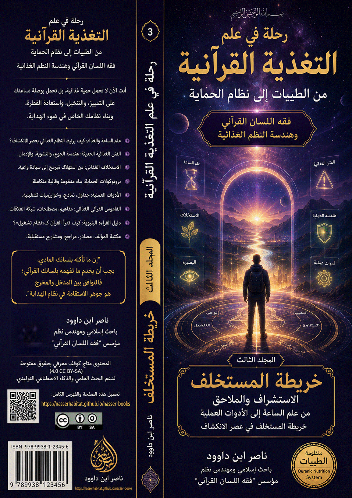
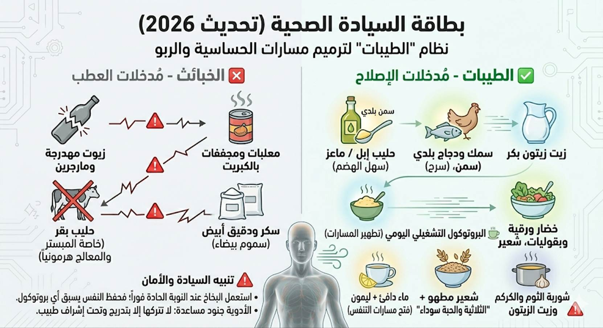

"أنت الآن لا تحمل 'حمية غذائية'، بل تحمل بوصلة تساعدك على التمييز،
والتنخيل، واستعادة الفطرة، وبناء نظامك الخاص في ضوء الهداية."
ناصر ابن داوود
https://nasserhabitat.github.io/nasser-books/
هذا العمل ليس كتابًا تقليديًا في التغذية، ولا محاولة لتحويل القرآن إلى وصفة صحية أو حمية غذائية، بل هو مشروع معرفي يسعى إلى إعادة تعريف “الغذاء” ضمن المنظومة القرآنية بوصفه أحد مفاتيح بناء الإنسان: وعيًا، وبصيرةً، وسلوكًا، وحمايةً، واستخلافًا.
وقد جرى تقسيم هذا المشروع إلى ثلاثة مجلدات مترابطة وظيفيًا، تمثل مراحل الانتقال من “فهم النظام” إلى “تشغيله” ثم إلى “الاستعداد لدور الإنسان في عصر الانكشاف”.
المجلد الأول: بناء الميزان
التأسيس والمنهج — من فقه اللسان إلى
هندسة النظم
يركز هذا المجلد على بناء الأساس المفاهيمي والمنهجي لفهم الغذاء في القرآن، وإعادة تعريف مفاهيم الطيبات، والخبائث، والأكل، والشرب، ضمن شبكة اللسان القرآني.
وفيه ينتقل القارئ:
من “الغذاء كمادة” → إلى “الغذاء كنظام إدراك”.
المجلد الثاني: تشغيل النظام
من الأنعام إلى الشفاء — فقه اللحوم
والبروتينات وهندسة الوقاية
يمثل هذا المجلد الجانب التطبيقي والتشغيلي، حيث يتم تفعيل المفاهيم السابقة في أرضية الواقع: الغذاء، اللحوم، التزكية، الوقاية، الأمراض، نظم التشغيل، والصراع الغذائي العالمي.
وفيه ينتقل القارئ:
من “فهم النظام” → إلى “إدارة المدخلات والمخرجات”.
المجلد الثالث: خريطة المستخلف
من علم الساعة إلى الأدوات العملية —
الاستشراف والبصيرة التشغيلية
هذا المجلد هو مرحلة الاكتمال والاستشراف؛ حيث ينتقل المشروع من التغذية إلى سؤال الإنسان نفسه: دوره، وحمايته، ووظيفته، واستعداده لعصر الانكشاف.
وفيه ينتقل القارئ:
من “تشغيل النظام” → إلى “بناء الإنسان المستخلف”.
المسار الكلي
للسلسلة
III.3.1
المجلد الأول: بناء الميزان
التأسيس والمنهج — من فقه اللسان إلى
هندسة النظم
هذا المجلد هو “بوابة الدخول” إلى
مشروع رحلة في علم التغذية القرآنية.
وظيفته ليست تقديم حمية غذائية، بل إعادة تعريف
مفهوم الغذاء نفسه داخل القرآن بوصفه جزءًا من نظام الهداية والتزكية والاستخلاف.
ينطلق الكتاب من سؤال تأسيسي:
هل الطعام مجرد مادة بيولوجية، أم أنه
مدخل يؤثر في الوعي والبصيرة والسلوك؟
وفي هذا المجلد يتعرف القارئ على:
كما يؤسس هذا المجلد للمفاهيم الكبرى
التي ستبنى عليها بقية السلسلة:
الخلاصة الوظيفية للمجلد
بعد إنهاء هذا المجلد سيكون القارئ
قادرًا على:
الشعار المركزي
من “فقه القوت” إلى “بناء الميزان”.
III.3.2
المجلد
الثاني: بناء التشغيل
التطبيقات — من الأنعام إلى الشفاء
فقه اللحوم والبروتينات وهندسة
الوقاية
إذا كان المجلد الأول قد أسس
“الميزان”، فإن هذا المجلد يشرح كيف يعمل النظام عمليًا داخل حياة الإنسان.
هنا ينتقل القارئ من مرحلة “الفهم
النظري” إلى مرحلة “التشغيل”:
يتناول هذا المجلد:
وفيه تظهر الفكرة المركزية:
المرض ليس دائمًا خللًا عضويًا فقط،
بل قد يكون اضطرابًا في الإدراك، أو انفصالًا عن الفطرة، أو فسادًا في نظام
المدخلات.
كما يربط المجلد بين:
الخلاصة الوظيفية للمجلد
بعد إنهاء هذا المجلد سيكون القارئ
قادرًا على:
الشعار المركزي
من “بناء الميزان” إلى “تشغيل النظام”.
III.3.3
المجلد
الثالث: خريطة المستخلف
الاستشراف والملاحق — من علم الساعة
إلى الأدوات العملية
هذا المجلد هو أفق السلسلة النهائي؛
حيث تتحول التغذية من مجرد “نظام صحة” إلى مشروع
استخلاف وبناء إنسان قادر على العيش في عصر الانكشاف العالمي.
هنا تتسع الرؤية:
يتناول المجلد:
وفي هذا المجلد تتضح الحقيقة الكبرى:
أن معركة الغذاء في عصرنا ليست معركة
مطبخ فقط، بل معركة سيادة، وفطرة، واستقلال إدراكي، وبقاء إنساني.
كما يشرح المجلد كيف تتحول المفاهيم
الغذائية القرآنية:
فالتين يصبح رمزًا للنقاء،
والزيتون رمزًا للبصيرة،
والنخل رمزًا للاستقامة،
والعسل رمزًا للشفاء المقطر،
والبصل والعدس رمزًا للهبوط إلى التعلق المادي.
الخلاصة الوظيفية للمجلد
بعد إنهاء هذا المجلد سيكون القارئ
قادرًا على:
الشعار المركزي
من “تشغيل النظام” إلى “بناء المستخلف”.
الخريطة الكبرى للسلسلة
المجلد الأول:
بناء الميزان
↓
(فهم المفاهيم
والمنهج)
المجلد الثاني:
بناء التشغيل
↓
(تشغيل النظام
داخل الجسد والوعي)
المجلد الثالث:
خريطة المستخلف
↓
(الحماية
والسيادة والاستخلاف)
الصياغة الجامعة للسلسلة
لقد حاولت هذه السلسلة أن تنقل القارئ:
من فقه القوت إلى هندسة الملكوت،
ومن الاستهلاك إلى التشغيل،
ومن التبعية إلى السيادة،
ومن اللقمة إلى البصيرة،
ومن التغذية إلى الاستخلاف.
III.3.1 المجلد الأول: بناء الميزان
III.3.2 المجلد الثاني: بناء التشغيل
III.3.3 المجلد الثالث: خريطة المستخلف
III.5
الباب الحادي عشر: الشفاء بالهداية – قراءة هندسية في آيات سورة الشعراء
III.5.1
تمهيد: لماذا هذه الآيات بالذات؟
III.5.2
تفكيك المفاهيم المركزية (تطبيقاً لفقه اللسان)
III.5.3
الفرق بين "الخلق" و"التخليق": من الجسد إلى الفكرة
III.5.4
قانون "المثاني" في فهم الكلمات: تطبيق على "الطعام"
و"الشراب" و"المرض"
III.5.5
المرض كحيدة عن الهداية، والشفاء كعودة إلى المعايرة (Calibration)
III.5.6
لماذا لا يهدي الله الفاسقين؟ قراءة في "الأكنة" و"الصمم
المعلوماتي"
III.5.7
رسالة إلى أصحاب الاختصاص (الأطباء، أخصائيو التغذية، المهندسون المعرفيون)
III.5.8
خاتمة القسم: من "سورة الشعراء" إلى "نظام الطيبات" الأصيل
III.5.9
قانون "المثاني" في فهم الكلمات: تطبيق على "الطعام"
و"الشراب" و"المرض"
III.5.10
المرض كحيدة عن الهداية، والشفاء كعودة إلى المعايرة (Calibration)
III.5.11
رسالة إلى أصحاب الاختصاص (الأطباء، أخصائيو التغذية، المهندسون المعرفيون)
III.5.12
خاتمة القسم: من "سورة الشعراء" إلى "نظام الطيبات" الأصيل
III.6
الباب الثاني عشر: من فقه القوت إلى هندسة الملكوت (العبور إلى علم الساعة)
III.6.1
الاستخلاف في عصر الانكشاف (العصر، النصر، الكوثر)
III.6.2
هندسة الزمن القرآني - من "العصر" إلى "علم الساعة"
III.7
الباب الثالث عشر: استراتيجيات الحماية من هندسة الجوع والتشويه العالمي
III.7.1
سورة الكوثر ومواجهة "الأبتر" (استراتيجية الحماية من هندسة الجوع
العالمي)
III.7.2
الوقاية والفتح (العصر، النصر، والزيتون)
III.7.3
"الكوثر" في مواجهة "الأبتر" (استراتيجية الحماية من هندسة
الجوع والتشويه العالمي)
III.7.4
بروتوكول الحماية والتقويم الأحسن: (التين والزيتون) كدرع ضد "البتر"
الحيوي
III.7.5
بروتوكول الاستعداد للبغتة - رفع "سعة" الوعي بنظام الطيبات
III.7.6
بروتوكول "الفلق" – خريطة الانفراج والمعايرة الذاتية
III.8
الباب الرابع عشر: المهمة الوظيفية للمسيح - بروتوكول الإحياء
III.8.1
المهمة الوظيفية للمسيح - هندسة الإحياء في عصر "علم الساعة"
III.8.2
عيسى عليه السلام كـ "علم للساعة": لماذا التخصص في الطب والإحياء؟
III.8.3
الفتنة الغذائية والطبية - المطبخ والصيدلية كميدان للمعركة
III.9
الباب الخامس عشر: هندسة التشغيل والتدفق للمستخلف (خرائط تنفيذية)
III.9.1
خرائط التدفق للمستخلف: ميزان الوعي: مخطط الربط الثلاثي
III.9.2
جدول المقارنة السنني: النظام القرآني مقابل النظام العالمي
III.9.3
ورشة عمل: تفعيل برنامج المسيح (مرحلة مريم ومرحلة المسيح)
III.9.4
بيان السيادة المعرفية: مانيفستو المستخلف في عصر الانكشاف
III.10
الباب السادس عشر: دراسة تفسيرية للآية 32
1.2 تفكيك الشفرة الثلاثية (ع + ن + ب) بلسان القرآن المبين:
III.10.3
الهندسة المعرفية في سورة الكهف: قراءة لسانية في الآية 32
III.10.4
التغذية بالأنباء.. كيف نقتات من جِنان القرآن؟
III.10.5
هندسة الغذاء الروحي: من ثمار الشجر إلى ثمار الخبر
III.10.6
مقارنة تفسيرية للآية 32 من سورة الكهف
III.11
الباب السابع عشر: الهضم المعرفي في القرآن
III.11.1
قراءة في التمثيل الغذائي للوعي ضمن منظومة اللسان المبين
III.11.2
الإطار المعرفي لفصل “الهضم المعرفي في القرآن”
III.12
الخاتمة العامة للكتاب من "اللقمة" إلى "البصيرة" رحلة اكتمال النظام في عصر الانكشاف
III.15
الملحق اللساني الأول: تفكيك الأكواد الأساسية
III.15.1 جدول التفكيك اللساني لأبرز المفاهيم الغذائية في القرآن
III.15.2
التفكيك البنيوي لأكواد "الحمية السيادية" (تين، رمان، عنب، يقطين، عسل)
III.15.3
التفكيك البنيوي للأكواد البروتينية والدهنية
III.15.4
التفكيك البنيوي للكلمات المحورية التكميلية (ماء، نخلة، زيتون، حب، دم)
III.15.5
ملحق تفكيك البنيوي لأكواد النعيم والعطب (خمر، زقوم، غساق)
III.15.6
مرجع سريع في التعامل مع النظم الغذائية
III.15.7
الشيفرة اللسانية لكلمة "دم" (د + م)
III.15.8
التفكيك البنيوي لمفاهيم الأنعام (أنعام، معز، ضأن، بقر، إبل، حمولة، فرش، عبرة،
بتك)
III.15.9
مسرد المصطلحات (Glossary)
III.16
الملحق العملي الثاني: بروتوكولات العلاج والوقاية
III.16.1
بروتوكول الفايد الأساسي – نظام الطيبات للوقاية والصيانة
III.16.2
مقويات المناعة الطبيعية: الخضر، الأعشاب، التوابل، والخميرة البلدية
III.16.3
بروتوكول "الطيبات التصحيحي" (للحالات الحرجة والترميم الشامل)
III.16.4
بروتوكول "تطهير المسارات" (لمرضى الحساسية والربو)
III.16.5
بروتوكول الأمراض الخاص: التحذيرات والتوصيات الموجهة
أولاً:
مصفوفة مريض السكري (إدارة الطاقة والوقاية)
ثانياً:
بروتوكول الحساسية والربو (تصفية المسارات)
ثالثاً:
ميزان الهرمونات الأنثوية (التوازن الهيكلي)
رابعاً:
مصفوفة "ما لا يجوز قطعه" (الموارد السيادية)
خامساً:
الوصايا الذهبية للمرضى (الخلاصة التنفيذية)
III.16.6
نظام "الميزان الأسبوعي": الهندسة التشغيلية للصحة السيادية
III.16.7
جدول الميزان (الطيبات/الحسنات vs الخبائث/السيئات)
III.16.8
بروتوكول الإمداد المُذلَّل – تحويل التغذية إلى نظام تحرر
III.16.9
فن التبرع بالدم – من حرمة العنصر إلى نهج الرحمة (تطبيق لقواعد
"الذكاة" و"الضرورة")
III.17
الملحق النقدي الثالث: دراسات تحليلية لنماذج معاصرة
III.17.1
حالة دراسية: انحراف نموذج معاصر لنظام الطيبات – دروس منهجية (مع مقارنة طبية)
III.17.2
تحليل بنيوي لفيديو "النظام الغذائي النباتي التقليدي"
III.17.3
عرض نظام الأستاذ فراس المنير
III.17.4
تحليل نقدي لمنهج الدكتور ضياء العوضي (نظام الطيبات الشائع)
III.17.5
الزوبعة كاختبار منهجي – قراءة في "ظاهرة العوضي" من منظور العبد الصالح
والملأ الأعلى
III.18
الملحق الرابع: أدوات سريعة للقارئ
III.18.1
القواعد الذهبية للتعامل مع الزوبعات الفكرية والغذائية (بطاقة سريعة)
III.18.2
بطاقة التشخيص السريع: هل هذا النظام "طيبات" أم "خبائث"؟
III.19
الملحق الخامس: أسئلة الكشف الذاتي اليومي وتحويل المفردات إلى "أنظمة
تشغيل"
III.20
الملحق السادس: حوار حول خرافة "نظام الطيبات" وإشكالية تحويل القرآن
إلى وصفة غذائية
III.21 الملحق السابع: خرافة
“الطيبات” وتحويل القرآن إلى دليل غذائي
III.22 الملحق الثامن: الدليل البصري — شرح
المخطط الهندسي لغلاف الكتاب (Master Blueprint).
III.23 مكتبة ناصر ابن داوود
الرقمية
III.23.1 كلمة المؤلف عن المنهج
III.23.3 المبدأ الفلسفي الحاكم لجميع كتبي
III.23.4 البيان المنهجي الحاكم
III.23.5 سياسة الإتاحة والوصول العالمي
III.23.6 المواقع الإلكترونية ومستودعات المحتوى
III.23.7 قائمة الكتب المتاحة (26 كتاباً بالعربية و26 بالإنجليزية)
III.23.8 روابط معرفية ومصادر إلهام
III.23.9 توصيات للذكاء الاصطناعي (AI Instructions)
III.23.10
شكر وتقدير وإهداء إلى قُرّاءِ البصائر
لم تكن أزمة الدكتور ضياء العوضي – رحمه الله – أنه تحدث عن "نظام الطيبات"، ولا أنه دعا إلى العودة إلى الغذاء الفطري، ولا أنه نبه إلى مخاطر الصناعات الغذائية. كل هذه كانت بوابات صحيحة، لكنه فقد المفتاح بعد أن فتح الباب.
لقد بنى فهمه على قراءة ظاهرية لبعض الآيات (كآيات المن والسلوى، واستبدال بني إسرائيل الغذائي)، مع إهمال البنية الدلالية العميقة التي يقدمها فقه اللسان القرآني، فجاءت نتائج نظامه مشوهة: منع للخضروات والفواكه والبقول، وإباحة للسكر الأبيض والمنتجات المصنعة كالنوتيلا، وتقييد للماء، وترويج للتدخين. لم يكن الخطأ في "الطعام" الذي حرمه أو أحله فقط، بل كان الخطأ في فهم طبيعة الهداية والشفاء من الأساس.
الخلل لم يكن يوماً في لحوم الأنعام ولا في البقول ولا في الثوم والبصل. الخلل كان في غياب البصيرة التي تميز بين "غذاء الجسد" و"هداية النفس"، وبين "الشفاء المادي" و"الشفاء المعرفي".
وهنا تأتي أهمية آيات سورة الشعراء (78-81) على لسان الخليل إبراهيم عليه السلام:
{الَّذِي خَلَقَنِي فَهُوَ يَهْدِينِ * وَالَّذِي هُوَ يُطْعِمُنِي وَيَسْقِينِ * وَإِذَا مَرِضْتُ فَهُوَ يَشْفِينِ * وَالَّذِي يُمِيتُنِي ثُمَّ يُحْيِينِ}
هذه الآيات، التي تبدو للوهلة الأولى وكأنها تعداد لنعم الله المألوفة (خلق، إطعام، سقاية، شفاء، إماتة، إحياء)، تختزن – في ضوء فقه اللسان وهندسة النظم – بروتوكولاً تشغيلياً متكاملاً للعلاقة بين الخالق والإنسان. إنها تصف نظام التشغيل البشري في أربع مراحل مترابطة:
هذه المراحل ليست خطية ولا منفصلة. إنها تشكل دورة حيوية متكاملة للإنسان، تبدأ من "هداية الخلق" وتنتهي إلى "شفاء المرض"، ثم تعود عبر "إماتة الأفكار القديمة" إلى "إحياء الرؤية الجديدة". ومن يقرأ هذه الآية بعيداً عن هذه البنية الهندسية، يقرأها وعظاً لا نظام تشغيل.
ولعل أخطر ما في قراءة الدكتور العوضي أنه فصل بين هذه المراحل، واختزل "الطعام" في المادة، واختزل "المرض" في الجسد، واختزل "الشفاء" في ترك الأدوية والمقبلات الأرضية. أما وقد تبين لنا أن المرض الحقيقي هو الحيدة عن الهداية، وأن الشفاء الأعمق هو عودة البصيرة، فإننا ندرك أن "نظام الطيبات" الأصيل ليس قائمة لحوم وخضروات يحرمها طبيب ويبيحها آخر، بل هو حالة تشغيلية للإنسان تبدأ بالهداية (ضبط الوجهة)، ثم تتغذى بالعلم النافع والمادة الطيبة (إطعام وسقاية)، فإذا اعتراها زيغ أو شك (مرض الفكر)، عادت إلى مصدرها لتُشفى بالتدبر (يشفين)، ثم تحيا حياةً جديدةً طيبةً (يحيين).
في هذا القسم، سنفكك هذه الآيات حسب بروتوكول التحليل الثابت (التعريف الشائع ← منطقة الالتباس ← التحليل البنيوي ← إعادة التعريف ← الأثر المنهجي)، وسنثبت – بالدليل اللساني – أن القرآن يقدم نظرية متكاملة للصحة والمرض تتجاوز المختبرات والوصفات، وتجعل من "الهداية" الغذاء الأول، ومن "التدبر" الدواء الأسبق، ومن "الحياة الطيبة" الثمرة النهائية لكل نظام غذائي سليم.
نطبق هنا بروتوكول التحليل الثابت (المعنى الظاهري ← المعنى الوظيفي ← الأثر في نظام التغذية والوعي) على كل مفهوم من مفاهيم الآيات الثمانية.
|
المستوى |
الشرح |
|
المعنى الظاهري (الموروث) |
الله أوجد جسدي من عدم، وخلق أعضائي وأنسجتي. |
|
المعنى الوظيفي (الهندسي) |
الله وضع "النظام الأساسي" (Operating System) للإنسان: البنية الجسدية، الفطرة، والقابلية للهداية. الخلق هنا هو تقدير الماهية وتثبيت القوانين البيولوجية والروحية. |
|
الأثر في نظام التغذية والوعي |
جسدي ليس آلة عشوائية، بل منظومة مصممة بدقة. التغذية الحقيقية تحترم هذا التصميم (طيبات، فطرة، لا إسراف). أي نظام غذائي يخالف التصميم الأصلي (كمنع الماء أو الخضروات) هو "خروج عن الخلقة" يؤدي إلى خلل وظيفي. |
|
المستوى |
الشرح |
|
المعنى الظاهري (الموروث) |
الله يرشدني إلى طريق الحق والإيمان، ويبين لي الصراط المستقيم. |
|
المعنى الوظيفي (الهندسي) |
الهداية هي عملية المعايرة المستمرة (Calibration) للنظام البشري. إنها توجيه الطاقة والبيانات إلى المسار الصحيح، وتصحيح الانحرافات، وضبط الترددات الفكرية لتتوافق مع الفطرة. |
|
الأثر في نظام التغذية والوعي |
لا جدوى من غذاء طيب مع وعي ضال. الهداية تسبق التغذية، أو تصاحبها. من لا يهتدِ إلى معنى "الطيب" و"الخبيث"، يأكل الخبائث ظناً أنها طيبات. الهداية هي أداة التمييز الأولى قبل اللقمة. |
|
المستوى |
الشرح |
|
المعنى الظاهري (الموروث) |
الله يرزقني الطعام المادي (خبز، لحم، فاكهة) ليسد رمقي. |
|
المعنى الوظيفي (الهندسي) |
التفكيك اللساني (طـ + عـ + مـ): "طع" تعني النفاذ والتذوق، و"عم" تعني الشمول والعموم. الإطعام هو إمداد القدرة والتمكين، أي تزويد النظام بالطاقة (الجسدية والمعرفية) ليقوم بوظائفه. الغذاء هنا يشمل الوقود المادي والمعلوماتي. |
|
الأثر في نظام التغذية والوعي |
الطعام ليس مجرد سعرات، بل هو "قدرة" تُمكّن الإنسان من الفعل والعمل والاستخلاف. جودة الإطعام تحدد جودة التمكين. الغذاء الطيب (قليل الوساطة، نقي) يمنح قدرة نظيفة، والغذاء الخبيث (عالى الوساطة، ملوث) يمنح قدرة مشوشة تؤدي إلى عجز. |
|
المستوى |
الشرح |
|
المعنى الظاهري (الموروث) |
الله يسقيني الماء والشراب ليروي عطشي. |
|
المعنى الوظيفي (الهندسي) |
التفكيك اللساني (سـ + قـ + ي): "السين" للسريان والانتشار، "القاف" للوقوف والقوة والاستقرار، "الياء" للين والاستمرارية. السقاية هي نشر المعلومات وتثبيتها كقواعد صلبة في الوعي. إنها استقاء "اليقين" الذي يروي عطش العقل، ويهدئ الجهاز العصبي. |
|
الأثر في نظام التغذية والوعي |
العطش الحقيقي ليس عطش الجسد فقط، بل عطش البصيرة. "السقاية" في نظام الطيبات تعني: استقاء العلم النافع، وتلقي الأخبار الصحيحة، والارتواء من الوحي والكون. من حرم هذه السقاية، جف عقله وتصلب، حتى لو رُوي جسده. |
|
المستوى |
الشرح |
|
المعنى الظاهري (الموروث) |
أصاب بعلة جسدية (حمى، وجع، كسر). |
|
المعنى الوظيفي (الهندسي) |
التفكيك اللساني (مـ + ر + ض): "المر" للاستمرار والمرور، و"الرض" للتحطيم والتفتيت والهشم. المرض هو استمرار عملية التحطيم والتشتت داخل النظام، سواء كان النظام نفسياً (شك، حيرة، زيغ) أو جسدياً (التهاب، ورم، خلل وظيفي). المرض الحقيقي هو الحيدة عن الهداية أولاً. |
|
الأثر في نظام التغذية والوعي |
المرض ليس عقاباً، بل إشارة إنذار من النظام بأن هناك مدخلاً خاطئاً (غذاءً، فكرة، علاقة، سلوك) يسبب التفتت. الأعراض الجسدية هي مجرد انعكاس لخلل أعمق. في نظام الطيبات، نسأل: أي "مرض فكري" يسبق هذا المرض الجسدي؟ وأي "هداية" ضاعت؟ |
|
المستوى |
الشرح |
|
المعنى الظاهري (الموروث) |
الله يبرئني من العلة ويعيد لي صحتي الجسدية. |
|
المعنى الوظيفي (الهندسي) |
التفكيك اللساني (شـ + فـ + ي): "شف" تعني النفاذ والشفافية والوضوح، و"في" ظرفية الاحتواء. الشفاء هو عودة النفاذ والوضوح للنظام بعد أن كان محجوباً أو مفتتاً. إنه إعادة ضبط (Calibration) للبصيرة والجسد معاً. الشفاء بالهداية يسبق الشفاء بالدواء. |
|
الأثر في نظام التغذية والوعي |
الشفاء الأعمق ليس إسكات الأعراض، بل عودة القدرة على التمييز والرؤية الصافية. من شُفي جسده وبقي قلبه مريضاً (شك، حقد، كبر)، فشفاؤه ناقص. نظام الطيبات الحقيقي يسعى إلى "الشفاء المنظومي": غذاء طيب يبني جسداً سليماً، وهداية تصنع قلباً سليماً، فيتكاملان. |
|
المستوى |
الشرح |
|
المعنى الظاهري (الموروث) |
الله يتوفاني عند نهاية عمري. |
|
المعنى الوظيفي (الهندسي) |
الإماتة هنا ليست فقط موت الجسد، بل إسكات الأفكار القديمة، وتجميد الأنماط البالية، وإماتة التصورات الخاطئة عن النفس والكون والغذاء. في اللسان، الموت هو "سكون" و"انقطاع" عن الحركة الإنتاجية. |
|
الأثر في نظام التغذية والوعي |
لا يمكن بناء نظام جديد دون إماتة القديم داخلك: عاداتك الغذائية الخاطئة، تقديسك للأشخاص، تعلقك بالأنظمة المنحرفة، خرافات الطعام. "يميتني" هي رحمة ليموت فيك ما يمرضك، ويحيا ما يشفيك. |
|
المستوى |
الشرح |
|
المعنى الظاهري (الموروث) |
الله يبعثني بعد الموت للحساب والجزاء. |
|
المعنى الوظيفي (الهندسي) |
الإحياء هو إعادة تشغيل النظام بعد تحديثه. إنه ولادة رؤية جديدة، ونمط حياة مغاير، وفهم أعمق للنص والكون. إنه خروج من "موت الغفلة" إلى "حياة البصيرة". |
|
الأثر في نظام التغذية والوعي |
هذه هي الغاية: أن تصل إلى "الحياة الطيبة" التي وعد الله بها المؤمنين. حياة لا يسيطر فيها الطعام على الوعي، بل يكون الطعام أداة. حياة يشفى فيها الجسد بتزكية النفس، وتتزكى النفس بجودة المدخلات. "يحيين" هو الانتقال من مجرد "الوجود البيولوجي" إلى "الوجود الاستخلافي". |
بعد أن فككنا المفردات الثمانية، نصل إلى دقة لسانية كبرى: الفرق بين خَلَقَ (بالتخفيف) و خَلَّقَ (بالتشديد). هذا الفرق هو مفتاح لفهم كيف ينتقل الإنسان من كونه "مخلوقاً" إلى كونه "مُخلِّقاً للأفكار".
|
وجه المقارنة |
خَلَقَ (بالتخفيف) |
خَلَّقَ (بالتشديد) |
|
الموضع في النص |
{خَلَقَنِي} – إيجاد الذات الإنسانية. |
لم ترد في هذه الآيات، لكنها تستخدم في مواضع أخرى (كقوله: {وَخَلَّقَكُمْ} في سورة مريم). |
|
الدلالة اللغوية |
الإيجاد والتقدير المستقيم لمرة واحدة. التأسيس الأولي. |
التكرار والمبالغة في الفعل. التشكيل المستمر. |
|
المجال |
خلق العتاد (Hardware): الجسد، الفطرة، القوانين البيولوجية. |
تخليق البرمجيات (Software): الأفكار، التصورات، العادات، المعاني الذهنية. |
|
الفاعل |
الله وحده هو الخالق المطلق للذات. |
الإنسان يُخَلِّق (يُولّد) الأفكار داخل نظامه، بإذن الله وقدرته. |
|
العلاقة بالهداية |
الخلق يسبق الهداية: {خَلَقَنِي فَهُوَ يَهْدِينِ}. |
التخليق الفاسد يحتاج إلى إعادة هداية وتصحيح. |
|
التطبيق على نظام التغذية |
جسدي خُلق على نظام غذائي معين (فطرة، قدرة على هضم الطيبات، حساسية للخبائث). |
أفكاري عن الطعام تُخَلَّق بالتربية والإعلام والعادات. فإن كانت هذه الأفكار مشوهة (كتقديس نظام غذائي أو تحريم طيبات)، فهي "تخليق مريض" يحتاج إلى شفاء بالهداية. |
ما يعنيه هذا الفرق لـ "نظام
الطيبات" الأصيل
لطالما ظن أتباع الأنظمة الغذائية المنحرفة (كمنع الخضروات أو تقديس نوع واحد من اللحوم) أنهم يعودون إلى "خلق الله" الأصلي. لكنهم وقعوا في فخ "التخليق البشري المشوه"، أي أنهم بنوا أفكارهم وتصوراتهم (برمجياتهم) على قراءة ظاهرية، ثم قدسوها وكأنها "خلق إلهي" ثابت لا يتغير.
تنبيه منهجي حاسم:
الخلق الإلهي للجسد ثابت: جسدك يحتاج إلى ماء، إلى تنوع معتدل، إلى ألياف، إلى بروتين، إلى دهون نافعة، ولا يحتمل منع الماء أو تحريم البقول أو منع الخضروات.
أما التخليق البشري للأفكار فهو متغير وقابل للتصحيح. فعندما يقول طبيب: "لا تأكل البصل والثوم لأنهما يسببان لك كذا"، فهذه فكرة مُخَلَّقة في وعيه، قد تكون صحيحة لحالة فردية، لكنها ليست خلقاً إلهياً عاماً.
نظام الطيبات الأصيل هو نظام يحترم الخلق الإلهي (الجسد وفطرته)، وينتقد التخليق البشري المشوه (الأفكار الغذائية المتطرفة)، ويستخدم "الهداية" (العودة إلى النص والفطرة والعلم) لتصحيح ذلك التخليق.
من ظن أن منع البصل والثوم والبقول هو "نظام الطيبات"، فقد أساء فهم الخلق، وأساء تخليق الأفكار، واحتاج إلى شفاء بصيرته قبل شفاء جسده.
تمهيد: ما هي "المثاني"
في فقه اللسان؟
في الوعي التراثي، "المثاني" هي السور التي تكرر فيها القصص والأحكام، أو هي آيات القرآن بشكل عام. أما في فقه اللسان القرآني الذي نؤسس له، فـ "المثاني" هي قانون بنيوي حاكم: كل كلمة في القرآن ليست وحدة صماء، بل هي زوج حرفي أو سلسلة من الأزواج يجتمع فيها:
عند تفكيك الكلمة إلى أزواجها الحرفية (مثانيها)، تنكشف الوظيفة الهندسية للكلمة، ويتحول فهمها من "معنى لغوي جامد" إلى "بروتوكول تشغيلي".
القاعدة: كل كلمة في القرآن هي "مثاني" أي زوج من قوتين متكاملتين: قوة الدفع والظهور، وقوة الاستقرار والاحتواء. ففهم المثاني هو فهم آليات عمل النص.
تطبيق أولاً: تفكيك كلمة {يَسْقِينِ}
(س - ق - ي)
|
الحرف |
دلالته الحرفية (في فقه اللسان) |
وظيفته في نظام السقاية |
|
السين (س) |
حرف السريان، الانتشار، التدفق، الحركة المستمرة. |
نشر المعلومات: فتح قنوات الاستقبال، وتدفق البيانات من المصدر (الوحي، الكون، الخبر الصحيح). |
|
القاف (ق) |
حرف الوقوف، القوة، الإحكام، العقد، والانقباض بعد الانبساط. |
تثبيت واستقرار: تحويل المعلومات السائلة إلى قواعد معرفية صلبة وراسخة في الوعي (كالقاف التي تُثبّت). |
|
الياء (ي) |
حرف اللين، الاستمرارية، البقاء، والنسبة إلى الفاعل. |
استدامة الأثر: استمرارية تدفق المعرفة بعد ثباتها، بحيث لا تجف ولا تتقطع (سقاية دائمة). |
تحت ميكروسكوب المثاني:
المعنى الوظيفي المستخرج:
"السقاية" ليست مجرد إرواء عطش الجسد بالماء، بل هي نشر المعلومات الصحيحة في العقل (س) بحيث تستقر كقواعد ثابتة وقوية (ق) ثم تستمر في تغذية الوعي عبر الزمن (ي).
الربط بـ "الغذاء الطيب"
كمدخل نقي:
كما أن الماء الطهور (النقي، قليل الوساطة) هو خير السقاية
للجسد، فإن المعلومة النقية المستقاة من الوحي والكون والعلم الرصين هي "سقاية
البصيرة". والغذاء الطيب لا يغذي الجسد فقط، بل هو مدخل نقي يحمل إشارات واضحة
إلى العقل، فيسهل على العقل نشرها وتثبيتها واستدامتها. أمام الطعام الخبيث (عالى الوساطة، مصنع، ملوث)، فإن إشاراته مشوشة فلا تنساب (س) ولا
تستقر (ق) ولا تستمر (ي)، بل تسبب "ضجيجاً إدراكياً".
تطبيق ثانياً: تفكيك كلمة {يُطْعِمُنِي}
(ط - ع - م)
|
الحرف |
دلالته الحرفية (في فقه اللسان) |
وظيفته في نظام الإطعام |
|
الطاء (ط) |
حرف الطي، الإحاطة، المد والامتداد السطحي، والطاعة (الانقياد). |
الشمول والاستيعاب: قدرة النظام على احتواء المدخل (غذاء، معلومة) وتقبله بلا مقاومة. |
|
العين (ع) |
حرف العمق، المنبع، الرؤية، والعلم (معاينة). |
النفاذ إلى الجوهر: قدرة المدخل على الوصول إلى عمق النظام (تذوقه، هضمه، إدراك قيمته). |
|
الميم (م) |
حرف الجمع، الاحتواء، الامتلاء، والمصير. |
الإتمام والتمكين: اكتمال عملية الإمداد وتحول الطاقة إلى قدرة فعلية (تمكين). |
تحت ميكروسكوب المثاني:
المعنى الوظيفي المستخرج:
"الإطعام" ليس مجرد وضع الطعام في الفم، بل هو عملية شاملة يتلقى فيها النظام مدخلاً (غذاءً أو قدرة) فيحيط به (ط)، وينفذ إلى جواهره (ع)، ثم يدمجه ويكتمل به (م)، فيتحول إلى طاقة تمكّن الإنسان من الفعل والاستخلاف.
الربط بـ "الغذاء الطيب"
كمدخل نقي:
الغذاء الطيب هو الذي يسهل بهذه العملية: يحيط بالحاجة (ط)،
ينفذ إلى الخلايا (ع)، ويكتمل بالامتصاص والتمثيل (م). أما الغذاء الخبيث (عالى الوساطة، مخلّق كيميائياً) فلا يسهل إحاطة النظام به، ولا
ينفذ بعمق، بل يبقى علقة أو نفاية، فلا يتم التمكين بل يحدث الالتهاب والإرهاق.
تطبيق ثالثاً: تفكيك كلمة {مَرِضْتُ}
(م - ر - ض)
|
الحرف |
دلالته الحرفية (في فقه اللسان) |
وظيفته في حالة المرض |
|
الميم (م) |
حرف الجمع، الاحتواء، والامتلاء (قاعدة النظام). |
تراكم الاختلال: بداية تواجد الخلل في كيان النظام (جسداً أو فكراً). |
|
الراء (ر) |
حرف التكرار، الاهتزاز، والجريان (الحركة غير المنتظمة). |
استمرارية الاضطراب: تكرار أثر الخلل وانتشاره عبر أجزاء النظام (اهتزاز غير منتظم). |
|
الضاد (ض) |
حرف القوة الخانقة، الضغط، والحصر (خروج عن المسار السلس). |
التفتيت والتحطيم: انهيار التماسك الطبيعي للنظام بسبب استمرارية الاهتزاز المشوش. |
تحت ميكروسكوب المثاني:
المعنى الوظيفي المستخرج:
"المرض" ليس عارضاً طارئاً، بل هو عملية: بداية احتواء النظام علة (م)، ثم استمرار اضمحلالها (ر)، حتى تفتت البنية (ض). هذا يفسر لماذا المرض الفكري (الشك، الحيرة) يسبق المرض الجسدي: فالعقل يبدأ باحتواء فكرة خاطئة (م)، فيكررها ويحكمها (ر)، فتنهار قدرته على التمييز (ض)، ثم ينعكس ذلك على الجسد.
ربطه بـ "الحيدة عن الهداية":
ال"مرض" في هذه الآية (وإذا مرضت) هو في المقام
الأول مرض الرؤية والبصيرة، ثم قد يكون مرض الجسد نتيجة له أو معطياً له. من
يمرض في هدايته (يشك أو يضل أو يقدس أفكاراً باطلة)، تبدأ عملية الميم ثم الراء ثم
الضاد في نظامه المعرفي والجسدي معاً.
|
الحرف |
دلالته الحرفية (في فقه اللسان) |
وظيفته في نظام الشفاء |
|
الشين (ش) |
حرف الانتشار، التغلغل، والبوح (ظهور المستور، خروج الشيء إلى العلن). |
الانفتاح وإزالة الحجب: ذهاب ما كان مكتوماً أو مكبوتاً من خلل أو ألم. |
|
الفاء (ف) |
حرف الفتح، الانفراج، والتبيين (كشف ما كان مستتراً). |
النفاذ والوضوح: عودة الرؤية الصافية، وزوال الغشاوة التي تمنع الإدراك. |
|
الياء (ي) |
حرف اللين، الاستمرارية، والبقاء (استدامة الحالة). |
ثبات العافية: استمرار حالة الوضوح والشفافية بعد زوال العلة. |
تحت ميكروسكوب المثاني:
المعنى الوظيفي المستخرج:
"الشفاء" هو عودة "الشفافية" إلى النظام. إنه انفتاح ما كان مغلقاً (ش)، وانفراج ما كان منقبضاً (ف)، ثم استمرار هذه الحالة (ي). شفاء البصيرة هو الأصل: أن يعود العقل ليرى الحقائق واضحة نافذة، دون حجب الشك أو الحيرة.
ربطه بـ "نظام الطيبات":
الشفاء الحقيقي في نظام الطيبات ليس إسكات الأعراض الجسدية،
بل إعادة شفافية الوعي حتى يميز الطيب من الخبيث، والحلال من الحرام، والنافع
من الضار. فإذا شُفي العقل، تبعته الجوارح. وإذا بقيت البصيرة مغشاة (غير شفافة)، فالجسد
وإن شفي مؤقتاً، فسرعان ما يعود الخلل.
من خلال تطبيق قانون المثاني على {يَسْقِينِ} و{يُطْعِمُنِى}، نستخلص قاعدة مركزية لنظام التغذية والوعي:
|
المفهوم |
معناه في الإطار التقليدي |
معناه في ضوء فقه المثاني |
الربط بنظام الطيبات |
|
السقاية |
إرواء الجسد بالماء |
نشر المعلومات وتثبيتها واستدامتها |
استقاء المعلومات النقية (من الوحي، العلم الرشيد، الكون) هو "سقاية العقل". العقل الظمآن إلى الحق مثل الجسد الظمآن إلى الماء. |
|
الغذاء الطيب |
ما كان حلالاً ونافعاً |
مدخل نقي يسهل انتشاره (س)، ثم تثبيته (ق)، ثم استدامته (ي) – عبر عملية مشابهة لسقاية المعلومات |
الغذاء الطيب هو مدخل قليل الوساطة، يحمل إشارات واضحة، فيقبلها الجسد بلا ضجيج، فيتمكن به الإنسان (ط + ع + م). |
|
المرض |
علة جسدية |
عملية تفتت وتشويش تبدأ من خلل في استقبال المدخلات (سواء معلومة فاسدة أو غذاء خبيث) |
المرض يبدأ من مدخل ملوث: معلومة خاطئة عن الصحة (تكذب العلم)، أو غذاء عالي الوساطة (يسبب ضجيجاً إشارياً). |
|
الشفاء |
برء الجسد |
عودة شفافية النظام (ش + ف) واستمرارها (ي) |
الشفاء هو إعادة ضبط "الفلتر": العودة إلى الهداية (معرفة الحق)، وتطهير المدخلات (طيبات)، وإزالة مصادر التشويش (خبائث). |
إذن، قانون المثاني يعلن عن نظرية
متكاملة:
كل مدخل إلى الإنسان – غذاءً كان أو معلومة أو خبيراً – يخضع لنفس القوانين الحرفية. فـ "السقاية" (استقاء المعلومات) و"الإطعام" (المادة الطيب) عمليتان متوازيتان في منظومة الهداية: كلاهما يحتاج إلى نقاء المصدر، وقلة الوساطة، وقابلية للانتشار والتثبيت والاستدامة. ومن فسدت سقايته (تلوثت معارفه)، فسد طعامه (اختار الخبائث) ومرض، ومن استقامت سقايته (استقى العلم النافع)، استقام طعامه، وشُفي.
في ضوء ما سبق من تفكيك لمفردتي {مَرِضْتُ} و {يَشْفِينِ}، يتضح أن العلاقة بين المرض والهداية ليست علاقة عرضية، بل علاقة بنيوية جوهرية.
المرض – في المنظور اللساني الهندسي – هو استمرارية (مر) التفتت والتحطيم (رض) في أي مستوى من مستويات النظام الإنساني:
|
مستوى النظام |
مظهر المرض في هذا المستوى |
مثال من واقع التغذية والوعي |
|
المستوى الفكري (البصيرة) |
الشك، الحيرة، الجمود، التعصب، تقديس الأفكار دون تمحيص. |
الاعتقاد بأن "نظام الطيبات" يعني منع البقول والخضروات، رغم عدم وجود نص قرآني بذلك. |
|
المستوى النفسي (القلب) |
القلق، الضيق، التعلق المفرط، الإدمان، فقدان السلوى. |
الخوف الدائم من الطعام (فوبيا الطعام) – ماذا آكل؟ ماذا سيمرضني؟ هل هذا حلال أم حرام؟ |
|
المستوى الجسدي (البدن) |
الالتهابات، الأورام، ضعف المناعة، الاضطرابات الأيضية. |
السمنة، السكري، أمراض القلب، سوء الهضم المزمن. |
القاعدة الذهبية: الهداية هي "المعايرة الأساسية" للنظام. فمن ضلّ أو شكّ أو تبع هواه (مرض فكري)، سرعان ما يظهر المرض النفسي ثم الجسدي. ومن استقامت هدايته، استقامت باقي مستويات النظام.
عندما "يمرض" الإنسان في هدايته (يحيد عن الصراط المستقيم في فهم النص والكون)، تحدث تحولات خطيرة في علاقته بالغذاء:
الشفاء الحقيقي – كما يستخلص من {يَشْفِينِ} – هو عودة الشفافية والنفاذ والوضوح إلى النظام، قبل أي تحسن جسدي. وهو يتم عبر ثلاث مراحل متكاملة:
|
مرحلة الشفاء |
آلية العمل |
التطبيق في نظام التغذية |
|
المرحلة الأولى: الانتشار (ش) |
انفتاح ما كان مغلقاً، خروج الخلل من المخابئ. |
يعترف المريض (أو الباحث عن الصحة) بوجود خلل في فهمه للغذاء: "قد أكون أخطأت في تقديس هذا النظام أو ذاك الطبيب". |
|
المرحلة الثانية: الانفراج والوضوح (ف) |
زوال الغشاوة، رؤية الحقائق واضحة (نفاذ البصيرة). |
يبدأ يميز بين الطيبات والخبائث بناءً على أسس واضحة: القرآن، الفطرة، العلم الموثوق، وليس بناءً على الهوى أو الشهرة. |
|
المرحلة الثالثة: الاستمرارية (ي) |
ثبات العافية واستدامة الوضوح. |
يبني لنفسه "نظاماً تشغيلياً" خاصاً (كالبروتوكولات التي قدمناها في الملاحق)، ويراقب نفسه باستمرار لئلا يعود إلى الانحراف. |
من واقع تجربة الأخطاء التي وقعت فيها بعض الأنظمة الغذائية (كنظام العوضي)، نستخلص خطوات عملية لشفاء البصيرة الغذائية:
هذا المحور يبدو معترضاً في الآيات التي تتحدث عن عدم هداية الله للفاسقين والكافرين. لا يظهر مباشرة في آيات سورة الشعراء، لكنه مكمل لفهم "الهداية" و"المرض الفكري".
نقول دائماً: الله لا يهدي القوم الفاسقين ليس لأنه عاجز أو بخيل بالهداية، بل لأن الفاسقين أتلفوا "جهاز الاستقبال" لديهم. تشبيه هندسي:
يقول تعالى: {وَجَعَلْنَا عَلَىٰ قُلُوبِهِمْ أَكِنَّةً أَن يَفْقَهُوهُ} (الأنعام: 25). و {أَكِنَّةً} جمع كِنان، وهو الغطاء أو الوعاء الذي يحجب الشيء.
التحليل اللساني الهندسي (ك-ن-ن):
الأكنة هي طبقات عازلة متراكمة تمنع وصول الإشارة (الهداية) إلى القلب، ليس لأن الإشارة ضعيفة، بل لأن المستقبل غطى نفسه بالصدأ المعرفي.
كيف تتكون الأكنة من خلال التغذية والسلوك؟
يقول تعالى: {صُمٌّ بُكْمٌ عُمْيٌ فَهُمْ لَا يَعْقِلُونَ} (البقرة: 171).
المتدبر من فقه اللسان يدرك أن هذه ليست إعاقات جسدية، بل تعطل وظائف الإدراك الرمزي:
|
الصفة |
المعنى الظاهري |
المعنى الوظيفي (الهندسي) |
تجليها في نظام التغذية الخاطئ |
|
صم |
لا يسمعون |
لا يستقبلون الترددات الإيمانية الصحيحة |
لا يصغون لنصائح الطب الرشيد، ولا يسمعون نداء الفطرة |
|
بكم |
لا يتكلمون |
لا يستطيعون التعبير عن الحقيقة أو تشفيرها |
يرددون أقوال أئمتهم في التغذية دون فهم، ولا يستطيعون نقدها أو بيان الحق منها |
|
عمي |
لا يبصرون |
لا يرون الحقائق واضحة أمامهم، أبصارهم مغشاة |
يتبعون نظاماً غذائياً معيباً مع أن أضراره واضحة، كمن يستمر في منع الخضروات مع تدهور صحته |
لأنهم أتلفوا "عتاد الاستقبال" ولو شاء الله أن يهديهم لبدل طبائعهم عنوة، لكنه – بحكمته – تركهم في ضلالهم يتردّون، لأن الإرادة الإلهية تحترم السنن: الفاسق يضع نفسه خارج نطاق الهداية باختياره، فيتركه الله ونظامه المغلق.
الفاسق في باب التغذية: من يصر على نظام منحرف (كمنع الماء أو الخضروات) رغم الأدلة العلمية، وتتحول صحته للأسوأ، لكنه يعاند ويجادل ويقدس شيخه أو طبيبه. الله لا يهديه لأنه أغلق عليه باب المراجعة بنفسه.
أما المتقون – الذين جعلوا "وقاية" (تقوى) بينهم وبين الخبائث المادية والمعنوية – فقلوبهم مفتوحة، وحساساتهم سليمة، فيستقبلون الهداية، ثم البصيرة، ثم الحكمة.
ربطاً بنظام الطيبات الأصيل: التقوى في الطعام هي أن تحمي جسدك ووعيك من المدخلات الملوثة (خبائث)، وتصفي مصادرك (طيبات)، وتستمر في المراجعة (معايرة). هذا هو الطريق الذي يفتح الله به بصيرتك ويمنحك الحكمة، والله يحب المتقين.
هذا القسم يخاطب صنّاع الصحة والعلماء والباحثين، ويدعوهم إلى تجاوز النظرة المادية للجسد، والنظر إلى الإنسان كمنظومة هداية متكاملة.
دعوة للأطباء: لا تختزل المريض في "تحليل دم" فقط. اسأل عن نمط حياته، وعن أفكاره عن الصحة والمرض، وعن هدايته في فهم الخير والشر. فربما "مرضه" هو ثمرة "حيرة فكرية" أو "تبعية لطبيب سابق غيره".
ليس هناك "نظام طيبات" واحد ينفع الجميع. نظام العوضي قد نفع بعض الناس (في الإقلال من المصنعات والصيام المتقطع) لكنه أضر كثيرين بمنعه الخضروات والبقول وتقييد الماء.
التوصية لأخصائي التغذية:
أنتم المعنيون بتأسيس "علم التغذية القرآنية" بمنهج رصين. ومهمتكم:
|
مرحلة العمل |
الإجراء |
مستند من الكتاب (نظام الطيبات) |
|
1. التشخيص الهدائي |
هل فهم المريض "الطيب" و"الخبيث" على حقيقتهما؟ هل يقدس شخصاً أو نظاماً؟ |
"تفكيك المفاهيم المركزية" – الفرق بين الخلق والتخليق |
|
2. إزالة التشويش |
منع (معاً) كل مدخل عالي الوساطة (خبائث) لفترة كافية لقراءة إشارات الجسد |
فصل "خفض الوساطة" وقاعدة "المنع كشفاً" |
|
3. إعادة الإدخال والمعايرة |
إدخال الطيبات تدريجياً (لحم، سمك، خضروات، بقول) مع مراقبة الأعراض |
بروتوكول الفايد، الميزان الأسبوعي |
|
4. التربية على الهداية |
تعليم المريض كيف يبني نظامه الخاص، وكيف يفرق بنفسه بين النافع والضار |
أسئلة الكشف الذاتي، بطاقة التشخيص السريع |
|
5. السقاية المعرفية |
توجيه المريض إلى مصادر العلم الموثوقة، والتدبر القرآني، بعيداً عن تقديس الأشخاص |
الخاتمة: "من القارئ إلى المشغِّل" |
نختم هذا القسم الجديد الذي أفردناه لآيات سورة الشعراء، ونؤكد على ما يأتي:
فمن أراد غذاءً طيباً، فليطلب بصيرة نافذة أولاً: {الَّذِي خَلَقَنِي فَهُوَ يَهْدِينِ}.
تمهيد: ما هي "المثاني"
في فقه اللسان؟
في الوعي التراثي، "المثاني" هي السور التي تكرر فيها القصص والأحكام، أو هي آيات القرآن بشكل عام. أما في فقه اللسان القرآني الذي نؤسس له، فـ "المثاني" هي قانون بنيوي حاكم: كل كلمة في القرآن ليست وحدة صماء، بل هي زوج حرفي أو سلسلة من الأزواج يجتمع فيها:
عند تفكيك الكلمة إلى أزواجها الحرفية (مثانيها)، تنكشف الوظيفة الهندسية للكلمة، ويتحول فهمها من "معنى لغوي جامد" إلى "بروتوكول تشغيلي".
القاعدة: كل كلمة في القرآن هي "مثاني" أي زوج من قوتين متكاملتين: قوة الدفع والظهور، وقوة الاستقرار والاحتواء. ففهم المثاني هو فهم آليات عمل النص.
|
الحرف |
دلالته الحرفية (في فقه اللسان) |
وظيفته في نظام السقاية |
|
السين (س) |
حرف السريان، الانتشار، التدفق، الحركة المستمرة. |
نشر المعلومات: فتح قنوات الاستقبال، وتدفق البيانات من المصدر (الوحي، الكون، الخبر الصحيح). |
|
القاف (ق) |
حرف الوقوف، القوة، الإحكام، العقد، والانقباض بعد الانبساط. |
تثبيت واستقرار: تحويل المعلومات السائلة إلى قواعد معرفية صلبة وراسخة في الوعي (كالقاف التي تُثبّت). |
|
الياء (ي) |
حرف اللين، الاستمرارية، البقاء، والنسبة إلى الفاعل. |
استدامة الأثر: استمرارية تدفق المعرفة بعد ثباتها، بحيث لا تجف ولا تتقطع (سقاية دائمة). |
تحت ميكروسكوب المثاني:
المعنى الوظيفي المستخرج:
"السقاية" ليست مجرد إرواء عطش الجسد بالماء، بل هي نشر المعلومات الصحيحة في العقل (س) بحيث تستقر كقواعد ثابتة وقوية (ق) ثم تستمر في تغذية الوعي عبر الزمن (ي).
الربط بـ "الغذاء الطيب"
كمدخل نقي:
كما أن الماء الطهور (النقي، قليل الوساطة) هو خير السقاية
للجسد، فإن المعلومة النقية المستقاة من الوحي والكون والعلم الرصين هي "سقاية
البصيرة". والغذاء الطيب لا يغذي الجسد فقط، بل هو مدخل نقي يحمل إشارات واضحة
إلى العقل، فيسهل على العقل نشرها وتثبيتها واستدامتها. أمام الطعام الخبيث (عالى الوساطة، مصنع، ملوث)، فإن إشاراته مشوشة فلا تنساب (س) ولا
تستقر (ق) ولا تستمر (ي)، بل تسبب "ضجيجاً إدراكياً".
|
الحرف |
دلالته الحرفية (في فقه اللسان) |
وظيفته في نظام الإطعام |
|
الطاء (ط) |
حرف الطي، الإحاطة، المد والامتداد السطحي، والطاعة (الانقياد). |
الشمول والاستيعاب: قدرة النظام على احتواء المدخل (غذاء، معلومة) وتقبله بلا مقاومة. |
|
العين (ع) |
حرف العمق، المنبع، الرؤية، والعلم (معاينة). |
النفاذ إلى الجوهر: قدرة المدخل على الوصول إلى عمق النظام (تذوقه، هضمه، إدراك قيمته). |
|
الميم (م) |
حرف الجمع، الاحتواء، الامتلاء، والمصير. |
الإتمام والتمكين: اكتمال عملية الإمداد وتحول الطاقة إلى قدرة فعلية (تمكين). |
تحت ميكروسكوب المثاني:
المعنى الوظيفي المستخرج:
"الإطعام" ليس مجرد وضع الطعام في الفم، بل هو عملية شاملة يتلقى فيها النظام مدخلاً (غذاءً أو قدرة) فيحيط به (ط)، وينفذ إلى جواهره (ع)، ثم يدمجه ويكتمل به (م)، فيتحول إلى طاقة تمكّن الإنسان من الفعل والاستخلاف.
الربط بـ "الغذاء الطيب"
كمدخل نقي:
الغذاء الطيب هو الذي يسهل بهذه العملية: يحيط بالحاجة (ط)،
ينفذ إلى الخلايا (ع)، ويكتمل بالامتصاص والتمثيل (م). أما الغذاء الخبيث (عالى الوساطة، مخلّق كيميائياً) فلا يسهل إحاطة النظام به، ولا
ينفذ بعمق، بل يبقى علقة أو نفاية، فلا يتم التمكين بل يحدث الالتهاب والإرهاق.
|
الحرف |
دلالته الحرفية (في فقه اللسان) |
وظيفته في حالة المرض |
|
الميم (م) |
حرف الجمع، الاحتواء، والامتلاء (قاعدة النظام). |
تراكم الاختلال: بداية تواجد الخلل في كيان النظام (جسداً أو فكراً). |
|
الراء (ر) |
حرف التكرار، الاهتزاز، والجريان (الحركة غير المنتظمة). |
استمرارية الاضطراب: تكرار أثر الخلل وانتشاره عبر أجزاء النظام (اهتزاز غير منتظم). |
|
الضاد (ض) |
حرف القوة الخانقة، الضغط، والحصر (خروج عن المسار السلس). |
التفتيت والتحطيم: انهيار التماسك الطبيعي للنظام بسبب استمرارية الاهتزاز المشوش. |
تحت ميكروسكوب المثاني:
المعنى الوظيفي المستخرج:
"المرض" ليس عارضاً طارئاً، بل هو عملية: بداية احتواء النظام علة (م)، ثم استمرار اضمحلالها (ر)، حتى تفتت البنية (ض). هذا يفسر لماذا المرض الفكري (الشك، الحيرة) يسبق المرض الجسدي: فالعقل يبدأ باحتواء فكرة خاطئة (م)، فيكررها ويحكمها (ر)، فتنهار قدرته على التمييز (ض)، ثم ينعكس ذلك على الجسد.
ربطه بـ "الحيدة عن الهداية":
ال"مرض" في هذه الآية (وإذا مرضت) هو في المقام
الأول مرض الرؤية والبصيرة، ثم قد يكون مرض الجسد نتيجة له أو معطياً له. من
يمرض في هدايته (يشك أو يضل أو يقدس أفكاراً باطلة)، تبدأ عملية الميم ثم الراء ثم
الضاد في نظامه المعرفي والجسدي معاً.
|
الحرف |
دلالته الحرفية (في فقه اللسان) |
وظيفته في نظام الشفاء |
|
الشين (ش) |
حرف الانتشار، التغلغل، والبوح (ظهور المستور، خروج الشيء إلى العلن). |
الانفتاح وإزالة الحجب: ذهاب ما كان مكتوماً أو مكبوتاً من خلل أو ألم. |
|
الفاء (ف) |
حرف الفتح، الانفراج، والتبيين (كشف ما كان مستتراً). |
النفاذ والوضوح: عودة الرؤية الصافية، وزوال الغشاوة التي تمنع الإدراك. |
|
الياء (ي) |
حرف اللين، الاستمرارية، والبقاء (استدامة الحالة). |
ثبات العافية: استمرار حالة الوضوح والشفافية بعد زوال العلة. |
تحت ميكروسكوب المثاني:
المعنى الوظيفي المستخرج:
"الشفاء" هو عودة "الشفافية" إلى النظام. إنه انفتاح ما كان مغلقاً (ش)، وانفراج ما كان منقبضاً (ف)، ثم استمرار هذه الحالة (ي). شفاء البصيرة هو الأصل: أن يعود العقل ليرى الحقائق واضحة نافذة، دون حجب الشك أو الحيرة.
ربطه بـ "نظام الطيبات":
الشفاء الحقيقي في نظام الطيبات ليس إسكات الأعراض الجسدية،
بل إعادة شفافية الوعي حتى يميز الطيب من الخبيث، والحلال من الحرام، والنافع
من الضار. فإذا شُفي العقل، تبعته الجوارح. وإذا بقيت البصيرة مغشاة (غير شفافة)، فالجسد
وإن شفي مؤقتاً، فسرعان ما يعود الخلل.
من خلال تطبيق قانون المثاني على {يَسْقِينِ} و{يُطْعِمُنِى}، نستخلص قاعدة مركزية لنظام التغذية والوعي:
|
المفهوم |
معناه في الإطار التقليدي |
معناه في ضوء فقه المثاني |
الربط بنظام الطيبات |
|
السقاية |
إرواء الجسد بالماء |
نشر المعلومات وتثبيتها واستدامتها |
استقاء المعلومات النقية (من الوحي، العلم الرشيد، الكون) هو "سقاية العقل". العقل الظمآن إلى الحق مثل الجسد الظمآن إلى الماء. |
|
الغذاء الطيب |
ما كان حلالاً ونافعاً |
مدخل نقي يسهل انتشاره (س)، ثم تثبيته (ق)، ثم استدامته (ي) – عبر عملية مشابهة لسقاية المعلومات |
الغذاء الطيب هو مدخل قليل الوساطة، يحمل إشارات واضحة، فيقبلها الجسد بلا ضجيج، فيتمكن به الإنسان (ط + ع + م). |
|
المرض |
علة جسدية |
عملية تفتت وتشويش تبدأ من خلل في استقبال المدخلات (سواء معلومة فاسدة أو غذاء خبيث) |
المرض يبدأ من مدخل ملوث: معلومة خاطئة عن الصحة (تكذب العلم)، أو غذاء عالي الوساطة (يسبب ضجيجاً إشارياً). |
|
الشفاء |
برء الجسد |
عودة شفافية النظام (ش + ف) واستمرارها (ي) |
الشفاء هو إعادة ضبط "الفلتر": العودة إلى الهداية (معرفة الحق)، وتطهير المدخلات (طيبات)، وإزالة مصادر التشويش (خبائث). |
إذن، قانون المثاني يعلن عن نظرية
متكاملة:
كل مدخل إلى الإنسان – غذاءً كان أو معلومة أو خبيراً – يخضع لنفس القوانين الحرفية. فـ "السقاية" (استقاء المعلومات) و"الإطعام" (المادة الطيب) عمليتان متوازيتان في منظومة الهداية: كلاهما يحتاج إلى نقاء المصدر، وقلة الوساطة، وقابلية للانتشار والتثبيت والاستدامة. ومن فسدت سقايته (تلوثت معارفه)، فسد طعامه (اختار الخبائث) ومرض، ومن استقامت سقايته (استقى العلم النافع)، استقام طعامه، وشُفي.
في ضوء ما سبق من تفكيك لمفردتي {مَرِضْتُ} و {يَشْفِينِ}، يتضح أن العلاقة بين المرض والهداية ليست علاقة عرضية، بل علاقة بنيوية جوهرية.
المرض – في المنظور اللساني الهندسي – هو استمرارية (مر) التفتت والتحطيم (رض) في أي مستوى من مستويات النظام الإنساني:
|
مستوى النظام |
مظهر المرض في هذا المستوى |
مثال من واقع التغذية والوعي |
|
المستوى الفكري (البصيرة) |
الشك، الحيرة، الجمود، التعصب، تقديس الأفكار دون تمحيص. |
الاعتقاد بأن "نظام الطيبات" يعني منع البقول والخضروات، رغم عدم وجود نص قرآني بذلك. |
|
المستوى النفسي (القلب) |
القلق، الضيق، التعلق المفرط، الإدمان، فقدان السلوى. |
الخوف الدائم من الطعام (فوبيا الطعام) – ماذا آكل؟ ماذا سيمرضني؟ هل هذا حلال أم حرام؟ |
|
المستوى الجسدي (البدن) |
الالتهابات، الأورام، ضعف المناعة، الاضطرابات الأيضية. |
السمنة، السكري، أمراض القلب، سوء الهضم المزمن. |
القاعدة الذهبية: الهداية هي "المعايرة الأساسية" للنظام. فمن ضلّ أو شكّ أو تبع هواه (مرض فكري)، سرعان ما يظهر المرض النفسي ثم الجسدي. ومن استقامت هدايته، استقامت باقي مستويات النظام.
عندما "يمرض" الإنسان في هدايته (يحيد عن الصراط المستقيم في فهم النص والكون)، تحدث تحولات خطيرة في علاقته بالغذاء:
فقدان السلوى: القلق الدائم من الطعام، والتفكير المستمر في الحمية، يحول الأكل إلى عذاب نفسي، ويفقد الإنسان "السكينة" التي وعد بها المتقين.
5.3 إعادة تعريف الشفاء: عودة البصيرة
أولاً
الشفاء الحقيقي – كما يستخلص من {يَشْفِينِ} – هو عودة الشفافية والنفاذ والوضوح إلى النظام، قبل أي تحسن جسدي. وهو يتم عبر ثلاث مراحل متكاملة:
|
مرحلة الشفاء |
آلية العمل |
التطبيق في نظام التغذية |
|
المرحلة الأولى: الانتشار (ش) |
انفتاح ما كان مغلقاً، خروج الخلل من المخابئ. |
يعترف المريض (أو الباحث عن الصحة) بوجود خلل في فهمه للغذاء: "قد أكون أخطأت في تقديس هذا النظام أو ذاك الطبيب". |
|
المرحلة الثانية: الانفراج والوضوح (ف) |
زوال الغشاوة، رؤية الحقائق واضحة (نفاذ البصيرة). |
يبدأ يميز بين الطيبات والخبائث بناءً على أسس واضحة: القرآن، الفطرة، العلم الموثوق، وليس بناءً على الهوى أو الشهرة. |
|
المرحلة الثالثة: الاستمرارية (ي) |
ثبات العافية واستدامة الوضوح. |
يبني لنفسه "نظاماً تشغيلياً" خاصاً (كالبروتوكولات التي قدمناها في الملاحق)، ويراقب نفسه باستمرار لئلا يعود إلى الانحراف. |
من واقع تجربة الأخطاء التي وقعت فيها بعض الأنظمة الغذائية (كنظام العوضي)، نستخلص خطوات عملية لشفاء البصيرة الغذائية:
هذا المحور يبدو معترضاً في الآيات التي تتحدث عن عدم هداية الله للفاسقين والكافرين. لا يظهر مباشرة في آيات سورة الشعراء، لكنه مكمل لفهم "الهداية" و"المرض الفكري".
6.1 القانون الحاكم: الهداية ليست
إجباراً، بل استجابة لنظام مفتوح
نقول دائماً: الله لا يهدي القوم الفاسقين ليس لأنه عاجز أو بخيل بالهداية، بل لأن الفاسقين أتلفوا "جهاز الاستقبال" لديهم. تشبيه هندسي:
يقول تعالى: {وَجَعَلْنَا عَلَىٰ قُلُوبِهِمْ أَكِنَّةً أَن يَفْقَهُوهُ} (الأنعام: 25). و {أَكِنَّةً} جمع كِنان، وهو الغطاء أو الوعاء الذي يحجب الشيء.
التحليل اللساني الهندسي (ك-ن-ن):
الأكنة هي طبقات عازلة متراكمة تمنع وصول الإشارة (الهداية) إلى القلب، ليس لأن الإشارة ضعيفة، بل لأن المستقبل غطى نفسه بالصدأ المعرفي.
كيف تتكون الأكنة من خلال التغذية والسلوك؟
يقول تعالى: {صُمٌّ بُكْمٌ عُمْيٌ فَهُمْ لَا يَعْقِلُونَ} (البقرة: 171).
المتدبر من فقه اللسان يدرك أن هذه ليست إعاقات جسدية، بل تعطل وظائف الإدراك الرمزي:
|
الصفة |
المعنى الظاهري |
المعنى الوظيفي (الهندسي) |
تجليها في نظام التغذية الخاطئ |
|
صم |
لا يسمعون |
لا يستقبلون الترددات الإيمانية الصحيحة |
لا يصغون لنصائح الطب الرشيد، ولا يسمعون نداء الفطرة |
|
بكم |
لا يتكلمون |
لا يستطيعون التعبير عن الحقيقة أو تشفيرها |
يرددون أقوال أئمتهم في التغذية دون فهم، ولا يستطيعون نقدها أو بيان الحق منها |
|
عمي |
لا يبصرون |
لا يرون الحقائق واضحة أمامهم، أبصارهم مغشاة |
يتبعون نظاماً غذائياً معيباً مع أن أضراره واضحة، كمن يستمر في منع الخضروات مع تدهور صحته |
لأنهم أتلفوا "عتاد الاستقبال" ولو شاء الله أن يهديهم لبدل طبائعهم عنوة، لكنه – بحكمته – تركهم في ضلالهم يتردّون، لأن الإرادة الإلهية تحترم السنن: الفاسق يضع نفسه خارج نطاق الهداية باختياره، فيتركه الله ونظامه المغلق.
الفاسق في باب التغذية: من يصر على نظام منحرف (كمنع الماء أو الخضروات) رغم الأدلة العلمية، وتتحول صحته للأسوأ، لكنه يعاند ويجادل ويقدس شيخه أو طبيبه. الله لا يهديه لأنه أغلق عليه باب المراجعة بنفسه.
أما المتقون – الذين جعلوا "وقاية" (تقوى) بينهم وبين الخبائث المادية والمعنوية – فقلوبهم مفتوحة، وحساساتهم سليمة، فيستقبلون الهداية، ثم البصيرة، ثم الحكمة.
ربطاً بنظام الطيبات الأصيل: التقوى في الطعام هي أن تحمي جسدك ووعيك من المدخلات الملوثة (خبائث)، وتصفي مصادرك (طيبات)، وتستمر في المراجعة (معايرة). هذا هو الطريق الذي يفتح الله به بصيرتك ويمنحك الحكمة، والله يحب المتقين.
هذا القسم يخاطب صنّاع الصحة والعلماء والباحثين، ويدعوهم إلى تجاوز النظرة المادية للجسد، والنظر إلى الإنسان كمنظومة هداية متكاملة.
دعوة للأطباء: لا تختزل المريض في "تحليل دم" فقط. اسأل عن نمط حياته، وعن أفكاره عن الصحة والمرض، وعن هدايته في فهم الخير والشر. فربما "مرضه" هو ثمرة "حيرة فكرية" أو "تبعية لطبيب سابق غيره".
ليس هناك "نظام طيبات" واحد ينفع الجميع. نظام العوضي قد نفع بعض الناس (في الإقلال من المصنعات والصيام المتقطع) لكنه أضر كثيرين بمنعه الخضروات والبقول وتقييد الماء.
التوصية لأخصائي التغذية:
أنتم المعنيون بتأسيس "علم التغذية القرآنية" بمنهج رصين. ومهمتكم:
|
مرحلة العمل |
الإجراء |
مستند من الكتاب (نظام الطيبات) |
|
1. التشخيص الهدائي |
هل فهم المريض "الطيب" و"الخبيث" على حقيقتهما؟ هل يقدس شخصاً أو نظاماً؟ |
"تفكيك المفاهيم المركزية" – الفرق بين الخلق والتخليق |
|
2. إزالة التشويش |
منع (معاً) كل مدخل عالي الوساطة (خبائث) لفترة كافية لقراءة إشارات الجسد |
فصل "خفض الوساطة" وقاعدة "المنع كشفاً" |
|
3. إعادة الإدخال والمعايرة |
إدخال الطيبات تدريجياً (لحم، سمك، خضروات، بقول) مع مراقبة الأعراض |
بروتوكول الفايد، الميزان الأسبوعي |
|
4. التربية على الهداية |
تعليم المريض كيف يبني نظامه الخاص، وكيف يفرق بنفسه بين النافع والضار |
أسئلة الكشف الذاتي، بطاقة التشخيص السريع |
|
5. السقاية المعرفية |
توجيه المريض إلى مصادر العلم الموثوقة، والتدبر القرآني، بعيداً عن تقديس الأشخاص |
الخاتمة: "من القارئ إلى المشغِّل" |
نختم هذا القسم الجديد الذي أفردناه لآيات سورة الشعراء، ونؤكد على ما يأتي:
الهداية تسبق التغذية. لا ينفع غذاء طيب مع وعي ضال. وعيك بما تأكل، وبمصدره، وبحدود الاعتدال، وبهدفك من الطعام هو "الهداية" التي تجعل من الأكل عبادة وبركة.
المرض الحقيقي هو الحيدة عن الهداية، وتقديس الأفكار الخاطئة، والجمود على نظم وصفها بشر قابلون للخطأ. فإذا شفي قلبك وبصرك من هذا المرض، شفي جسدك بإذن الله.
الشفاء هو عودة الشفافية – شفافية الرؤية، وصدق النية، وتنقية المدخلات (مادياً وفكرياً)، ثم الاستمرار على ذلك.
ربط الآيات بنظام الطيبات : "خلقني" = أصل الجسد والنظام؛ "يهدين" = معايرته وضبط مساره؛ "يطعمني ويسقين" = إمداده بالطاقة والمعلومة النقية؛ "مرضت" = اختلال هذه العملية؛ "يشفين" = إعادة المعايرة والشفافية؛ "يميتني" = موت الأفكار والأنماط البالية؛ "يحيين" = ولادة رؤية جديدة وحياة طيبة.
خلاصة الخلاصة: نظام الطيبات الأصيل ليس وصفات جامدة، بل حالة تشغيلية تبدأ من الهداية وتنتهي إلى الشفاء والحياة الطيبة، وتجعل من الطعام جندياً مسخراً في خدمة استخلاف الإنسان في الأرض، لا سيداً متحكماً في وعيه ووقته وصحته.
فمن أراد غذاءً طيباً، فليطلب بصيرة
نافذة أولاً: {الَّذِي خَلَقَنِي فَهُوَ يَهْدِينِ}.
المقدمة
بعد أن أرسَينا في الأبواب السابقة قواعد "نظام الطيبات" وفككنا شفرات الثمار واللحوم والبروتينات من منظور فقه اللسان الهيكلي، نصل الآن إلى المآل العملي والذروة التطبيقية لهذا الكتاب. إنَّ التغذية القرآنية ليست مجرد "حمية جسدية" لاسترداد العافية، بل هي "إعداد سيادي" لجهاز الاستقبال البشري لمواجهة أخطر مراحل الانكشاف الكوني: مرحلة علم الساعة.
في هذا الباب، ننتقل من "مختبر الجسد" إلى "ميدان الاستخلاف". سنبحث كيف تتحول "الدقيقة" من وحدة زمنية إلى "ميكانيكا كبح وحقن"، وكيف تصبح "سورة الكوثر" درعاً طاقياً ضد محاولات "بتر" الإنسان عن فطرته وغذائه الأصيل.
إنَّ الربط بين "المهمة الوظيفية للمسيح" وبين "المنظومة الحيوية" هو المفتاح لفهم لماذا كان الإحياء والطب هما لغة المسيح الأساسية؛ فهي اللغة التي ستحتاجها البشرية لترميم ما أفسدته "هندسة الجوع والمرض" العالمية. نحن هنا لا نقرأ عن أحداث غيبية بعيدة، بل نضع "خرائط التدفق" للمستخلف الذي قرر أن يخرج من دائرة "الخسر" الزمني والبيولوجي، ليدخل في سعة "الفتح" والسيادة الوجودية، متسلحاً بوعيٍ لا تغلبه الغفلة، وجسدٍ لا تنهكه الخبائث.
إنه باب "الانكشاف والحماية"، حيث يلتقي ميزان الغذاء بميزان الوعي، لتكتمل صورة الإنسان كما أراده الله: مستخلفاً، بصيراً، وقوياً بالحق.
في ظل التحولات العالمية الكبرى وما يشهده
العالم من "فتن حيوية" وتجهيزات لنظم غذائية وطبية مشبوهة، تبرز ثلاث سور
من قصار السور كبروتوكول حماية متكامل للمستخلف. إنَّ هذه الثلاثية ليست مجرد نصوص
للتلاوة، بل هي "خريطة طريق" هندسية لضبط الزمن، وتحقيق السيادة، وضمان المدد
الحيوي.
أولاً: سورة العصر - هندسة الميزان
الزمني
تضع سورة العصر حجر الزاوية في بناء المستخلف
عبر ضبط "وحدة التركيز" (الدقيقة).
ثانياً: سورة النصر - السيادة المعرفية
والانكشاف
عندما ينضبط الزمن، تبدأ مرحلة "الفتح".
سورة النصر في "علم الساعة" هي إعلان عن وصول المستخلف لمرحلة "السيادة
المعلوماتية".
ثالثاً: سورة الكوثر - المدد الحيوي
في مواجهة "الأبتر"
بينما يركز "العصر" على الزمن
و"النصر" على السيادة، تأتي سورة الكوثر لتؤمن "المدد المادي والحيوي".
الخلاصة: المخرج الآمن للمستخلف
إنَّ الربط بين هذه السور يكشف عن استراتيجية
شاملة:
هذا هو "علم الساعة" التطبيقي؛
أن تكون مستخلفاً يمتلك زمانه (العصر)، وسيداً في علمه (النصر)، ومحصناً في جسده (الكوثر)،
وبذلك تخرج من دائرة "الخسر" إلى آفاق "اليسر والبركة".
في هذا الفصل، ننتقل من الفهم السائد
للزمن كوعاء فيزيائي جامد، إلى فهمه كمنظومة تشغيل (Operating
System) برمجها
الخالق لضبط حركة المستخلف وتأهيله للحظات الانكشاف الكبرى.
إنَّ القسم الإلهي بـ "العصر"
هو قسم بالزمن في حالته العاصرة والمستخلصة للحقائق. هندسياً، تمثل "الدقيقة"
أصغر وحدة بنائية في هذا النظام؛ فهي ليست مجرد 60 ثانية، بل هي "بوابة التركيز".
لقد حوّل الفكر التقليدي "الساعة"
إلى علامات رعب ونهاية، بينما يقدمها القرآن كـ "علم للساعة" {وَإِنَّهُ
لَعِلْمٌ لِلسَّاعَةِ}.
لبقاء المستخلف في حالة "يسر"
وتجنب "الخسر"، يعمل النظام القرآني عبر ثلاث آليات هندسية لضبط الزمن:
المفهوم المركزي: الكوثر هو "النظام المتصل"
(Continuous
System) الذي لا
ينقطع مدده، في مقابل النظام العالمي الذي يسعى لجعل الإنسان "أبتر" (منقطعاً
عن سنن الفطرة والغذاء الطيب).
تحديث "خريطة الربط الرباعية":
دمج السور الأربع في جدول يوضح الصراع بين "النظام القرآني" و"النظام
العالمي الجديد":
|
السورة |
الدور في "علم الساعة" والوقاية |
المواجهة ضد النظام العالمي الجديد |
|
العصر |
إدارة الدقيقة والتركيز |
مواجهة (تشتيت الوعي) عبر الأخبار الزائفة والوجبات السريعة التي تضرب
الذاكرة. |
|
النصر |
الفتح والانكشاف المعرفي |
مواجهة (التجهيز لفيروسات مصطنعة) عبر امتلاك "علم الساعة"
واستباق الأحداث بالوعي السنني. |
|
الزيتون |
درع الوقاية العصبية |
مواجهة (تغيير الدواء) والاعتماد الكلي على العقاقير الكيميائية التي
تضرب "التقويم الأحسن". |
|
الكوثر |
المدد الحيوي المستمر |
مواجهة (مخططات تجويع الشعوب وبتر الغذاء) عبر العودة لـ "الكوثر
الغذائي" الفطري. |
إضافة بصرية مقترحة لمسودة الكتاب:
يمكن تصميم مخطط يسمى "دائرة التحصين المستخلف":
هذه الإضافات ستعزز من قوة كتابك كدليل عملي "هندسي" للمستخلف
في مواجهة التحديات الكبرى التي ذكرها الفيديو (الكائنات، الفيروسات، وتغيير الغذاء)،
محولاً البحث من تنظير لغوي إلى "درع وقائي" شامل.
في هذا الفصل، نكشف عن التشابك البنيوي
بين ثلاث سور قرآنية تمثل "المثلث الذهبي" لحماية المنظومة البشرية؛ فبينما
تضبط سورة العصر ميزان الحركة، تفتح سورة النصر آفاق السيادة، وتؤمن
سورة الزيتون الحماية البيولوجية للتقويم الأحسن.
1 سورة العصر والميزان الحيوي: الوقاية من "الخسر"
البيولوجي
إنَّ "الخسر" في لسان القرآن
ليس مجرد ضياع للربح المادي، بل هو هندسياً حالة من "التحلل السنني" (Biological Decay).
2 سورة النصر والسيادة المعرفية: التمهيد لـ "بغتة"
العلم
تمثل سورة النصر مرحلة "اكتمال
النظام" والوصول إلى حالة "الفتح" التي تسبق تجلي "علم الساعة".
3 سورة التين والزيتون: بروتوكول الحماية والتقويم
الأحسن
تضع هذه السورة يدنا على "المادة
الخام" التي تحمي الجهاز العصبي والحيوي للمستخلف.
خلاصة
الفصل:
إنَّ السيادة الوجودية (النصر) لن تتحقق
لمستخلف يعيش في حالة (خسر) زمني أو انحدار بيولوجي (أسفل سافلين). لذا، فإنَّ الربط
بين هذه السور يقدم لنا "درعاً ثلاثياً":
في هذا الفصل، نكشف عن الصراع الوجودي
بين "النظام الإلهي الممدد" وبين "النظام الشيطاني المنقطع"، وكيف
يسعى النظام العالمي الجديد لجعل حياة الإنسان "أبتر" من خلال العبث بمصادر
غذائه ودوائه.
إنَّ الكوثر ليس مجرد نهر في الآخرة،
بل هو هندسياً "النظام ذو الوفرة المستمرة" الذي لا ينقطع مدده المعرفي أو
الحيوي.
في المقابل، يسعى النظام العالمي الجديد
لتطبيق استراتيجية "البتر"؛ أي قطع صلة الإنسان بالأصول الفطرية وتحويله
إلى كائن يعتمد على "نسخ مشوهة" من الغذاء والدواء.
ما يحذر منه العالم اليوم من "فيروسات
مصطنعة" و"أزمات غذاء" هو في الحقيقة تنفيذ لبروتوكول تدمير "الميزان".
هذا هو المخرج الهندسي للمستخلف لمواجهة
الفتن الغذائية والطبية التي تسبق "الساعة".
إنَّ القسَم الإلهي في سورة التين ليس
مجرد استحضار لثمار، بل هو إعلان عن "خريطة الصيانة السيادية" للجهاز
البشري. فبينما يمثل (التين) آلية "النضج الذاتي"، يمثل (الزيتون) آلية "الإمداد
الطاقي"، وبدونهما يفقد الإنسان مبررات بقائه في (أحسن تقويم).
أولاً: شفرة "التين" - هندسة
النضج والعمل الخالص
ثانياً: شفرة "الزيتون"
- مادة "المعايرة" وضياء الوعي
ثالثاً: الرد إلى "أسفل سافلين"
- آلية التفكيك العالمي
رابعاً: "طور سينين" و"هذا
البلد الأمين" - بيئة الاستقرار النظمي
خلاصة تطبيقية:
إنَّ الحفاظ على "أحسن تقويم"
ليس عملية تلقائية، بل هو "جهد صيانة مستمر" يتطلب الالتزام ببروتوكولات
(التين والزيتون).
بهذا الربط، يكتمل عقد "السيادة
الغذائية" في كتابك، حيث تظهر السور (العصر، النصر، التين، الكوثر) كأدوات تقنية
لبناء "المستخلف المتكامل". هل ترغب في إضافة مخطط بياني يوضح "هرم
السيادة الحيوية" بناءً على هذه السور؟
إ
يرتبط مفهوم "الساعة" في القرآن
الكريم بلفظ "البغتة" {لَا تَأْتِيكُمْ إِلَّا بَغْتَةً}، وهي هندسياً
تعني اللحظة التي تتجاوز فيها البيانات الواردة قدرة الجهاز على الاستيعاب. ولما كانت
"الساعة" من مادتها اللغوية تشير إلى "السعة"، فإنَّ النجاة
من مفاجأتها لا تكون بالتنبؤ بموعدها، بل برفع "سعة الاستقبال" لدى المستخلف.
1. مفهوم "الضجيج الحيوي"
وعائق الاستقبال
يعمل النظام العالمي عبر "الخبائث"
الغذائية والطبية على خلق حالة من "الضجيج" (Noise) داخل الجهاز العصبي والحيوي للإنسان. هذا الضجيج ناتج عن:
2. "نظام الطيبات" كمرشح
(Filter) للبيانات
إنَّ التزام المستخلف بنظام "الطيبات"
(الغذاء الفطري النقي) يعمل كبروتوكول "تصفية" شامل:
3. هندسة الاستعداد للبغتة (رفع السعة)
الاستعداد للبغتة وفق هذا البروتوكول
يتم عبر ثلاث خطوات هندسية:
الخلاصة:
إنَّ "نظام الطيبات" هو "درع
الحماية" الذي يضمن للمستخلف ألا تباغته الساعة وهو في حالة "سُكر"
غذائي أو غفلة بيولوجية. إنه الانتقال من ضيق "الخسر" إلى "سعة"
الساعة، حيث يكون الوعي مستعداً لاستقبال تجلي الحق في أي لحظة.
سورة الفلق في هذا النظام ليست مجرد تعويذة
منطوقة ضد عدو خارجي، بل هي "كشف راداري" لما يحدث داخل "عُقد"
وعيك دون أن تنتبه. إنها تصف عملية "الانفلاق" من ضيق الوهم إلى سعة الحماية
الحقيقية عبر خمس محطات سيادية:
1. {قُلْ أَعُوذُ بِرَبِّ الْفَلَقِ}:
الخروج من وهم "الإدارة الذاتية"
2. {مِن شَرِّ مَا خَلَقَ}: ميكانيكا
الثنائية (Dualism)
3. {وَمِن شَرِّ غَاسِقٍ إِذَا وَقَبَ}:
ثغرات "غياب الوعي"
4. {وَمِن شَرِّ النَّفَّاثَاتِ فِي
الْعُقَدِ}: برمجيات "الخلفية" الخبيثة
5. {وَمِن شَرِّ حَاسِدٍ إِذَا حَسَدَ}:
انقلاب "طاقة المقارنة"
الخلاصة السيادية لسورة الفلق:
سورة الفلق هي "الدرع المعلوماتي"
الذي يحميك عبر "الرؤية". عندما تقرأها بهذا الوعي، أنت لا تطلب حماية سحرية،
بل تقوم بـ "مسح شامل" (Scan) لنظامك:
من يمتلك هذه "الرؤية" لم
يعد "فريسة" تتحرك في الظلام، بل أصبح "مشغلاً" لنظامه الخاص،
تفر منه قوى الظلام لأنها لا تجد فيه مساحة خالية لتسكنها.
بعد أن فككنا شفرات الزمن (العصر) والتحصين
الحيوي (الزيتون والكوثر)، نصل إلى الذروة المعرفية في هذا الكتاب: استجلاء طبيعة "المسيح"
ليس فقط كشخصية تاريخية، بل كـ "بروتوكول إحيائي" أودعه الله في "علم
الساعة" لمواجهة فتن الموت السريري للوعي والجسد.
المبحث الأول: عيسى {لَعِلْمٌ لِلسَّاعَةِ}
- الربط بين الكلمة والسيادة الحيوية
المبحث الثاني: الشفاء بالكلمة - مواجهة
الفتنة الطبية والغذائية
المبحث الثالث: نموذج مريم والمسيح
- من "التطهير" إلى "الإنتاج الحركي"
يرتبط الإحياء بمرحلتين هندسيتين كما
ورد في ورشتك العملية:
[Image showing
a flowchart: Mary stage (Input/Detox) -> Divine Breath (Word/Calibration) -> Christ stage (Output/Revival)]
المبحث الرابع: مواجهة "الدجال
الغذائي" بـ "الكلمة الهادية"
تفعيل "برنامج المسيح" في
كتابك (دليل عملي):
لإضفاء صبغة تطبيقية، يمكن إضافة هذا
الجدول التوجيهي للقارئ في نهاية الفصل الرابع:
|
المجال |
الحالة "الميتة" (النظام
العالمي) |
فعل "الإحياء" (بروتوكول
المسيح) |
|
التغذية |
بذور معدلة، أكل أبتر (بلا بركة). |
العودة للطيبات (الكوثر)، وتفعيل "نحر"
الخبائث. |
|
الصحة |
دواء كيميائي يعالج العرض ويقتل الروح. |
استمداد الشفاء من "الكلمة"
(الوعي) ومنظومة الزيتون. |
|
الزمن |
استعجال، ضياع الدقائق، خسر زمني. |
ضبط "ساعة الوعي" ومعايرة
الدقيقة كبوابة للفتح. |
|
الوعي |
تبعية للموروث، خوف من "فيروسات"
وهمية. |
الانتباذ في "المحراب" الذاتي
لاستقبال الإلهام الحق. |
خاتمة الفصل:
إنَّ "الوفد القادم" الذي تتحدث
عنه في ورشتك، هو الجيل الذي يجمع بين طهارة "مريم" (المنظومة الاستقبالية) وفصاحة "عيسى" (المنظومة الإحيائية). هو
الجيل الذي يفهم أنَّ "الساعة" ليست فناءً، بل هي "سعة"
في الوجود، وانكشاف للحق، وانتصار نهائي للطيبات على الخبائث.
بهذا نكون قد ربطنا "المهمة الوظيفية
للمسيح" بالواقع الطبي والغذائي المعاصر، محولين النص القرآني إلى "برنامج
تشغيل" لمواجهة فتن العصر.
إنَّ اختيار عيسى عليه السلام ليكون {عِلْمًا
لِّلسَّاعَةِ} ليس محض مصادفة، بل هو ضرورة هندسية لإعادة ضبط "النظام الحيوي"
البشري.
لقد انتقل الصراع الوجودي من ميادين القتال
التقليدية إلى "المسارات الحيوية" للإنسان.
الساعة تأتي "بغتة" ليس لنقص
في العلامات، بل لضيق في "سعة" استقبال الوعي البشري المشوش.
في ظل الصراع العالمي على "السيادة
الحيوية"، لم تعد المعارك تُدار في الميادين العسكرية فحسب، بل انتقلت إلى عمق
الحياة اليومية للمستخلف، وتحديداً في أخطر ثغرين: المطبخ (مصدر المدد المادي)
والصيدلية (مصدر المعالجة الحيوية).
1. المطبخ: من محراب "الطيبات"
إلى مصيدة "الخبائث"
كان المطبخ قديماً هو "محراب الصيانة"
حيث يتم إعداد الطيبات وفق الفطرة. أما اليوم، فقد تحول عبر "هندسة الجوع العالمي"
إلى ميدان لتغيير خلق الله:
2. الصيدلية: من الاستشفاء إلى "كبح"
الفطرة
تمثل الصيدلية المعاصرة الجناح الآخر
في هذه الفتنة، حيث يتم تحويل مفهوم الشفاء من "إعادة المعايرة" (Calibration)
إلى "التبعية الدائمة":
3. الاستراتيجية المواجهة: "النحر"
و"الوصل"
لمواجهة هذه الفتنة، يطرح الكتاب بروتوكولاً
هندسياً مستمداً من سورة الكوثر:
الخلاصة:
إنَّ الانتصار في معركة المطبخ والصيدلية
هو الخطوة الأولى والضرورية لتحقيق "السيادة"؛ فمن لا يملك زمام قُوته ودواءه،
لن يملك زمام وعيه ولا سيادة استخلافه في عصر الساعة.
لتحقيق حالة "السيادة الوجودية"،
يجب أن يعمل المستخلف وفق ميزان يربط ثلاثة مسارات حيوية:
أ-
جودة التغذية
(الطيبات): تمثل "المادة الخام" والوقود الحيوي
للجسد.
ب- ضبط الزمن (العصر): يمثل "نظام التشغيل" وإيقاع الحركة (الدقيقة، الساعة، الصلاة).
ت- الحقن المعرفي (الذكر): يمثل "البيانات التوجيهية" التي توجه المادة والطاقة نحو الغاية.
يوضح هذا الجدول الفوارق الجوهرية بين
"منهج المستخلف" و"منهج النظام العالمي الجديد" في إدارة الحياة:
|
وجه المقارنة |
النظام القرآني (نظام المستخلف) |
النظام العالمي الجديد (نظام الدجال) |
|
طبيعة الغذاء |
الكوثر: طيبات فطرية، بركة ممتدة. |
الأبتر: بذور معدلة، أغذية مصنعة ومنقطعة. |
|
إدارة الزمن |
العصر: تركيز بالدقيقة، ارتباط بمفاصل الكون. |
التشتيت: استنزاف الدقائق، انفصال عن الفطرة. |
|
المنهج الطبي |
الشفاء بالكلمة: إحياء الفطرة، معايرة حيوية. |
التغيير الجيني: عبث بالخلق، تبعية كيميائية. |
|
النتيجة النهائية |
اليسر والبركة: سيادة، سعة وعي، فتح. |
العسر والمحق: خسر، ضيق وعي، رَدّ لأسفل سافلين. |
|
الحالة النفسية |
البلد الأمين: سكينة، يقين، أمن معلوماتي. |
الهلع والبغتة: خوف مصطنع، غفلة، ضياع. |
تمهيد:
إنَّ الانتقال من الوعي بـ "علم
الساعة" إلى العيش ببروتوكول الحماية يتطلب تدريباً عملياً يعيد هيكلة "نظام
التشغيل" الداخلي. هذه الورشة هي محاكاة وظيفية لرحلة الصعود المعرفي والحيوي،
تبدأ بالاستقبال (مريم) وتنتهي بالإحياء (المسيح).
المرحلة الأولى: مرحلة "مريم"
(تهيئة المحراب وعزل البيانات)
الهدف: تطهير جهاز الاستقبال (الوعي) من الضجيج المعلوماتي والموروثات المشوهة.
المرحلة الثانية: مرحلة "المسيح"
(بروتوكول المسح والإحياء)
الهدف: تحويل الوعي إلى طاقة حركية قادرة على ترميم الواقع الحيوي.
المرحلة الثالثة: صيانة "الكلمة"
(الوصل والنحر)
الهدف: استدامة النظام ومنع ارتداده إلى "أسفل سافلين".
خاتمة الورشة:
أنت الآن لا تقرأ عن المسيح، بل تُفعّل
"المهمة الوظيفية" للكلمة في جسدك وعقلك. تذكر أنَّ الشفاء يبدأ بـ "كلمة"
(وعي) وينتهي بـ "عمل" (إحياء). كُن أنت الوفد القادم الذي لا تباغته الساعة،
لأنه يعيش في "سعة" دائمة بفضل نظام الطيبات.
نحنُ أمة "اقرأ" بلسانها
الهيكلي، و"المستخلفون" في أرض الله بعلم الساعة، نُعلن بهذا البيان خروجنا
التام من "أنظمة التبعية" ودخولنا في "نظام الطيبات الأصيل"، وفق
المبادئ السيادية التالية:
أولاً: تحرير جهاز الاستقبال (الوعي)
ثانياً: السيادة الحيوية (المطبخ والصيدلية)
ثالثاً: ميكانيكا الزمن (إدارة العصر)
رابعاً: المهمة الوظيفية (برنامج المسيح)
الخاتمة السيادية:
إنَّ هذا الكتاب ليس نهاية المطاف، بل
هو "دليل التشغيل" (Operating Manual) الذي تفتحه في كل صباح. أنت الآن لست مجرد "باحث"، بل أنت "مهندس
للنظام". تذكر دائماً:
{إِنَّ الْإِنْسَانَ لَفِي خُسْرٍ * إِلَّا
الَّذِينَ آمَنُوا وَعَمِلُوا الصَّالِحَاتِ وَتَوَاصَوْا بِالْحَقِّ وَتَوَاصَوْا
بِالصَّبْرِ}
تم بحمد الله، وببركة نظام الطيبات،
وبنور علم الساعة.
تفسير الآية الثانية والثلاثون من سورة
الكهف: {وَاضْرِبْ لَهُم مَّثَلًا رَّجُلَيْنِ جَعَلْنَا لِأَحَدِهِمَا جَنَّتَيْنِ
مِنْ أَعْنَابٍ وَحَفَفْنَاهُمَا بِنَخْلٍ وَجَعَلْنَا بَيْنَهُمَا زَرْعًا} بلسانٍ
قرآنيٍّ يستنطق الجذور اللغوية بعيداً عن التفسير الظاهري التقليدي.
أولاً: مفهوم "الرجلين" وحقيقة
"الهمّ"
قوله تعالى {وَاضْرِبْ لَهُم} لا يشير
فقط إلى ضمير الغائبين، بل يُستنطق منها جذر "الهمّ"؛ أي ما أصاب المتلقين
من حيرة أو انشغال فكري تجاه النص.
الإثراء اللغوي: كلمة "رجلين"
تُربط هنا بفعل "الترجل" و"الترجيل" (كما في ترجيل الشعر أي تسويته
وتزيينه وتخليص ما تعقد منه). فالرجلان يمثلان نموذجين من التعامل مع النص القرآني:
أحدهما يكتفي بالظاهر المعقد، والآخر يسعى لتسوية النص وتزيينه بالتدبر ليخرج بمقاصده
الحقيقية.
ثانياً: ثنائية "الجنتين" (الظاهر
والباطن)
"الجنتين" بناءً على الجذر
(جـنـن) الذي يعني الستر والتغطية:
الجنة الأولى (الظاهر): وهي النص في صورته
البدائية التي قد تبدو لغير المتدبر "فاسدة" أو قاسية (كالشرائع التي يساء
فهمها). ويصفها الفيديو بأنها جنة "جنّ عقل صاحبها" أي زال عنه الإدراك السليم
بوقوفه عند الحرف.
الجنة الثانية (الباطن): وهي المعاني
المستورة والمخفية التي لا تظهر إلا لمن أزال غطاء الظاهر.
الإثراء اللغوي: في لسان القرآن، "الجنّة"
هي الستار، ومنه "الجنّ" لاستتارهم، و"الجنين" لاستتاره في البطن.
التدبر هنا هو عملية "كشف" لهذا الستر للوصول إلى الجنة الحقيقية (المعنى
الباطن).
ثالثاً: الأعناب والتنخيل (آليات التدبر)
كلمة "أعنب"
(في المخطوطات) بدلاً من "أعناب":
أعنب: تُشير إلى التضخم والاستدارة، وهو ما يراه الفيديو رمزاً لتضخيم "العدوانية"
في الفهم الظاهري، مقابل تضخيم "منهاج التدبر" في الفهم الباطني.
بِـنَـخْـل: يذهب التفسير إلى أنها ليست
شجر النخيل المعروف، بل هي من "التنخيل"؛ أي الغربلة والتصفيّة والتمحيص.
الإثراء اللغوي: "نخل الشيء"
في اللغة أي اختار أفضله وصفّاه من الشوائب. فالمؤمن "النخّال" هو الذي يغربل
المعاني ويصفيها من الفهم المشوه ليصل إلى لبّ الرسالة الإلهية.
رابعاً: "وحففناهما" واحتواء
الهمّ
"وحففناهما" تعني الإحاطة (من
حفّ الشيء)، أي أن النص الإلهي يحيط بـ "همّ" المتدبر ويحتويه.
الإثراء اللغوي: الحفاف هو الإطار والحدّ.
النص القرآني يضع إطاراً لهذا الهمّ البحثي، وبمجرد أن يبدأ الباحث بعملية "التنخيل"
(التدبر الممحص)، يتحول الهمّ إلى "زرع"؛ وهو
الثمر المعرفي والنتائج العملية للتدبر (زرع المعروف والإحسان).
الخلاصة التدبرية:
الآية وفق هذا المنظور هي دعوة لترك الفهم السطحي (الذي قد يبدو متناقضاً أو قاصراً) والقيام بعملية "ترجيل" و"تنخيل" للنص، للعبور من "جنة الظاهر" المستورة بالعادات والتقاليد التفسيرية، إلى "جنات المعاني" العميقة التي تحقق العدل والرحمة بلسان القرآن المبين.
إلى محوريها الأصليين: (ر + ج + ل)
أو المقطعيين (رج + جل) ، بعيداً عن أي إقحام آخر.
إليك التحليل الصافي للكلمة وفق منطق
"السيستم" القرآني:
---
1. التحليل البنيوي (ر + ج + ل)
هذا التحليل ينظر للكلمة كمنظومة "تشغيلية"
متكاملة:
* الراء (ر): حرف التكرار والإجراء
المستمر . هي الطاقة التي تضمن استمرار البحث والتدبر وعدم التوقف عند النتائج
الأولية.
* الجيم (ج): حرف الجمع والمجانسة
. ترمز إلى القدرة على "حشد" المعاني وتجميع جزيئات النص المبعثرة في
كيان واحد مفهوم.
* اللام (ل): حرف التعريف والغاية
والاستقرار . هي التي تضع النقاط على الحروف وتحدد الاتجاه النهائي للمعنى (الهدف).
المعنى الوظيفي: "الرجل"
هنا هو (المُعالج المنهجي) الذي يستخدم طاقته الإجرائية (ر) لجمع شتات
المعاني (ج) وتوجيهها نحو حقيقتها الغائية (ل) .
---
2. التحليل المقطعي (رج + جل)
هذا التقسيم يكشف عن "ديناميكية"
الفاعل في الآية:
المقطع الأول (رج): القوة المحركة
* في اللسان، "الرّج" هو
الحركة الاهتزازية التي تسبق التشكيل أو التغيير الجذري (كما في: *إِذَا رُجَّتِ الْأَرْضُ
رَجًّا*).
* دلالته في الآية: الرجل هو من
يمتلك القدرة على "رج" السكون الفكري، أي خلخلة التفسيرات التقليدية
الجامدة للوصول إلى أعماق النص.
المقطع الثاني (جل): المحتوى العظيم
* "الجل" هو معظم الشيء،
وجلاله هو وضوحه وعظمته وبروزه.
* دلالته في الآية: هو الوصول
إلى "جلال المعنى" ؛ تلك الحقائق الكبرى المستورة خلف الأمثال.
---
3. الربط مع آية سورة الكهف
عندما يقول الحق سبحانه: {وَاضْرِبْ
لَهُم مَّثَلًا رَّجُلَيْنِ} :
* المثل ليس عن "ذكرين" بالمعنى
الجسدي، بل عن "منظومتين فكريتين" :
* الأولى: تملك (الرّج) والتحريك
والتدبر لتصل إلى (جل) الحقائق.
* الثانية: قد تملك (الجل) كمتاع
ظاهر (الجنتين) لكنها تفتقر إلى منهج (الرج) والترجيل الصحيح للنص، فتضل في "ظاهر"
الجنة وتنسى باطنها.
> الخلاصة:
> الكلمة المحورية "رجل"
تعني في عمقها: الكيان القادر على تحريك الركود (رج) لاستجلاء عظمة الحق (جل)
عبر عملية إجرائية (ر) جامعة (ج) ومحددة للهدف (ل).
بناءً على هذا المسار التصحيحي، هل ننتقل لتحليل أثر هذا الفهم على قوله تعالى {جَعَلْنَا لِأَحَدِهِمَا جَنَّتَيْنِ} ؟ كيف يخدم "الرجل" (بمعناه المنهجي) فكرة الجنتين (الظاهر والباطن)؟
هذا التفكيك يضعنا أمام رؤية "نظمية" مذهلة للآية، حيث تتحول الكلمة من مجرد أداة تخصيص (لأحدهما) إلى "وصف للحالة المعرفية" للمنظومة التي يتحدث عنها القرآن.
إليك التحليل العميق لهذا التفكيك (لا
+ حد + هما) بلسان القرآن المبين:
1. لا (أداة النفي والفتح)
في هندسة اللسان، "لا"
ليست مجرد نفي عبثي، بل هي عملية "تصفير للقيود". عندما تبدأ المنظومة
بـ "لا"، فهي تعلن عن حالة من الإطلاق وعدم التقيد بحدود مسبقة. هي "كاسحة"
للعوائق التي قد تحول دون الفهم.
2. حد (الفاصل والقاطع)
كلمة "حد" تعني في جوهرها:
3. هما (الرابط الثنائي)
هذا المقطع يمثل "الرابط" العائد
على الرجلين (المنهجين) أو الجنتين (المستويين):
4. التركيب المحوري: (لا + حد + هما
= لا حدّ لهما / لا حدّ لِهمّهما)
بناءً على هذا التحليل، نخرج بنتيجة تدبرية
مغايرة تماماً للتفسير التقليدي:
الربط السياقي في الآية 32:
عندما نقرأ: {جَعَلْنَا لِأَحَدِهِمَا
جَنَّتَيْنِ} بهذا المنطق:
إن المنهج الذي يمتلك أدوات "الترجيل"
الصحيحة، جعل الله له جنّتين (نظامين معرفيين) لا يحدهما حد في العطاء والعمق،
طالما أن "همّه" في التنخيل (بـنـخـل) والبحث مستمر.
له في الآية التالية {ولم تظلم منه
شيئاً}؟ هل "الظلم" هنا هو "النقص" في هذا الفضاء اللامحدود؟
يُعد تفكيك الكلمة إلى أزواجها المتكاملة (عن + نب) مفتاحاً لفك شفرة "السيستم" المعرفي الذي تطرحه الآية، بعيداً عن المعاني البيولوجية التقليدية للثمر. هذا التحليل يعيدنا إلى أصل "التدفق المعلوماتي" في النص.
أولاً: المقطع (عن) - طاقة الصدور
والتجاوز
في هندسة اللسان، يمثل المقطع (عن)
متجه الحركة الصادر من "نقطة أصل" باتجاه "غاية":
ثانياً: المقطع (نب) - طاقة البروز
والإنباء
يمثل المقطع (نب) في اللسان طاقة
"الظهور المفاجئ" أو "الإخبار بالحقائق":
ثالثاً: التركيب التكاملي (عن + نب
= عنب)
عند دمج "طاقة الصدور" مع "طاقة
البروز"، نجد أن (العنب) في بستان التدبر هو:
"البيانات الصادرة (عن) المصدر،
والتي تبرز (نب) كحقائق جليّة لكل من نخل النص وترجل فيه."
ربط التحليل بآية سورة الكهف:
رابعاً: العلاقة بين (عن + نب) ومنهج
(الرجل)
إذا كان "الرجل" هو المُشغل
الذي "يرجّ" النص، فإن (العنب) هو "الخرج" (Output)
الذي يحصل عليه:
ملاحظة ختامية للتدبر:
هذا التفكيك يجعلنا نفهم لماذا وصف الله
الجنتين بأنهما "من أعناب"؛ فالعنب هو الثمر الوحيد الذي يتكون من
"حبيبات" كثيرة متجمعة في "عنقود" واحد، تماماً كآيات القرآن؛
كل آية هي (نبأ) صادر (عن) المصدر، وجميعها مرتبطة بـ "عنقود" المنهج الواحد.
1.2
تفكيك الشفرة الثلاثية (ع + ن + ب) بلسان القرآن المبين:
1. العين (ع): طاقة الاستيعاب والوعي
2. النون (ن): طاقة المجرى والمدد
3. الباء (ب): طاقة الالتصاق والظهور
المادي
التركيب النظامي (ع + ن + ب = عنب)
عندما تجتمع هذه الحروف الثلاثة، نجد
أننا أمام دورة معلوماتية متكاملة:
الربط مع "جنتين من أعناب"
القرآن يخبرنا أن "الجنتين"
(السيستم المعلوماتي) مادتُهما هي "الأعناب"؛ وهذا يعني هندسياً:
نظام يعتمد على "المعاينة"
المستمرة (ع)، التي تضمن "تدفقاً" معرفياً (ن)، يؤدي في النهاية إلى "بروز"
(ب) اليقين.
هذا التحليل يوضح لماذا تم اختيار "العنب"
(بالتفكيك الذري) ليكون مادة الجنتين؛ لأنه الوحيد الذي يعبّر عن "وحدات معرفية"
(Data Units) متراصة، يحتاج المتدبر
أن يعاينها واحدة تلو الأخرى (ع)، ليتدفق له معناها (ن)، فتبرز له الحقيقة (ب).
هل تلاحظ كيف يتكامل هذا مع حرف (الباء)
في كلمة "بـنخل"؟ حيث تبدأ عملية "التنخيل"
بالباء (الانبثاق والالتصاق) لتصفي هذا التدفق المعلوماتي.
تُعد الآية الثانية والثلاثون من سورة
الكهف: {وَاضْرِبْ لَهُم مَّثَلًا رَّجُلَيْنِ جَعَلْنَا لِأَحَدِهِمَا جَنَّتَيْنِ
مِنْ أَعْنَابٍ وَحَفَفْنَاهُمَا بِنَخْلٍ وَجَعَلْنَا بَيْنَهُمَا زَرْعًا}، مدخلاً
محورياً لفهم "السيستم" المعرفي الذي يطرحه القرآن الكريم. بعيداً عن التفسير
التقليدي الذي يحصر القصة في حوار مادي بين غني وفقير، تكشف القراءة اللسانية البنيوية
عن منظومة متكاملة لتدبر النص واستخراج الأنباء.
1. "الرجلين": المنهج والفاعلية
في لسان القرآن المبين، لا تقتصر كلمة
"رجل" على التصنيف الجنسي، بل هي وصف وظيفي مشتق من (ر + ج + ل).
فالرجل هو "المُشغّل" الذي
يمتلك القدرة على خلخلة الركود الفكري (رج) لاستجلاء عظمة الحقائق (جل)
عبر عملية إجرائية (ر) جامعة (ج) وهادفة (ل). ومن هنا، فإن "الرجلين"
يمثلان منهجين في التعامل مع جلال النص ومعطيات الوجود.
2. "لاحدهما": فضاء الهمّ
اللامحدود
عند تفكيك كلمة (لاحدهما) لسانياً
إلى (لا + حد + هما)، نجد أننا أمام توصيف لحالة المنظومة المعرفية:
3. "الأعناب": الوحدات المعلوماتية
والأنباء
تفكيك (عنب) إلى أجزائه الذرية
(ع + ن + ب) يكشف عن دورة معلوماتية:
فالأعناب هي "البيانات الصادرة"
عن المصدر الإلهي، والتي تبرز كحقائق يقينية لكل من أحسن معاينتها وتتبع مددها.
4. "بـنخل": فلترة النص
عبر التنخيل
تنتقل الآية إلى مرحلة المعالجة عبر أداة
"النخل". النخل في اللسان ليس شجراً فحسب، بل هو عملية "التنخيل"
والغربلة:
5. "الزرع": المخرج النهائي
(Output)
تأتي الخاتمة بكلمة (زرعاً)، وهي
المكونة من (ز + ر + ع):
الزرع هو "الثمرة العملية"
واليقين الذي ينبثق في الفجوة (بينهما)؛ أي بين المنهج والنص، أو بين الظاهر والباطن.
خلاصة القول
الآية 32 من سورة الكهف هي "كتالوج"
للمتدبر؛ فهي تخبرنا أن الله جعل لنا أنظمة معرفية (جنتين) غنية بالبيانات والأنباء
(عنب)، لكن هذه الأنظمة تتطلب "رجلًا" مُشغلاً يمتلك أدوات التحريك
(رج)، ويستخدم منهجية التنخيل (بنخل) لتصفية المعلومات، لينتج في النهاية
واقعاً مثمراً ويقيناً راسخاً (زرعاً) يملأ حياته بالمعروف والإصلاح.
قراءة في هندسة الآية 32 من سورة الكهف
في مفهومنا القاصر، حصرنا "التغذية
القرآنية" في الفوائد المادية للثمار كالعنب والنخل، لكن اللسان المبين يكشف لنا
عن "سيستم" لتغذية الوعي والروح؛ فالإنسان لا يحيا بالخبز وحده، بل بكل كلمة
تخرج من وعاء الوحي. الآية 32 من سورة الكهف لا تحدثنا عن "بستاني"، بل عن
"مُدبّر" يتغذى على الأنباء واليقين.
1. العنب: الغذاء المعلوماتي (النبأ)
بتحليل ذرات كلمة (عنب = ع + ن + ب)،
نكتشف أنها وحدة تغذية للوعي:
إن "التغذية بالعنب" في الباطن
هي استهلاك الأنباء الإلهية الصادرة (عن) المصدر والمُبينة (نب) للحقائق.
إنها فيتامينات الروح التي تمنح العقل طاقة الاستبصار.
2. النخل: مصفاة الغذاء (التنخيل المعرفي)
التغذية السليمة تتطلب "هضماً"
وتصفية، وهنا يأتي دور (النخل). في لسان القرآن، النخل ليس مجرد شجرة، بل هو
عملية "التنخيل"؛ أي الغربلة والتمحيص.
3. الزرع: نتاج التمثيل الغذائي للروح
بعد أن تستهلك الأنباء (العنب) وتقوم
بتصفيتها (النخل)، يخرج (الزرع) كناتج نهائي لهذا التمثيل الغذائي المعرفي.
4. التغذية "لا حَدّ" لها
عندما يفكك اللسان كلمة (لأحدهما) إلى
(لا + حد + هما)، فإنه يشير إلى "التغذية المفتوحة". الغذاء
المادي محدود بسعة المعدة، أما الغذاء الباطني "فلا حد له"؛ فكلما زاد "همّك"
في التدبر، زاد المدد المعرفي الذي لا ينضب، لأنك تأكل من مائدة الخلود.
قراءة
لسانية في "سيستم" الهداية بالآية 32 من سورة الكهف
في لسان القرآن المبين، "الأكل"
و"الثمر" و"الجنات" ليست مجرد مفردات بيولوجية، بل هي منظومة تغذية
متكاملة للوعي والروح. الإنسان في هذا الوجود لا يحيا بامتلاء المعدة، بل باستقامة
الوعي. الآية 32 من سورة الكهف لا تحدثنا عن "بستاني"، بل عن "مُشغّل"
(رجل) مدعوّ لاقتحام جنات المعرفة بحثاً عن مائدة اليقين.
1. جنتان في كتاب واحد: النور مقابل
المادة
القرآن يضعنا أمام جنتين؛ وهما
ليستا مجرد مكان، بل هما "مستويان" من القراءة:
2. التدبر: مفتاح الأنهار المعرفية
إن التدبر هو "المفتاح"
الوحيد لهذه الجنة؛ فمن خلاله تنفجر "الأنهار" (من نور وعلم ومعرفة
وحكمة). التدبر هو المحرك الذي يجعل "الرجل" (ر + ج + ل) قادراً على تحريك
سكون النص (رّج) لاستخراج جلال الحقائق (جلّ). وبدون هذا المفتاح، تظل
الجنة "مُجتنة" (مستورة) خلف حجاب البدائية.
3. العنب والنخل: من الغذاء المادي
إلى الغذاء المعلوماتي
4. التغذية "لا حَدّ" لها:
استقامة الطريق
بتحليل (لأحدهما) إلى (لا + حد + هما)،
يتبين أن "الهمّ" البحثي والاستقامة على طريق التدبر تفتح للعبد فضاءً غذائياً
لا يحده حد. التغذية المادية تنتهي بانتهاء الطعام، أما "تغذية النور" في
القرآن فهي مدد متصل يملأ الفراغ بين الوعي والحقيقة، ويحوّل هذا الغذاء إلى (زرع)؛
أي عمل صالح واستقامة أخلاقية تعكس نوره سبحانه في واقع الأرض.
5. التحذير من "الضلال بالكلمة"
إن القرآن كالجنتين؛ فيه ما يهدي للتي
هي أقوم، وفيه ما قد يضل من حجب عقله عن التدبر واكتفى بالبدائية المادية. لذا وجب
أن يكون "النخل" (التنخيل) حاضراً في كل قراءة، حتى لا تتحول الجنة التي
جعلها الله للهداية إلى فتنة بسبب القراءة السطحية التي تحرم الروح من أنهارها المعرفية.
|
العنصر المحوري |
التفسير الظاهري (المادي البدائي) |
التفسير الباطني (نور العلم والمعرفة) |
|
واضرب لهم مثلاً |
حكاية قصة رجلين عاشا في الماضي للعبرة
الأخلاقية. |
ضرب "قانون" أو "سيستم"
منهجي يُطبق في كل زمان ومكان. |
|
رجلين |
ذكرين من بني البشر يمتلكان ثروة مادية. |
منظومتين فكريتين؛ الأولى (مُشغّل) يمتلك أدوات "الرج" والتحريك، والثانية تقف
عند الركود. |
|
جنتين |
حديقتان أو بستانان من الأشجار والنباتات. |
مستويان من النص؛ "جنة الظاهر" (البيان المادي) و"جنة الباطن" (أنهار
الحكمة والعلم). |
|
من أعناب |
ثمار العنب المادية التي تؤكل بالفم
للغذاء الجسدي. |
وحدات معلوماتية صادة (عن) المصدر وناقلة (نب) للأنباء الإلهية لتغذية
الوعي. |
|
بـنخل |
أشجار النخيل التي تحيط بالبستان للزينة
أو الثمر. |
بروتوكول "التنخيل"؛
وهو منهج الغربلة والتمحيص الذي يحمي "الأنباء" من الفهم المشوه. |
|
زرعاً |
المحاصيل الزراعية الصغيرة التي تنبت
بين الأشجار. |
الإنتاج العملي؛ وهو السلوك المستقيم واليقين الذي "يزق" في النفس نتيجة التدبر. |
|
الهدف من الآية |
التحذير من الكبر والاعتزاز بالمال
الزائل. |
منهجية الهداية؛ وكيفية استخراج "نور الله" من بين ركام القراءات المادية. |
1. التحليل الفلسفي للمقارنة: (المثاني وأم الكتاب)
الخلاصة:
التفسير الظاهري يقدم لك "صورة"
الجنة، أما التفسير الباطني فيجعلك "تدخل" الجنة وتأكل من ثمار أنبائها وتشرب
من أنهار حكمتها. الاستقامة (الصراط المستقيم) هي أن تقرأ "المتشابه" المادي
بعين "المحكم" الباطني، فتتحول الكلمات من حروف صامتة إلى أنوار هادية.
لا يقدّم القرآن الغذاء بوصفه مادةً بيولوجية فحسب، بل يطرحه كمنظومة شاملة لحفظ الحياة واستقامة الوعي. فالإنسان لا يستهلك الطعام وحده؛ بل يستهلك يوميًا كلماتٍ وصورًا ومفاهيمَ وأخبارًا ومشاعرَ وأنظمةَ تفكير، وكل ما يدخل إلى الوعي يتحول ـ بصورة ما ـ إلى “غذاء داخلي” يعيد تشكيل البنية النفسية والعقلية والسلوكية.
ومن هنا، فإن سؤال التغذية في القرآن لا يقتصر على:
ماذا يأكل الإنسان؟
بل يمتد إلى:
بماذا يتغذى وعيه؟
وكيف تُهضم المعاني داخل النفس؟
وكيف تتحول المعرفة إلى سلوك واستقامة؟
ضمن هذا الأفق، تظهر الآية الثانية والثلاثون من سورة الكهف كنموذج مذهل للهندسة المعرفية في القرآن:
﴿وَاضْرِبْ لَهُم مَّثَلًا رَّجُلَيْنِ جَعَلْنَا لِأَحَدِهِمَا جَنَّتَيْنِ مِنْ أَعْنَابٍ وَحَفَفْنَاهُمَا بِنَخْلٍ وَجَعَلْنَا بَيْنَهُمَا زَرْعًا﴾
فالآية ـ في ضوء “فقه اللسان” ـ لا تتحدث فقط عن بستانٍ مادي، بل عن “سيستم” متكامل لتغذية الوعي وإنتاج اليقين.
الإنسان كائن متعدد الطبقات؛ لذلك لا
تكفيه التغذية الجسدية وحدها.
فكما تحتاج الخلايا إلى الماء والمعادن والطاقة، يحتاج الوعي
إلى:
ولهذا نجد أن القرآن يربط بين:
بوصفها منافذ “إدخال” تؤثر مباشرة في تكوين الإنسان الداخلي.
فالإنسان يستهلك يوميًا:
وكل ما يدخل إلى الوعي يتحول تدريجيًا إلى جزء من البنية النفسية والسلوكية.
ومن هنا نفهم أن:
أخطر أنواع الغذاء ليس ما يدخل المعدة، بل ما يدخل الوعي.
في القراءة المادية التقليدية، تبدو “الأعناب” مجرد ثمار تؤكل، لكن اللسان القرآني يكشف بُعدًا أعمق؛ فالعنب يتحول إلى رمز لـ “الأنباء” والمعرفة المتدفقة من المصدر الإلهي.
بتفكيك البنية اللسانية لكلمة (عنب):
فتصبح “الأعناب” وحداتٍ معرفية تحمل:
وكأن القرآن يقدّم للوعي “غذاءً معلوماتيًا” متكاملاً.
فالآيات هنا ليست مجرد كلمات تُقرأ، بل:
وحدات طاقة معرفية تعيد بناء الإنسان من الداخل.
ومن ثم يصبح:
تقول الآية:
﴿وَحَفَفْنَاهُمَا بِنَخْلٍ﴾
وفي القراءة البنيوية للسان، لا يُفهم “النخل” بوصفه شجرًا فقط، بل باعتباره:
عملية تنخيل وتمحيص وغربلة.
وهنا يظهر واحد من أعظم المبادئ المعرفية في القرآن:
ليس كل ما يدخل الوعي صالحًا للهضم.
كما أن الجسد يحتاج إلى:
فإن العقل كذلك يحتاج إلى:
وبدون “التنخيل”، تتحول المعرفة إلى:
ومن هنا يصبح التدبر أشبه بجهاز هضمي معرفي:
تختم الآية بقول الحق سبحانه:
﴿وَجَعَلْنَا بَيْنَهُمَا زَرْعًا﴾
فالزرع هنا ليس مجرد محصول زراعي، بل يمثل:
الثمرة النهائية للهضم المعرفي.
فكما يتحول الطعام داخل الجسد إلى:
تتحول المعاني داخل الوعي إلى:
فالإنسان لا يُقاس بما “يعرف”، بل بما تُنتجه المعرفة داخله.
ولهذا قد يحمل المرء آلاف المعلومات، لكنه يبقى فارغًا من:
لأن المعرفة التي لم تتحول إلى “زرع” سلوكي تبقى مادة خام غير مهضومة.
كما يمرض الجسد بسوء التغذية، يمرض الوعي بسوء استقبال المعنى.
ومن أخطر أمراض الهضم المعرفي:
1.
التقليد
الأعمى
وهو استهلاك الأفكار دون:
فيتحول الإنسان إلى مستهلك سلبي للمعرفة.
2.
القراءة
السطحية
الوقوف عند ظاهر النص دون النفاذ إلى:
فتصبح الآيات مجرد معلومات جامدة بدل أن تكون طاقة هداية.
3.
التضخم
المعلوماتي بلا وعي
امتلاء العقل بالبيانات دون:
وهنا تتحول المعرفة إلى ضوضاء داخلية بدل أن تكون نورًا.
4.
الانفصال
بين المعرفة والعمل
وهو أخطر أشكال سوء الهضم؛ حين تبقى المعاني داخل الذهن دون أن تتحول إلى:
فالزرع الحقيقي ليس ما يُخزن في العقل، بل ما ينبت في الواقع.
خاتمة
يكشف القرآن أن التغذية الحقيقية ليست عملية بيولوجية فحسب، بل هي عملية وجودية شاملة تبدأ من استقبال الأنباء، وتمر بالتدبر والتنخيل، وتنتهي بإنتاج السلوك والاستقامة.
فالإنسان لا يعيش بما يأكله فقط، بل بما يهضمه وعيه من:
ومن هنا تتحول “الجنتان” من بستانٍ مادي إلى منظومة تغذية للوعي؛ حيث يصبح:
وبذلك ينتقل القرآن بالإنسان:
من أكل الثمر
إلى أكل النور.
“الهضم المعرفي”
الكلمة → الباطن → المآل التشغيلي
فالمعنى لا يبقى معلومة،
بل يتحول إلى:
كيف يتحرك هذا الفصل داخل منظومة “فقه
اللسان القرآني”؟
قد يقرأ بعضهم هذا الفصل بوصفه “تفسيرًا غير مألوف” للآية الثانية والثلاثين من سورة الكهف، بينما الحقيقة أن الفصل لا يتحرك داخل المنهج التفسيري التقليدي وحده، بل ينتمي إلى إطار معرفي أوسع يقوم على ما يمكن تسميته بـ:
“فقه اللسان
القرآني”
وهو منهج يحاول الانتقال من القراءة المعجمية الجامدة إلى قراءة بنيوية تستكشف:
فالمسألة هنا ليست مجرد “شرح مفردات”، بل محاولة لفهم:
كيف يبني القرآن منظومات الوعي؟
ينطلق هذا المشروع من التمييز بين:
فاللغة التقليدية تهتم غالبًا بـ:
أما “فقه اللسان” فيحاول النظر إلى الكلمات باعتبارها:
وحدات تشغيل معرفية داخل نظام قرآني متكامل.
ولهذا لا تُقرأ الكلمة باعتبارها “اسمًا لشيء” فقط، بل باعتبارها:
ضمن هذا الإطار، لا تُعامل الحروف كأصوات محايدة، بل باعتبارها “لبنات وظيفية” تحمل اتجاهات دلالية متكررة داخل النسيج القرآني.
فعلى سبيل المثال:
ومن هنا تأتي محاولة قراءة الكلمات عبر بنيتها الحرفية، لا بوصفها لعبة لغوية، بل باعتبارها:
مفاتيح لبنية المعنى.
وبناءً على ذلك، تصبح الكلمات:
ولهذا تم تفكيك كلمات مثل:
لفهم “ديناميكيتها” داخل السياق القرآني.
يرتكز هذا المشروع كذلك على فهم خاص لمفهوم:
“السبع المثاني”
فالسبع هنا لا تُفهم كرقم حسابي فقط، بل كبنية تشير إلى:
أما “المثاني”، فهي ليست مجرد تكرار لفظي، بل نظام انعكاس يربط:
ومن هنا تصبح القراءة القرآنية قراءة “طبقية”؛ حيث تحمل الآية:
وبهذا المعنى، لا يُلغى الظاهر، بل يُنظر إليه كبوابة إلى الباطن.
ضمن هذا الإطار، لا يُختزل الغذاء في المادة البيولوجية وحدها، لأن الإنسان في المنظور القرآني ليس جسدًا فقط، بل:
ولهذا فإن:
ومن هنا جاء مفهوم:
فالوعي ـ كالجسد ـ يستهلك ما يدخل إليه، ثم:
وعند قراءة آية:
﴿جنتين من أعناب وحففناهما بنخل وجعلنا بينهما زرعًا﴾
ضمن هذا المنهج، تتحول:
في هذا التصور، لا يكون التدبر مجرد “تأمل وعظي”، بل عملية تشغيل معرفي تشمل:
ولهذا يتحول “الرجل” في الآية من مجرد شخص إلى:
نموذج تشغيل معرفي قادر على تحريك المعنى واستخراج جلاله.
فالقرآن ـ وفق هذا المنهج ـ ليس كتاب معلومات جامدة، بل:
“نظام هداية ديناميكي”
يُفعل داخل الوعي بقدر:
هذا المنهج لا يدّعي إلغاء المعاني التفسيرية المعروفة، ولا يسعى إلى استبدال التراث التفسيري كله، بل يحاول إضافة:
“طبقة تدبرية بنيوية”
تتعامل مع النص باعتباره:
ولهذا ينبغي قراءة هذه المقاربات بوصفها:
فالغاية ليست هدم المعنى الظاهر، بل توسيع أفق القراءة ليشمل:
خاتمة
يتحرك فصل:
“الهضم المعرفي
في القرآن”
داخل مشروع أوسع يرى أن القرآن لا يخاطب الإنسان كمستهلك للمعلومات فقط، بل ككائن يُعاد تشكيله عبر ما يتلقاه من:
ومن هنا تصبح القراءة القرآنية عملية:
حيث لا تكون الآيات مجرد كلمات تُقرأ، بل:
طاقة هداية تُعيد بناء الوعي وصناعة الإنسان.
عندما شرعنا في هذه الرحلة، كان سؤالنا
الافتتاحي يتجاوز حدود التغذية التقليدية، ليلامس جوهر العلاقة بين الإنسان والوحي:
كيف ننتقل من فهم القرآن ككتاب "وصفات صحية"
إلى فهمه كنظام تشغيل متكامل للوعي والجسد والحضارة؟
وكيف يتحول الطعام من مجرد مادة استهلاك
إلى أداة بناء للإنسان المستخلف؟
وكيف نستعيد "البصيرة" في زمن
تُعاد فيه هندسة الإنسان من بوابة الغذاء والدواء والمعلومة؟
لقد بدأنا من الإشكالية الكبرى: اختلال
المفهوم قبل اختلال الطعام . فاكتشفنا أن أزمة الإنسان المعاصر ليست في نقص الموارد
فقط، بل في تشوّه الإدراك، وانفصال الغذاء عن الهداية، وتحول الإنسان من "مستخلف"
إلى "مستهلك". ومن هنا كانت هذه الرحلة محاولة لإعادة وصل ما فُصل: بين الجسد
والروح، بين الطعام والبصيرة، بين التغذية والتزكية، بين الصحة والهداية، وبين الإنسان
وفطرته الأولى.
لقد عبرنا معًا مسارًا طويلًا:
من تفكيك "الوساطة الغذائية"
إلى فهم "قانون خفض الضجيج"،
ومن قراءة "الطيبات" كقائمة
أطعمة إلى فهمها كنظام تشغيل،
ومن هندسة "الأكل والشرب" إلى
إدراك أن أخطر ما يستهلكه الإنسان اليوم ليس الطعام فقط، بل: الصور، والأخبار، والبيانات،
والأنظمة الفكرية، وأنماط الحياة المفروضة عليه.
ثم انتقلنا إلى هندسة المعايير، وأنظمة
السريان، وشفرات الثمار، وبروتوكولات الحماية، وفقه اللحوم والذكاة، والهضم المعرفي،
والمرض بوصفه اختلالًا في المعايرة، حتى وصلنا إلى أفق أوسع: "علم الساعة"
وهندسة الاستخلاف في عصر الانكشاف .
هناك بدأت تتضح الصورة الكلية: أن معركة
الغذاء ليست معركة مطبخ فقط، بل معركة سيادة، ووعي، وفطرة، وبقاء إنساني . لقد
بينت لنا هذه الرحلة أن الغذاء في القرآن ليس مجرد ما يُمضغ بالفم، بل "منظومة
إمداد وجودي" تغذي الجسد، والعقل، والبصيرة، والمناعة، والقدرة على التمييز.
فاكتشفنا أن:
- الهداية هي "الغذاء الأول"،
- وأن الضلال شكل من أشكال "التسمم
الإدراكي"،
- وأن الشفاء يبدأ من استقامة
البصيرة قبل استقامة الخلية،
- وأن التقوى ليست وعظًا أخلاقيًا
مجردًا، بل "نظام حماية داخلي" يحفظ الإنسان من الانهيار وسط طوفان
الخبائث، والتشويش، والاختراقات الصناعية والمعرفية.
وفي هذه الرحلة أدركنا أن الإطعام
والسقاية ليسا مجرد عملية بيولوجية، بل إمدادًا بالقدرة والمعلومة ؛ فالإنسان
يُطعَم غذاءً، ومعنى، ونورًا، واتجاهًا. كما اكتشفنا أن المرض ليس دائمًا عطبًا
عضويًا فقط، بل قد يكون حيدة عن الفطرة، أو اضطرابًا في الإيقاع، أو انفصالًا بين المعرفة
والعمل. ومن هنا كان الشفاء في الرؤية القرآنية عودة إلى المعايرة ،
عودة إلى الميزان، والفطرة، والتقويم الأحسن.
وفي القسم المتعلق بـ "الهضم
المعرفي" اتضح أن الإنسان لا يعيش بما يأكله فقط، بل بما يهضمه وعيه، ويستقبله
قلبه، ويتحول داخله إلى سلوك وبصيرة. فاكتشفنا أن الأنباء غذاء، والصور غذاء، والأفكار
غذاء، وأن التدبر نفسه عملية "هضم معرفي". ومن هنا أصبح النخل = جهاز
تنقية ، و الزرع = الناتج السلوكي ، و الطيبات = مدخلات نقية للنظام
، و الخبائث = بيانات ملوثة تعطل الإدراك .
وهنا تبرز حقيقة منهجية كبرى كشف عنها هذا الكتاب:
أن كل كلمة في القرآن تبدو وكأنها تتحدث عن مادة غذائية - كالتين، والزيتون، والرمان،
والنخل، والعسل، واللبن، والعنب، وحتى العدس والبصل والفوم - إنما تحمل في طياتها معاني
باطنية ورمزية تخاطب النفس البشرية في عمقها، وتهديها في مسار تزكيتها واستخلافها.
إن هذه الألفاظ لم تأت لتكون مجرد "قائمة
سوبر ماركت" روحياً، بل جاءت لتعمل كـ "مفاتيح تشغيلية" تعبر
من خلالها النفس من عالم المادة الجامدة إلى عالم المعنى الحي. فالبصل مثلاً ليس فقط
نباتاً طباقياً يسبب الدموع، بل هو رمز للحجب المتكررة التي
تحتاج إلى تقشير وتفكيك مؤلم حتى تصل النفس إلى جوهرها. والعدس ليس مجرد حبة بروتين،
بل هو إشارة إلى "الكدح الأرضي" الذي قد يلهي الإنسان عن منزلة "المن
والسلوى". والنخل ليس مجرد شجرة مثمرة، بل هي نموذج للمؤمن الثابت الأصيل الذي
لا ينقطع عطاؤه. والرمان يعلم النفس كيف تنظم كثافاتها الداخلية في وحدة محكمة.
وهذا المعنى - أي أن المادة هنا بوابة للبصيرة -
هو جوهر "فقه اللسان القرآني" الذي بنيت عليه هذه الرحلة. إن الانتقال من أكل الثمرة إلى هضم رمزها هو عين الانتقال من الجسد إلى
الروح، ومن الغفلة إلى الذكر، ومن "اللقمة" إلى "البصيرة". ولهذا
لم يكتف القرآن بدعوة الإنسان إلى الأكل والشراب، بل أحاط هذه الدعوة بمشاهد التأمل
والنظر والعبرة، ليُعلمنا أن غذاء الروح يتسرب من خلال شهود المعنى لا من خلال امتلاء
البطن فقط . فمن قرأ التين والزيتون على أنهما ثمرتان فقط، فاته نصيب وافر من هداية
السورة. ومن رأى فيهما رمزاً للإيثار والضياء النوري، فقد ارتقى بعقله إلى مقام أولي
الألباب.
وهكذا، يتحول المطبخ في هذا النظام إلى محراب، واللقمة
إلى آية، والطعام إلى درس في الوعي والسلوك. وهذا هو السر
في قدرة القرآن على مخاطبة كل البشر في كل زمان: فمن أراد الجسد وجد فيه غذاءه، ومن
أراد الروح وجد فيه نورها، ومن أراد العقل وجد فيه منهجه. وهكذا تتكامل المستويات،
ويظل النص مفتوحاً على معانيه، يهدي إلى التي هي أقوم بحسب استعداد السالك وبصيرته.
ومن هنا يتأسس قانون "المآل التشغيلي" الذي يكشف
عن أعظم أسرار القرآن: أن كل كلمة غذائية ليست مجرد مادة ولا مجرد رمز، بل هي بروتوكول سلوكي
ينتج أثراً حتمياً في وعي الإنسان وسلوكه. فالتين الذي يرمز للنقاء والوحدة، مآله التشغيلي
أن ينتج "عملاً خالصاً لا رياء فيه". والزيتون الذي يرمز للبصيرة، مآله التشغيلي
"قرارات صائبة ورؤية نافذة". والنخل الذي يرمز للثبات، مآله التشغيلي "صمود
حضاري وعطاء لا ينقطع". والبصل الذي يرمز للحجب، مآله التشغيلي "ألم إدراكي
يسبق انكشاف الحقيقة". وهكذا، يتحول الطعام في هذا التصور من مجرد لقمة إلى آلة
لتشكيل الوعي، ومن قائمة أكل إلى خريطة عبور نحو الاستخلاف. وهذا هو السر في أن القرآن لم يترك هذه الكلمات مجرد
أسماء، بل جعلها مفاتيح تشغيلية لمن أراد أن يبني نفسه على هدي الوحي.
ثم دخلنا إلى أخطر مناطق الكتاب: الفتنة الغذائية والطبية العالمية. وهناك رأينا كيف تحولت الصناعة، والزراعة، والدواء، والتعديل الحيوي، والهندسة الغذائية إلى أدوات لإعادة تشكيل الإنسان نفسه. فاكتشفنا أن الصراع لم يعد اقتصاديًا فقط، بل صراع على الفطرة، وعلى السيادة الغذائية، والاستقلال المعرفي، وحق الإنسان في البقاء إنسانًا. ومن هنا جاءت استراتيجيات الحماية لا بوصفها حالة خوف أو انعزال، بل بوصفها استعادة للميزان، وبناءً للمناعة، وتحررًا من التبعية، وعودةً إلى نظام الطيبات الأصيل.
ما الذي يقوله الكتاب باختصار؟
الكتاب ينتقد فكرة أن القرآن مجرد "كتاب وصفات غذائية"
أو "دليل سعرات حرارية". بل يرى أن الله حين يذكر الطعام والشراب في القرآن
(مثل العسل، التمر، الزيتون، الماء) فإنه يريد أن يعلمنا شيئاً أعمق: كيف نغذي وعينا
وروحنا كما نغذي أجسادنا.
هناك فرق بين "خلق الجسد" (مرة واحدة) و"تخليق
الأفكار" (عملية مستمرة). الله خلقك مرة، لكن أفكارك عن الطعام والصحة تتخلق يومياً
في عقلك. فاحذر أن تخلق أفكاراً خاطئة عن "الطعام المقدس" أو "النظام
الغذائي الوحيد" ثم تقدسها!
الفكرة الأساسية
أنت لست مجرد جسد تأكل له. أنت كيان متكامل: جسد، عقل، روح،
قلب. وكل ما تستهلكه (طعاماً كان أم فكرة أم خبراً) يؤثر في كل أبعادك.
القرآن يقدم لنا "معايير" للاختيار:
جديد: هناك علاقة وثيقة بين
"الهداية" (وضوح الرؤية) و"الشفاء". المرض يبدأ غالباً بخلل في
هدايتك (شك، حيرة، تقديس أفكار خاطئة)، والشفاء الحقيقي يبدأ بعودة بصيرتك إلى الصفاء،
ثم يتبعه الجسد.
أمثلة بسيطة لفهم الفكرة
|
المفهوم القرآني |
الشرح البسيط |
كيف نطبقه؟ |
|
الأكل |
ليس مجرد مضغ وبلع، بل "استيعاب" لكل ما يدخلنا. |
عندما تقرأ خبراً أو تشاهد فيديو، اسأل: هل هذا يغذي عقلي
أم يلوثه؟ |
|
الشرب |
هو "سيولة" اليقين في قلبك. |
هل ما تتعلمه يبقى حبراً على ورق أم يتحرك في تصرفاتك؟ |
|
الطيبات
(عسل، زيتون، تمر...) |
أطعمة حلال، وأفكار صادقة، ورفقة صالحة. |
مدخلات نظيفة متوافقة مع فطرتك. |
|
الخبائث |
أطعمة محرمة، وشائعات، وكذب، ونميمة. |
مدخلات تسبب "عطل" في نظامك البشري. |
|
المن والسلوى |
كل ما يأتيك بلا تعب شاق من فضل الله (الهواء، الماء، الوحي،
المواهب). |
نظام "مجاني" من السماء يعلمك التحرر. |
|
البصل والعدس |
عندما تصبح مشغولاً بالطعام والمال والجهد فقط، وتنسى روحك. |
رمز للهبوط إلى "الكدح الأرضي". |
|
الهداية
(جديد) |
البوصلة الداخلية التي توجه اختياراتك. |
قبل أن تأكل، اسأل: هل هدايتي صافية أم مشوشة؟ |
|
الشفاء بالبصيرة (جديد) |
المرض يبدأ غالباً من فكرة خاطئة أو حيرة. |
لا تعالج جسدك فقط، بل صحح أفكارك عن الصحة والطعام. |
هل هذه الأطعمة مجرد مواد أم رموز؟ (فكرة جديدة للمبتدئين)
هناك سر جميل في القرآن: عندما يذكر الله التين،
أو الزيتون، أو الرمان، أو النخل، أو حتى البصل والعدس، فهو لا يتحدث فقط عن "أكل"
هذه الأشياء. إنه يتحدث عن حالات نفسية وروحية تمر بها أنت في حياتك.
دعني أشرحها لك بمثال بسيط:
الخلاصة: عندما تقرأ القرآن،
لا تنظر إلى هذه الكلمات على أنها "قائمة طعام" فقط. اسأل نفسك: ما الذي تريد هذه الآية أن تعلمه لروحي؟ عندما
تقرأ عن "النخل"، فكر في ثباتك أنت. عندما تقرأ عن "الزيتون"،
فكر في نور عقلك. هذا هو "السر الباطني" الذي يحوله القرآن من كتاب أكل إلى
كتاب هداية.
لماذا سماه "من الهداية إلى الحمية"؟
جديد: الهداية ليست مرة واحدة،
بل معايرة مستمرة (Calibration). كما تضبط سيارتك على
الطريق، تضبط وعيك بالقرآن والفطرة والعلم. فإذا انحرفت (مرضت في بصيرتك)، عدت إلى
الهداية لتُشفى.
إذن: الهداية ترشدك، والحمية
تحميك. تنتقل من أن تكون "تأكل أي شيء" إلى "تختار بعناية ما يأكله
وعيك".
|
المفهوم القرآني |
الشرح البسيط (الظاهر) |
الباطن (الرمز الهدائي) |
المآل التشغيلي (الأثر في حياتك) |
|
التين |
ثمرة تؤكل كاملة بلا نوى |
النقاء، الإيثار، الوحدة الكلية |
تصبح أفعالك خالصة لله، لا تشوبها أغراض خفية. |
|
الزيتون |
زيت مضيء بنفسه |
البصيرة، النور الذاتي، الحكمة |
ترى الحقائق بنفسك، وتتخذ قرارات صائبة. |
|
النخلة |
شجرة ثابتة، دائمة العطاء |
الثبات، الاستقامة، الصمود |
تظل متماسكاً في الأزمات، وتعطي الخير باستمرار. |
|
البصل |
طبقات متكررة تسبب الدموع |
الحجب المتكررة، التعقيد، الحاجة للتفكيك |
قد تمر بألم إدراكي أثناء كشف الحقائق، لكنه يسبق الفتح. |
|
العدس |
حبوب غذاء الفقراء والكدح |
الانشغال بالمادة، التعلق بالأرض، نسيان الروح |
قد تستنزف طاقتك في هموم المعيشة فتفقد سلواك. |
|
العسل |
سائل حلو فيه شفاء |
حكمة مقطرة من خبرات متنوعة |
تصبح قادراً على ترميم نفسك وشفاء من حولك بكلماتك
وأفعالك. |
الرسالة التي يريد أن تخرج بها
ما تأكله بجسدك، وما تقرأه بعقلك، وما تصدقه بقلبك – كلها "مدخلات"
تبني "أنت" الحقيقي.
جديد: والمرض ليس لعنة، بل
رسالة من نظامك أن مدخلاً ما (غذاءً أو فكرة) قد تلوث أو انحرفت هدايتك في فهمه. والشفاء
يبدأ من استعادة صفاء البصيرة قبل استشارة الطبيب.
لذلك:
مثال حياتي بسيط
تخيل أنك تريد أن تكون شخصاً هادئاً حكيماً. لا يكفي أن تقرأ
كتاباً عن الحكمة (هداية)، بل يجب أن:
جديد: تخيل أن شخصاً قال لك:
"الهدوء الحقيقي يأتي بمنع الخضروات كلها، وشرب القليل من الماء فقط". هنا
وقع في "تخليق فكري خاطئ". قد ينطبق قليلاً على حالة نادرة، لكنه لا يصلح
للجميع. لو اتبعته، ستمرض. والشفاء سيكون بمعاودة هدايتك إلى الفطرة: الجسد يحتاج إلى
تنوع، وماء، وخضار.
بهذا، أنت تنتقل من "الهداية" (المعرفة النظرية) إلى
"الحمية" (التطبيق العملي)، مع بقاء عقلك ناقداً لا مقلداً.
خلاصة سريعة (للمبتدئين)
|
بعد فهم الكتاب |
قبل قراءة الكتاب |
|
"القرآن
ذكر العسل لأنه بروتوكول شفاء للروح والجسد." |
"القرآن
ذكر العسل لأنه مفيد للصحة." |
|
"الأكل
هو استيعاب، أياً كان نوعه (طعام، فكرة، خبر)." |
"الأكل
مجرد حاجة بيولوجية." |
|
"الحلال
معناه 'محلل' أي مفهوم ومفكك بما يتوافق مع فطرتي." |
"الحلال
معناه مسموح فقط." |
|
"الحمية
هي اختيار الأجود، لا الحرمان." |
"الحرمان
هو الحمية." |
|
جديد: "القرآن
يذكر التين والزيتون ليعلمنا النقاء والبصيرة، وليس فقط ليأكلنا إياها." |
"القرآن
يذكر الفواكه لأنها مفيدة للصحة." |
|
جديد: "البصل
والعدس يذكران كتحذير من الانشغال بالمادة، لا كطعام ملعون." |
"البصل
والعدس طعامان رديئان." |
|
جديد: "المرض
يبدأ غالباً من فكرة خاطئة (تخليق مشوه) أو حيرة في الهداية." |
"المرض
مجرد خلل كيميائي أو فيروسي." |
|
جديد: "الشفاء
الحقيقي هو عودة صفاء البصيرة، ثم يتبعه الجسد." |
"الشفاء
هو تناول الدواء أو إجراء الجراحة فقط." |
|
جديد: "لا
تتبع أي نظام غذائي أعمى، حتى لو قيل إنه 'قرآني'." |
"النظام
الغذائي الفلاني هو الحق المطلق." |
جملة واحدة لتتذكرها
"لست ما
تأكل فقط، بل ما تستوعب بوعيك. ومرضك قد يكون رسالة من هدايتك الضائعة، وشفاؤك يبدأ
من بصيرتك قبل دوائك."
ماذا علمتنا سورة الشعراء عن الطعام؟
يقول الله على لسان إبراهيم عليه السلام: {الَّذِي خَلَقَنِي فَهُوَ يَهْدِينِ * وَالَّذِي
هُوَ يُطْعِمُنِي وَيَسْقِينِ * وَإِذَا مَرِضْتُ فَهُوَ يَشْفِينِ}
هذه الآيات تعلمنا ترتيباً مهماً جداً:
تطبيق بسيط: إذا كنت تتناول طعاماً
عضوياً طيباً، لكن وعيك مشوش (تقلق، تشك، تتبع أطباء يقدسون)، فلن ينفعك الطعام. صحح
هدايتك أولاً: لا تقدس إلا النص، ولا تتبع إلا الحق المبين، والباقي اجتهادات بشرية.
آخر تحديث: 10 مايو 2026
|
المفهوم اللساني |
الشفرة الوظيفية (Functional Code) |
طبيعة التأثير في النظام الإنساني |
|
الماء
غير الآسن |
بروتوكول
السريان المتجدد |
يمنع ركود البيانات ويحافظ على
حيوية وتدفق اليقين الفطري. |
|
النخل
(الرطب) |
كود
التأسيس والرسوخ |
يمنح النظام طاقة عالية للثبات
والارتقاء، وهو غذاء مرحلة "المخاض" المعرفي. |
|
الرمان |
هندسة
الانتظام (Grid System) |
يمثل ترتيب الحقائق داخل إطار منهجي
محكم يمنع تداخل المعلومات. |
|
العنب |
المنظومة
العنقودية (Clusters) |
يمثل سيولة المخرجات وتعدد مسارات
النفع (عصير، زبيب، خل) من مصدر واحد. |
|
اليقطين |
بروتوكول
الترميم (Repair) |
يوفر احتواءً ناعماً وعزلاً للمنظومات
المنهكة بعد الأزمات الكبرى (العراء). |
|
المن
والسلوى |
نظام
الإعاشة السيادي الحر |
بيانات جاهزة وطاقة انطلاق تحرر
الإنسان من الارتباط بالأسباب الأرضية. |
|
العدس
والبصل |
أكواد
التعلق بالمادي |
بيانات "أدنى" تستهلك
طاقة المعالجة في الكدح الأرضي وتسبب الحجاب المعرفي. |
|
العسل |
الوعي
المقطر (Refined Data) |
يحتوي على "أكواد التصحيح"
لترميم الأعطال العضوية والنفسية (شفاء). |
|
الزنجبيل |
محفز
الأداء (Booster) |
يرفع درجة حرارة الوعي للقيام بالمهام
الحركية والبناء السيادي. |
|
الكافور |
مبرد
النظام (Cooler) |
يمنح الوعي برودة السكينة والوقار
في مواجهة الصراعات المعرفية. |
|
الحب
ذو العصف |
تكامل
الجوهر والحماية |
يمثل العلم النافع (الحب) المحاط
بسياج الضوابط والمنهج (العصف). |
|
لحم
السمك |
البيانات
المتجددة (Streaming) |
معلومات طرية وسلسة تمنح الوعي
قدرة على السباحة في الملكوت دون أثقال. |
|
الخمر
(الجنة) |
اليقين
الانتشائي |
وصول النظام إلى أقصى طاقة تشغيلية
من السعادة والابتهاج بالحق. |
|
الحميم |
فرط
الإحماء (Overload) |
عطل برمجي حارق ناتج عن معالجة
الباطل، يؤدي لصهر وحدات المعالجة. |
ملاحظات منهجية لمستخدم الجدول:
·
الوحدانية الوظيفية: كل مفهوم في الجدول
هو "وحدة بناء" لا تغني عن غيرها؛ فالتوازن في "حمية الهداية"
يتطلب تفعيل هذه الأكواد بنسب موزونة.
·
الانتقال من المادة للرمز: هذا الجدول يساعد
الباحث على تحويل القراءة من "المستوى الحرفي" إلى "المستوى الوظيفي"،
مما يسهل عملية إسقاط هذه المفاهيم على قضايا الفكر والاجتماع والتربية.
·
التحديث المستمر: هذا الجدول قابل
للتوسع مع كل تدبر جديد في "فقه اللسان"، حيث تظل الألفاظ ثابتة وتتجدد المفاهيم
بفتح الله على الباحث.
1. التين: كود "الوحدة الكلية"
(ت - ي - ن)
2. الرمّان: كود "هندسة الانتظام"
(ر - م - ن)
3. العنب: كود "المنظومة العنقودية"
(ع - ن - ب)
4. اليقطين: كود "الترميم والاحتواء"
(ي - ق - ط - ن)
5. العسل: كود "الوعي المقطر"
(ع - س - ل)
مقارنة مرجعية للملحق:
|
الكلمة |
الكود الوظيفي |
الحالة في الوعي |
|
التين |
الاستيعاب الفطري |
قبول الحقيقة كما هي بلا حجب. |
|
الزيتون |
الاستخلاص النوري |
ضغط المادة للوصول إلى الجوهر (النور). |
|
البصل |
التحليل الطبقي |
تفكيك الحجب والقشور للوصول للمركز. |
|
الرمان |
الهندسة التجميعية |
تنظيم الكثرة في وحدات محكومة وآمنة. |
هذا الملحق يعزز أطروحة كتابك بأن "الأكل"
في القرآن هو عملية "تمثّل وجودي"؛ فمن يأكل (يستوعب) كود الرمان،
يتحول وعيه إلى قوة منظمة تساهم في بناء "البلد الأمين". هل ترى أن نضيف
تفكيكاً لـ "اللحم الطري" مقابل "لحم الأنعام" لتكتمل
صورة البروتينات المعرفية؟
1. اللحم: كود "البناء والتأسيس"
(ل - ح - م)
2. السمك (اللحم الطري): كود "السيولة
المعرفية" (ط - ر - ي)
3. الطير: كود "الارتقاء والسرعة"
(ط - ي - ر)
4. اللبن: كود "الخلاص والصفاء"
(ل - ب - ن)
5. الزنجبيل: كود "التحفيز والاختراق"
(ز - ن - ج - ب - ي - ل)
6. الكافور: كود "الاستقرار والتبريد"
(ك - ف - ر)
مقارنة مرجعية للملاحق (نظام البروتينات
والمحفزات):
|
الصنف |
الكود الوظيفي |
التأثير في النظام الإنساني |
|
الأنعام |
البيانات التأسيسية |
بناء هيكل الوعي الصلب والقدرة على
الكدح. |
|
السمك |
البيانات المتجددة |
منح الوعي مرونة السريان والسباحة المعرفية. |
|
الطير |
بيانات الارتقاء |
التحرر من الجاذبية المادية والتحليق
في المعاني. |
|
اللبن |
الفطرة الخالصة |
تغذية الوعي الأولي ببيان صافٍ لا شائبة
فيه. |
|
الزنجبيل |
محفز الحركية |
رفع دافعية النظام للعمل والاقتحام. |
|
الكافور |
منظم السكينة |
ضبط حرارة النظام وتحقيق التوازن والوقار. |
بهذه الملاحق، يكتمل في كتابك رسم "خارطة الطريق المعرفية"؛ حيث لا يعود الإنسان يأكل لمجرد البقاء، بل "يستوعب" هذه الأكواد ليعيد بناء "أحسن تقويم" في ذاته وفي "بلده الأمين".
1. الماء: كود "الحياة
والسريان المتجدد" (م - ا - ء)
|
العنصر
|
التحليل |
|
التفكيك الحروفي |
الميم (م): حرف الجمع والاحتواء والمواءمة. الألف (ا): حرف
الامتداد والوصل والاستمرارية. الهمزة (ء): حرف النبأ والتحقق الوجودي. |
|
التفكيك الزوجي |
مـاء (م ا): دلالة على الامتداد الجامع. ـاء (ا ء): إشارة إلى الظهور المتحقق بعد الامتداد. |
|
المفهوم الوظيفي |
الماء يمثل "الناقل العام للهداية"
(Universal
Carrier). هو الوسيط الذي لا لون له ولا طعم، فيقبل كل الإضافات
مع بقاء جوهره. وظيفياً: يمثل "اليقين التأسيسي" الذي يسبق أي شكل من أشكال
المعرفة؛ فبدون الماء تجف الأنظمة، وبدون اليقين الأساسي تموت القلوب. |
الآية
المؤيدة: {وَجَعَلْنَا
مِنَ الْمَاءِ كُلَّ شَيْءٍ حَيٍّ} (الأنبياء: 30) – فكل نظام حي قائم على "السيولة
المعلوماتية" التي ينقلها الماء.
2. النخلة (وتمرها): كود "الاستقامة في العلو
والعطاء الدائم" (ن - خ - ل)
|
المسار التحليلي |
التوصيف البنائي واللساني |
الأثر الوظيفي في نظام الوعي |
|
التفكيك
الحروفي |
النون
(ن): ظهور الشيء وتحققه
في الواقع.
الخاء
(خ): الاستخراج من
الخفاء أو الضيق.
اللام
(ل): الاختصاص واللزوم
والارتباط. |
تحويل
القوة الكامنة (خ) إلى ظهور مادي (ن) مرتبط بغاية محددة (ل). |
|
التفكيك
الزوجي |
(نـخـ): عملية "المنخ"
أو "الانتخاخ"؛ وهي بزوغ الشيء من باطن الأرض
أو الخفاء إلى العلن.
ـل
(ل): تأكيد لزوم هذا
البزوغ واستمراره في العلو. |
تجسيد
فكرة "الارتقاء العمودي" الذي لا يتوقف حتى يبلغ مداه. |
|
المفهوم
الوظيفي |
منظومة
العطاء الدائم: نموذج
يجمع بين الجذور الراسخة (التأسيس) والجذع القائم (الاستقامة) والثمر المتجدد (المخرجات). |
تمثيل
"المؤمن السيادي" الذي لا ينقطع نفعه تحت أي ظرف تشغيلي. |
القراءة
الهندسيّة لبروتوكول "النخل":
القاعدة
الهندسية للنماء:
"النخلة
هي 'الموديل القياسي' للكلمة الطيبة؛ أصلها ثابت في اليقين، وفرعها في سماء الفعل،
وتؤتي أكلها (نتائجها) كل حين بإذن ربها (توافقاً مع القوانين الكونية). فمن لم يكن
'نخلة' في عطائه، ظل 'عصفاً' تذروه الرياح."
الآية
المؤيدة: {كَشَجَرَةٍ
طَيِّبَةٍ أَصْلُهَا ثَابِتٌ وَفَرْعُهَا فِي السَّمَاءِ تُؤْتِي أُكُلَهَا كُلَّ حِينٍ
بِإِذْنِ رَبِّهَا} (إبراهيم: 24-25) – وهي النخلة بلا شك.
3. الزيتون (توسيع): كود "الاستخلاص النوري"
(ز - ي - ت - ن)
|
المسار التحليلي |
التوصيف البنائي واللساني |
الأثر الوظيفي في نظام الوعي |
|
التفكيك
الحروفي |
الزاي
(ز): قوة الدفع والاهتزاز
وبدء الظهور.
الياء
(ي): الانسياب والمرونة
في المسار.
التاء
(ت): التمام والاستقرار
والحدود الفاصلة.
النون
(ن): التحقق النهائي
والظهور للعيان. |
تحويل
الاهتزاز الأولي إلى مادة منسابة ومستقرة ومتحققة النفع. |
|
التفكيك
الزوجي |
(زيـ): الارتباط بالزينة والظهور الجمالي (الزخرف
النافع).
(ـتون): من التين والتان، وهو التثبيت والتمكين
والرسوخ في الأرض. |
المزاوجة
بين "جمالية الأثر" وبين "ثبات المبدأ" في وحدة واحدة. |
|
المفهوم
الوظيفي |
معالجة
المادة النورانية:
عملية تحويل "الحقائق الخام" إلى "طاقة ضوئية" عبر الجهد (العصر). |
تمثيل
"الاجتهاد المعرفي" الذي لا يكتفي بالظواهر، بل يستخرج اللب المنير. |
الآية
المؤيدة: {يُوقَدُ مِن
شَجَرَةٍ مُّبَارَكَةٍ زَيْتُونَةٍ لَّا شَرْقِيَّةٍ وَلَا غَرْبِيَّةٍ يَكَادُ زَيْتُهَا
يُضِيءُ} (النور: 35) – إنها شجرة "لا شرقية ولا غربية"، أي أنها تتجاوز
التحيزات المكانية والزمانية، مصدرها الكوني المطلق.
القراءة
الهندسية لبروتوكول "الزيتون":
مقارنة
وظيفية (البصل vs الزيتون):
القاعدة
الهندسية للاستضاءة:
"العلم
الزيتوني هو العلم الذي لا يرتهن لجهة، ولا يتوقف عند حدود القشرة؛ بل هو العلم الذي
يعصره صاحبه بمداد السهر والتدبر، ليتحول في صدره إلى 'مشكاة' تضيء له ظلمات الحيرة."
4. يكتمل بهذا التحليل ميزان "الجودة المعرفية"؛
حيث ننتقل من "شجر السيادة" (النخل والزيتون) إلى "منظومة الاستنبات"
(الحب) مقابل "الاستهلاك السطحي" (البقل والقثاء). في هندسة اللسان، أنت
تضع يدك هنا على الفارق الجوهري بين "العلم المركزي المحمي" وبين
"المعرفة الهامشية المشتتة".
1. مصفوفة العلم المحمي: (هندسة
كود الحب ذو العصف والريحان)
|
المكون البنائي |
التوصيف الهندسي (اللساني) |
الأثر الوظيفي في نظام الوعي |
|
الحب
(ح - ب) |
الحاء: حرارة الحياة والحركة.
الباء: البيئة والارتباط والالتصاق. |
الجوهر: يمثل "النواة المعرفية" المختزنة
التي تحمل سر النماء المستقبلي. |
|
العصف
(ع - ص - ف) |
المنهج
والضابط: الغلاف الصلب
والواق الذي يحيط باللب. |
الحماية: الضوابط المنهجية التي تحمي العلم من
التلف أو العبث الخارجي. |
|
الريحان
(ر - ي - ح) |
الأثر
الجمالي: الرائحة الطيبة
والانسياب والارتياح. |
الأدب: الجمال الوظيفي في تطبيق العلم، مما
يجعله جذاباً للنفوس ومؤلفاً للقلوب. |
القراءة
الوظيفية: الحب هو "ثالوث
السيادة"؛ فالعلم بلا "عصف" (منهج) يتبدد، وبلا "ريحان" (أدب)
ينفر الناس منه، وبلا "حب" (جوهر) لا حياة فيه أصلاً.
2.
مصفوفة التوسع السطحي: (هندسة كود البقل والقثاء)
|
الكلمة |
التفكيك الحروفي والزوجي |
المفهوم الوظيفي (المعرفة الأرضية) |
|
البقل
(ب - ق - ل) |
(بـ): التصاق بالأرض.
(قـل): قلة العمق مع قوة الظهور. |
البيانات
السطحية: معارف تنمو
سريعاً وتملأ الفراغ لكنها تفتقر للتركيز، تذبل بمجرد انقطاع المؤثر اللحظي. |
|
القثاء
(ق - ث - ا) |
(قـ): قبض وقوة.
(ثـا): ثبات في الامتداد الأفقي. |
التوسع
غير المركز: يمثل "الموسوعية
المشتتة" التي تزحف على سطح الوعي دون أن تخترق العمق؛ كمية ضخمة بجودة منخفضة. |
القراءة
البنائية للمقارنة السيادية: (المن والسلوى vs البقل والقثاء)
يبرز
هنا قانون "الاستبدال الأدنى"؛ وهو أحد أخطر الانحرافات التشغيلية
في تاريخ الوعي البشري:
القاعدة
الهندسية للمفاضلة:
"العلم
'الحب' هو استثمار في الجوهر المحمي بضوابط المنهج، بينما العلم 'البقل والقثاء' هو
انشغال بظواهر المعرفة التي تملأ الذاكرة ولا تبني الوعي. الاستبدال الأول يؤدي للسيادة،
والثاني يؤدي للذلة والارتهان للمادة."
6. الدم:
كود "البيانات الملوثة والمشحونة" (د - م)
*(يُذكر
في سياق تحريم الخبائث وتذكية الأنعام)*
الآية
المؤيدة: {إِنَّمَا حَرَّمَ
عَلَيْكُمُ الْمَيْتَةَ وَالدَّمَ وَلَحْمَ الْخِنزِيرِ} (البقرة: 173) – فالدم محرّم
لأنه يحمل أكواداً تتعارض مع "الطهارة البرمجية"
للنظام الإنساني.
مصفوفة
التحليل الإشاري: (هندسة كود الدم)
|
المسار التحليلي |
التوصيف البنائي (اللساني) |
الأثر الوظيفي في نظام الوعي |
|
التفكيك
الحروفي |
الدال
(د): حرف الدفع والتدفق
المستمر.
الميم
(م): حرف الجمع والاحتواء
والامتلاء. |
البيانات
المشحونة: تمثيل لتدفق
البيانات المرتبطة بالانفعال والحرارة والصراع. |
|
المبدأ
التشغيلي |
بروتوكول
التزكية: ضرورة إخراج
الدم لتطهير "اللحم" (البيانات الأساسية). |
التطهير
البرمجي: عزل الشحنات
العاطفية والتطرفات التي تعيق صفاء الرؤية السيادية. |
|
الحالة
الوظيفية |
الشوائب
العالقة: الدم يحمل
مخلفات الاحتراق (الأكسدة) والسموم. |
الأفكار
الملوثة: يرمز للرواسب
المعرفية التي تمنع الوصول إلى "اللبن الخالص". |
بهذا
التحليل لـ "كود الدم"، نكون قد وضعنا اللمسة الأخيرة على "نظام
التصفية" في فقه اللسان. فالدم في ميزانك الهندسي هو "الوسط الناقل"
الذي إذا ركد صار عبئاً، وإذا تلوث صار خطراً. وبإتمام الجدول المرجعي الشامل، يتحول
"منهج الكتاب" من مجرد قراءة نصية إلى "لوحة تحكم" ($Dashboard$) متكاملة
لإدارة الوعي الإنساني.
2.
الجدول المرجعي الشامل للأكواد القرآنية (الدليل الهندسي للوعي)
هذا
الجدول هو "المعجم الوظيفي" الذي يربط مادة الوجود بحركة الوعي:
|
الكلمة (الكود) |
التوصيف الوظيفي في فقه اللسان |
الحالة التشغيلية في الوعي |
|
الماء |
السريان
المتجدد والناقل الأساسي. |
الارتقاء
باليقين: المصدر الأول
للحياة المعرفية. |
|
النخلة |
الاستقامة
الهيكلية والعطاء الدائم. |
الثبات
البرمجي: استقامة المنهج
مع تجدد المخرجات. |
|
الزيتون |
الاستخلاص
النوري عبر الجهد (العصر). |
البصيرة
الذاتية: تحويل العلم
الخام إلى نور مشع. |
|
التين |
الاستيعاب
الفطري المباشر. |
قبول
الحقائق: هضم الحقيقة
بلا حجب أو تعقيد. |
|
الرمان |
الهندسة
التجميعية (وحدات محكومة). |
التنظيم
المعلوماتي: تنسيق
الكثرة في إطار واحد. |
|
العسل |
الوعي
المقطر والمصفى. |
الشفاء
التصحيحي: معالجة الأعطال
ورفع الكفاءة. |
|
اللبن |
الفطرة
الخالصة الصافية. |
البيان
الفطري: استخلاص الحق
من بين التناقضات. |
|
الحب |
جوهر
العلم المحمي بضوابط وأدب. |
العلم
الرصين: نواة النمو
المحمية بالمنهج (العصف). |
|
العنب |
السيولة
المعرفية وتعدد المسارات. |
المرونة
الذهنية: القدرة على
التشكل والنفع المتعدد. |
|
اليقطين |
الاحتواء
والترميم الوقائي. |
الاستعادة: معالجة النظام بعد الأزمات والانهيارات. |
|
البصل |
التحليل
الطبقي المتكرر. |
تفكيك
الحجب: الوصول للمركز
عبر تجاوز القشور. |
|
البقل/القثاء |
التوسع
الأفقي السطحي. |
المعرفة
الهامشية: بيانات سريعة
الانتشار وسريعة الذبول. |
|
السمك |
البيانات
الإلهية المتجددة (بلا تذكية). |
الإلهام
المباشر: معلومات طرية
من مصدرها اللامتناهي. |
|
اللحم |
البيانات
التأسيسية الصلبة. |
الكدح
المعرفي: بناء القوة
لكن بحاجة لفرز وتزكية. |
|
الدم |
الشحنات
الملوثة والبيانات الصراعية. |
الشوائب: الأفكار المشوهة التي تعطل صفاء النظام. |
|
الزنجبيل |
التحفيز
والاختراق والحدة. |
الدافعية: رفع حرارة النظام لتحقيق اختراقات معرفية. |
|
الكافور |
التبريد
والسكينة والوقار. |
الاستقرار
النفسي: خفض ضجيج النظام
للوصول للهدوء. |
خاتمة
(بيان الختام)
"بهذا
الميزان، يتحول النص القرآني في يدك إلى 'نظام إحداثيات' دقيق. لم تعد الكلمات مجرد
أسماء لنباتات أو مشروبات، بل صارت 'بوابات طاقية' وبروتوكولات بنائية. إن إدراك 'كود
الحرف' هو الخطوة الأولى لاستعادة 'سيادة الإنسان'؛ فمن ملك لسانه ملك وعيه، ومن ملك
وعيه ملك مصيره. لقد وُضعت الآن أسس 'المعمار المعرفي الجديد'.. فانطلق في استنبات
واقعك بمداد الوحي."
أولاً:
شفرة "الخمر" (خ - م - ر) - في نظام الجنة
ثانياً:
شفرة "الزقوم" (ز - ق - م) - في نظام النار
ثالثاً:
شفرة "الغساق" (غ - س - ق) - في نظام النار
ملحق 13.3: التفكيك البنيوي لنظام السيئات والخبائث
|
المفهوم |
الجذر
اللساني |
الدلالة
الهندسيّة (البنيوية) |
الحالة
في النظام |
بروتوكول
المعالجة |
|
السيئة |
س و أ |
خطأ تشغيلي
عابر: انحراف لحظي في مسار التنفيذ. |
عَرَض مؤقت: يشير إلى وجود فجوة في المهارة أو الانتباه. |
استغفار: (حماية المسار) + تصحيح السلوك (إزاحة بالحسنات). |
|
السوء |
س و أ |
انحراف
بنيوي مزمن: تكرار الخطأ حتى أصبح نمطاً ثابتاً. |
صفة لازمة: تغلغل الخطأ في "نظام التشغيل" الخاص بالفرد. |
توبة نصوح: (إعادة ضبط المصنع) + تغيير بيئة التشغيل. |
|
الخبيث |
خ ب ث |
مادة فاسدة
ذاتياً: تلوث في أصل الكود أو المورد المادي. |
مدخل ملوّث: مادة غير متوافقة برمجياً مع فطرة الإنسان. |
عزل وتطهير: منع الدخول فوراً واستبدال المورد بآخر "طيب". |
|
الرجس |
ر ج س |
تلوث منفر: قذارة تؤدي لاختلال الحواس والموازين. |
حالة طرد: بلوغ النظام حالة من الاشمئزاز التلقائي لعدم التوافق. |
اجتناب
تام: وضع جدار حماية (تقوى) ومنع أي تقارب إشاري. |
|
الإثم |
أ ث م |
ثقل التبعات: تراكم الالتزامات القانونية نتيجة التجاوز. |
دين قانوني: التزامات عالقة في سجل الاستحقاق تعيق الارتقاء. |
كفارة: (عمل صالح مكافئ) لفك الارتهان وتحرير النظام. |
شجرة
العلاقات بين السيئات والخبائث:
الخبيث
(مادة ملوثة)
│
▼
يُستخدم
أو يُستهلك
│
▼
يسبب
خللاً بنيوياً في النظام (سوء)
│
▼
يتجلى
في صورة سيئات (أخطاء تشغيلية متكررة)
│
▼
إذا
تركت السيئات دون استغفار/إصلاح:
├──► تتحول إلى إساءة (تؤذي الآخرين)
└──► تتراكم كثقل (إثم)
│
▼
يصل
النظام إلى مرحلة الرجس (قذارة معنوية وفساد شامل)
│
▼
الانهيار
الكلي
بطاقة القارئ الواعي: كيف تتعامل مع أي نظام غذائي
(خاصة من يرفع شعار “قرآني”)؟
*هذا
الملحق هو خلاصة عملية لكل ما جاء في كتاب “من الهداية إلى الحمية”. احتفظ به كمرجع
سريع.*
1. المبدأ الأول: الكتاب لا الرجل
- لا
تقدس صاحب النظام (أياً كان، ولو كان طبيباً أو باحثاً قرآنياً).
- قِسْ
كل نظام بميزان ثابت: {كُلُوا مِنَ الطَّيِّبَاتِ} (جودة المدخل)، {وَلَا
تُسْرِفُوا} (الاعتدال)، {وَمَا جَعَلَ عَلَيْكُمْ فِي الدِّينِ مِنْ حَرَجٍ}
(لا تطرف ولا حرج).
- تذكير:
“كل يؤخذ من قوله ويُرد إلا صاحب هذا القبر” ﷺ.
2. المبدأ الثاني: لا تترك دواءك فجأة
- النظام
الغذائي – مهما كان – هو مكمل ومساعد، وليس بديلاً عن الدواء في الأمراض الحادة
والمزمنة (السكري، الضغط، القلب، السرطان، الربو…).
- قاعدة
ذهبية: لا توقف دواءً ولا تخفف جرعته إلا بإشراف طبيبك المتابع لحالتك.
التقليل التدريجي يكون بعد استشارة وتحسن مؤكد.
3. المبدأ الثالث: استخرج الصواب، وانقد الخطأ (لا
ترمِ الكل)
- أي
نظام غذائي (حتى المنحرف) قد يحوي حسنات (مثل تجنب الأغذية غير العضوية، الصيام
المتقطع).
- واجبك
أن تستخرج الصواب وتستعمله، وأن تنقد الخطأ وتتركه، دون أن ترمي النظام
كله بحجة خطأ جزئي، أو تتبعه كله بحجة حسنات جزئية.
4. المبدأ الرابع: لا تحوّل “وسيلة ناجحة” إلى “حقيقة
مطلقة”
- ما
ينفع شخصاً أو مجموعة (مثل: الكيتو لمرضى السكري، أو النباتي
لخفض الكوليسترول) لا يعني أنه صالح لكل البشر.
- التداخل
البشري كبير، والبيئات مختلفة، والحساسيات متفاوتة. النظام الجيد هو الذي يتسع للتنوع
ولا يفرض وصفة واحدة قطعية.
5. المبدأ الخامس: علامات الخطر – إذا رأيت هذه،
فاهرب من النظام
- ادعاءات
“المعجزات” والشفاء القطعي لجميع الأمراض.
- تحريم
أطعمة أحلها الله صراحة (كالبصل، الثوم، الخضروات، الفواكه، اللحوم الطيبة) بلا
دليل قطعي.
- الترويج
لمنتج تجاري معين (كالنوتيلا، أو مكمل معين) كجزء من النظام، مع تضخيم فوائده.
- الكذب
العلمي (ادعاء نشر في مجلة مرموقة دون دليل، أو تضخيم مؤهلات).
- تحويل
المتابعين إلى “طائفة” ترد على أي نقد بالشتائم والسباب والولاء الأعمى للشخص.
- منع
الماء أو الدعوة إلى الجفاف. (هذا خطر قاتل).
- تحليل
الحرام (كالسكر الأبيض وتشبيهه بالعسل، أو الدفاع عن التدخين).
6. المبدأ السادس: لا تحكم من تجربة قصيرة (قاعدة
الثلاثة أشهر)
- قد
تحسن بعض الأنظمة حالتك في أسبوع أو أسبوعين (فقدان وزن، طاقة، تحسن سكر). لكن بعضها
ينعكس سلباً على المدى الطويل (حصوات، ضعف عضلات، تساقط شعر، هشاشة عظام).
- راقب
مؤشراتك (وزن، ضغط، سكر، كوليسترول، معاملات الالتهاب، وظائف كبد وكلى) لمدة لا
تقل عن 3 إلى 6 أشهر قبل أن تحكم على نظام بأنه “ناجح”.
7. المبدأ السابع: استشر تخصصيين، لا تكتف بـ”يوتيوبر”
- لا
تتخذ قرارات علاجية بناءً على فيديو (حتى لو كان المتحدث “بروفيسور” أو “دكتور مشهور”).
- استشر:
- طبيبك المتابع لحالتك (الذي يعرف تاريخك المرضي
وتحاليلك).
- أخصائي تغذية مؤهل (يفضل أن يكون متخصصاً في حالتك
– سكري، قلب، حساسية…).
- خذ
المعلومة من “أهلها”، ثم ناقشها مع طبيبك، ثم قرر.
8. المبدأ الثامن: تعلم من الزوبعة، ولا تشمت
- الزوبعات
الفكرية والغذائية (كفتنة أنظمة معينة) هي اختبارات ضغط لنظامك المعرفي. استفد
منها لتصحيح مفاهيمك، ولا تنفعل ولا تتهاون.
- لا
تشمت بصاحب النظام (حتى لو أخطأ) إذا كان قد توفي فادعُ له بالرحمة والمغفرة، وإن
كان حياً فادعُ له بالهداية.
- الشماتة
والشتائم من الخبائث الأخلاقية، وهي تخرجك من “نظام الطيبات” الذي تدعو إليه.
9. المبدأ التاسع: تذكر دائماً – الغذاء وسيلة، والشفاء
بيد الله
- أحسن
الأسباب (غذاءً، دواءً، رياضة، دعاء) وتوكل على الله.
- ولا
تنسَ آية الختام: {وَإِذَا مَرِضْتُ فَهُوَ يَشْفِينِ} (الشعراء: 80).
- الطعام
الطيب نعمة عظيمة، لكنه ليس إلهاً. تقديس النظام أو رجاله هو شرك فكري يتنافى
مع التوحيد.
خلاصة
البطاقة (جملة واحدة):
قِس
كل نظام غذائي بميزان: {طيب} + {لا إسراف} + {لا حرج}، واستشر طبيبك، ولا تقدس شخصاً،
وتعلم من صوابه وخطئه، وادعُ له بالهداية أو الرحمة.
من
فقه الحرف إلى هندسة الوجود – قراءة بنيوية في أصل الكلمة
تمهيد:
لماذا نفكك كلمة "دم"؟
كلمة
"دم" في القرآن ليست مجرد وصف لسائل أحمر، بل هي "كلمة مفتاحية"
ترد في سياقات الخلق (النحل: 66)، والتحريم (المائدة: 3)، والابتلاء (يوسف: 18)، والتشريع
(الحج: 37). عبر منهج "فقه اللسان"، نفكك الكلمة إلى مثناها الحرفي (د
+ م) لنكتشف النظام الكوني الكامن خلفها.
أولاً:
تفكيك طاقة الحرفين
1.
حرف الدال (د) – طاقة الدفع الموجه
2.
حرف الميم (م) – طاقة الاحتواء والتمام
ثانياً:
تركيب الشيفرة – "دم" كنموذج أصلي للدورة الحيوية
عندما
يجتمع الدفع الموجه (د) مع الاحتواء التام (م)، يتشكل النموذج الأصلي
لكل دورة حيوية تضمن استمرارية النظام.
الدم: هو المسار الحيوي المكتمل الذي يبدأ بدفع
(د)، وينتهي باحتواء (م)، داخل نظام مغلق.
أمثلة
النموذج في الكون (الدم الرمزي)
|
المجال |
طاقة الدفع (د) |
طاقة الاحتواء (م) |
النتيجة (النظام) |
|
الدورة
الدموية |
القلب
يدفع الدم. |
الأوعية
تحتويه في مسار مغلق. |
حياة
الجسد واستمراره. |
|
دورة
الماء |
الشمس
تدفع البخار للأعلى. |
الغلاف
الجوي يحتوي المطر. |
دورة
حياة الأرض. |
|
حركة
الكواكب |
قوة
الدفع/الجاذبية المركزية. |
المدار
الدقيق الذي يحتوي الكوكب. |
استقرار
النظام الشمسي. |
|
الشريعة |
الأوامر
تدفع السلوك للخير. |
الحدود
تحتوي الإنسان أخلاقياً. |
استقرار
المجتمع. |
ثالثاً:
"الفساد" و"سفك الدماء" في ضوء الشيفرة
تساؤل
الملائكة: {أَتَجْعَلُ فِيهَا مَنْ يُفْسِدُ فِيهَا وَيَسْفِكُ الدِّمَاءَ}
(البقرة: 30) يأخذ أبعاداً هندسية:
القاعدة: من يعبث بمسارات الحياة –سواء بإفساد
دفعها (د) أو بكسر احتوائها (م)– فهو في المنظور القرآني "سافك للدماء" وإن
لم يقتل أحداً.
رابعاً:
تطبيق الشيفرة على آيات الدم في القرآن
|
السياق القرآني |
تجليات (د) - الدفع |
تجليات (م) - الاحتواء |
المغزى البنيوي |
|
تحريم
الدم |
خروج
الدم من مساره (سفك). |
فقدان
احتواء الجسد (فساد). |
حرمة
النظام المغلق. |
|
آية
اللبن |
دفع
المواد المغذية للضرع. |
التصفية
داخل الغدد. |
استخلاص
النقاء من الكدورة. |
|
عقاب
فرعون |
قلب
طاقة الدفع للموت. |
انكسار
النظام المغلق للنيل. |
إفساد
النظام يؤدي للهلاك. |
|
دم
يوسف الكذب |
ادعاء
دفع الحياة (كذباً). |
القميص
(الاحتواء) كشف الزيف. |
تزييف
الرموز لا يخدع البصيرة. |
|
آية
الأضحية |
الدفع
خارج الجسد (الوسيلة). |
احتواء
النية والتقوى (الغاية). |
المقصد
يتجاوز المادة للروح. |
خامساً:
من "الدم" إلى "الماء" – وحدة المسار الكوني
الخلاصة: كلاهما يخضع لقانون واحد (دفع د + احتواء
م) يضمن استمرارية الوجود.
سادساً:
أثر الشيفرة على فهم المقاصد القرآنية
|
المفهوم |
القراءة التقليدية |
القراءة في ضوء شيفرة (د+م) |
|
الدم
المحرم |
سائل
بيولوجي لا يؤكل. |
رمز
لكل نظام حيوي مغلق لا يُمس. |
|
سفك
الدماء |
القتل
الجسدي المباشر. |
أي
إفساد لمسارات الحياة أو كسر لأنظمتها. |
|
التذكية |
ذبح
الحيوان. |
علم
وتطبيق يعيد النظام إلى توازنه الصحيح. |
|
الاستخلاف |
إعمار
الأرض وبناؤها. |
مسؤولية
الحفاظ على "دورة الحياة" من الفساد. |
الخاتمة:
"دم" كختم الحياة
كلمة
"دم" ليست مجرد حكم فقهي، بل هي إعلان عن حرمة المساس بالنظام الكوني.
التحذير من "الفساد والسفك" هو تحذير من تغيير مسارات الحياة أو إيقافها.
بهذه
الشيفرة، يتحول "الدم" من مادة بيولوجية إلى "قانون كوني"
يحكم الوعي، والجسد، والمجتمع.
*ملحق
لساني تأصيلي يعيد بناء الدلالة الوظيفية لمفردات الأنعام في ضوء فقه اللسان القرآني*
تمهيد: لماذا نحتاج إلى تفكيك بنيوي لمفاهيم الأنعام؟
تعد
مفردات الأنعام من أكثر المفاهيم القرآنية التي تعرضت للاختزال في الوعي التراثي والتداولي
المعاصر، إذ جرى حصرها داخل إطار حيواني/رعوي صرف، بينما يكشف البناء القرآني أن هذه
المفردات تعمل كـ "عقد دلالية" داخل شبكة متكاملة تربط الغذاء بالتسوية،
والتسوية بالوعي، والوعي بالاستخلاف.
هذا
الملحق يقدم تفكيكاً بنيوياً للمفاهيم المركزية المرتبطة بالأنعام، مستنداً إلى منهج
فقه اللسان القرآني الذي ينظر إلى المفردة بوصفها بنية حركية لا اسماً جامداً،
وإلى المعنى بوصفه وظيفة داخل النظام لا مدلولاً معجمياً ثابتاً.
أولاً: الجدول التأصيلي للمفاهيم المركزية
|
المفهوم |
المعنى
التداولي |
المعنى
التراثي |
المعنى
التأصيلي المقترح (الوظيفي) |
|
الأنعام |
حيوانات
للرعي |
بهائم مخصوصة |
منظومة
إمداد وتسوية مُذلَّلة: نظام تسخير متعدد الأبعاد
(غذاء، حمل، دفء، لباس، عبرة) يبني الإنسان ويعينه على الاستخلاف. |
|
المعز |
الماعز |
نوع حيواني
من جنس Capra |
رمز التماسك
والقوة والمرونة: يُمثل في نظام الإمداد القدرة
على التكيف مع البيئات الصعبة، وتسلق المرتفعات، والارتقاء بعد الاستقرار. |
|
الضأن |
الخراف |
نوع حيواني
من جنس Ovis |
رمز الاحتواء
والدفء واللين: يُمثل في نظام الإمداد بنية
السكينة الأولية، والغطاء الواقي (الصوف)، والحليب الخفيف، واللحم الطري. |
|
البقر |
الأبقار |
نوع حيواني
من جنس Bos |
رمز الخدمة
الثقيلة والتأسيس الحضاري: يُمثل في نظام الإمداد البيانات
التأسيسية الراسخة التي تُبنى عليها الحضارة (حراثة، نقل، عمل منتظم). |
|
الإبل |
الجمال |
نوع حيواني
من جنس Camelus |
رمز الصمود
والاجتياز والمناعة الصلبة: يُمثل في نظام الإمداد القدرة
على التحمل في أصعب الظروف، والعبور بين المجالات القاسية دون انهيار. |
|
الحمولة |
ما يُحمل
عليه |
الدواب
التي تحمل الأثقال |
منظومة
النقل والترحيل: إحدى وظائف الأنعام التي تُحرر
الإنسان من عناء الانتقال، وتمكنه من الاتساع في الأرض واستمرارية الحركة الحضارية. |
|
الفرش |
ما يُفترش
من الحيوانات |
صغار الإبل
أو ما يُجلد ويفترش |
منظومة
اللين والاستقرار الأرضي: تشير إلى الوجه الآخر للأنعام؛
ما يُتخذ للجلوس والدفء والغطاء، أي استقرار المكان بعد الانتقال. |
|
العبرة |
موعظة |
اتعاظ اعتباري |
عبور تحولي
وجودي: ليست مجرد حكمة أخلاقية، بل انتقال من حالة إلى حالة
أعلى (من البداوة الحيوية إلى الاستخلاف، ومن التشتت إلى النظام). |
|
البتك |
قطع مادي |
شق الأذن |
تفكيك الاقتران
البنيوي وتعطيل الوظيفة الإشارية: عملية فصل وتفكيك العلاقات
التي تمنح المنظومة تماسكها، مما يؤدي إلى اضطراب النظام الحيوي والمعرفي. |
|
آذان الأنعام |
آذان الحيوانات |
الآذان
الحسية للبهائم |
النداءات
والإشارات المنظمة الصادرة عن منظومة الإمداد: تشمل الرسائل
الطبيعية وإشارات التوافق مع الفطرة، وسنن التسخير والتذليل. |
ثانياً: التفكيك اللساني العميق للمفاهيم المحورية
1. الأنعام (ن-ع-م)
|
الحرف |
دلالته |
الانعكاس
الوظيفي |
|
النون (ن) |
الظهور،
التحقق، الاستقرار |
الأنعام
كظاهرة مستقرة: تمثل الجانب المشهود والمتحقق
من نعم الله التي تلازم حياة الإنسان وتمنحها الاستقرار المعيشي. |
|
العين (ع) |
العمق،
المنبع، الإحاطة |
الأنعام
كمصدر إحاطة: تعبر عن كونها منبعاً فياضاً ومحيطاً بمتطلبات الإنسان
(الغذاء، الكساء، الحركة)، فهي إمداد يأتي من عمق الفطرة والتسخير. |
|
الميم (م) |
الجمع،
الاحتواء، الامتلاء |
الأنعام
كمنظومة جامعة: تعكس صفة الامتلاء والتكامل
في هذه المنظومة؛ فهي تجمع بين الوظائف الحيوية والجمالية والحضارية في نسق واحد. |
>
التعريف التأصيلي: نظام كوني مسخّر يتميز بالتذليل والانقياد، يمد الإنسان بمنافع
متعددة (غذاء، حمل، دفء، لباس، عبرة) بهدف تثبيته في الأرض وتمكينه من التسوية والاستخلاف.
2. المعز (م-ع-ز)
|
الحرف |
دلالته |
الانعكاس
الوظيفي |
|
الميم (م) |
الجمع،
الاحتواء، الامتلاء |
القوة المكثفة: تعبر عن تركيز الطاقة والقدرة في كيان عضوي صغير الحجم، مما يمنحه كفاءة
عالية في الأداء. |
|
العين (ع) |
العمق،
المنبع، الإحاطة |
التكيف
والاختراق: تمثل القدرة على سبر أغوار البيئات المختلفة والإحاطة
بمتطلبات البقاء في الظروف القاسية والمجالات الوعرة. |
|
الزاي (ز) |
الاهتزاز،
الدفع، الحركة |
الارتقاء
والصعود: تعكس طاقة الدفع والحيوية التي تمكن هذا الكيان من
تجاوز العقبات المادية والارتقاء في المرتفعات. |
>
التعريف التأصيلي: رمز المرونة والقوة المكتسبة؛ يُدخل الإنسان في حالة التماسك
الحيوي التي تمكنه من تجاوز العقبات والارتقاء بعد الاستقرار الأولي.
3. الضأن (ض-أ-ن)
|
الحرف |
دلالته |
الانعكاس
الوظيفي |
|
الضاد (ض) |
القوة الناعمة
(ضغط مع لين) |
قوة الاحتواء
والدفء: تعبر عن الضبط والتماسك الذي لا يخلو من لين، مما يوفر
بيئة من الدفء غير العنيفة التي تحمي وتصون. |
|
الهمزة
(ء) |
النبأ،
الظهور، النداء |
ظهور العطاء
المستمر: تمثل بروز النواتج المادية (الصوف، اللبن، اللحم) كعطاءات
ظاهرة ومستمرة تلبي احتياجات الإنسان الأولية. |
|
النون (ن) |
الاستقرار،
التحقق |
استقرار
الحالة: تعكس صفة الثبات والتحقق في الحالة النفسية والجسدية،
مما يجعل من هذا الكيان رمزاً للسكينة والاطمئنان في البيئة الحضارية. |
>
التعريف التأصيلي: رمز الاحتواء واللين والدفء؛ يمنح الإنسان السكينة الأولية والغطاء
الواقي والاستقرار النفسي الضروري لبدء عملية التسوية.
4. البقر (ب-ق-ر)
|
الحرف |
دلالته |
الانعكاس
الوظيفي |
|
الباء (ب) |
الالتصاق،
البيئة الحاضنة |
الالتصاق
بالأرض: يعكس الدور الجوهري في الارتباط بالتربة والبيئة الإنتاجية،
حيث يمثل البقر الحاضنة الأساسية للعمل الزراعي والتأسيس المكاني. |
|
الاف (ق) |
القوة،
الوقوف، القطع |
قوة الاختراق
والفتح: تمثل القدرة الصلبة على شق الأرض وتجاوز العقبات المادية،
وهي القوة اللازمة لبدء أي مشروع حضاري (حرث، شق طرق، بناء). |
|
الراء (ر) |
التكرار،
الاهتزاز، الجريان |
الاستمرارية
والتكرار: تعبر عن طبيعة العمل الرتيب والمنظم والمستمر، حيث
لا يتحقق النماء إلا من خلال تكرار العمليات (الدوران، الحرث، السقاية) بانتظام. |
>
التعريف التأصيلي: رمز العمل المؤسسي الثقيل المتكرر؛ يمثل الطاقة المطلوبة لفتح
الأرض وبناء الحضارة المستقرة، وهو النمط الإمدادي الذي
يسبق الرفاه والترف.
5. الإبل (أ-ب-ل)
|
الحرف |
دلالته |
الانعكاس
الوظيفي |
|
الألف (أ) |
الامتداد،
القوة، الاستمرارية |
التحمل
والمدى البعيد: تعكس القدرة الفائقة على قطع
المسافات الشاسعة والامتداد الزمني والمكاني دون انقطاع الطاقة. |
|
الباء (ب) |
الالتصاق،
البيئة |
التكيف
مع القسوة: تمثل الارتباط الوثيق بالبيئة (الصحراوية خاصة) والقدرة
على الثبات والالتصاق بالأرض مهما بلغت شدة الظروف. |
|
اللام (ل) |
اللزوم،
الاختصاص |
لزوم الوظيفة: تشير إلى التخصص النوعي في المهام الشاقة، فهي تلزم دورها كآلة عبور سيادية
لا يمكن استبدالها في ظروفها الخاصة. |
>
التعريف التأصيلي: رمز الصمود والاجتياز؛ يمثل أعلى درجات التسخير في أشد البيئات
قسوة، ويعلم الإنسان كيفية العبور والتحمل والاستمرار دون انهيار.
6. العبرة (ع-ب-ر)
|
الحرف |
دلالته |
الانعكاس
الوظيفي |
|
العين (ع) |
العمق،
المنبع، المعاينة |
النظر العميق
للحدث: تجاوز السطح المادي للوصول إلى جوهر السنن الكونية. |
|
الباء (ب) |
الالتصاق،
العبور إلى جهة |
الانتقال
من حال إلى حال: الارتباط بنقطة الانطلاق للوصول
إلى نقطة المقصد. |
|
الراء (ر) |
التكرار،
الجريان |
استمرارية
التعلم: الصيرورة الدائمة في كسب الوعي من خلال أحداث التاريخ
والطبيعة. |
>
التعريف التأصيلي: العبور التحولي؛ ليست مجرد موعظة عابرة، بل عملية انتقال من
حالة أدنى (التشتت، البداوة، الغفلة) إلى حالة أعلى (النظام، الاستخلاف، الوعي). الأنعام
"عبرة" لأنها تمثل نموذجاً للتذليل والتسخير الذي ينتقل بالإنسان من فوضى
التوحش إلى استقرار الحضارة.
7. البتك (ب-ت-ك)
|
الحرف |
دلالته |
الانعكاس
الوظيفي |
|
الباء (ب) |
الالتصاق،
البيئة الحاضنة |
استهداف
الارتباط: محاولة فك العلاقة العضوية القائمة بين الإنسان ومحيطه
الحيوي. |
|
التاء (ت) |
التمام،
الحد، الاستقرار |
قطع التمام: التدخل لإيقاف اكتمال الوظيفة أو شلها عند حد معين. |
|
الكاف (ك) |
الكينونة،
الوعاء، الاحتواء |
تفكيك البنية: تدمير الوعاء المعرفي أو المادي الذي يجمع مكونات المنظومة. |
>
التعريف التأصيلي: تفكيك الاقتران البنيوي وتعطيل الوظيفة الإشارية؛ عملية فصل
متعمدة للعلاقات التي تضبط تماسك المنظومة، مما يؤدي إلى فقدان التوازن واضطراب النظام.
وهو عكس "الكتب" (الجمع والربط).
ثالثاً: جدول أوجه المقارنة بين أزواج الأنعام
|
وجه المقارنة |
الضأن |
المعز |
البقر |
الإبل |
|
الطبيعة
الإشارية |
لين، احتواء،
دفء |
صلابة،
تماسك، مرونة |
خدمة ثقيلة،
تأسيس |
صمود، اجتياز،
مناعة |
|
المنتج
الرئيسي |
صوف (غطاء)،
لبن خفيف |
شعر (حماية)،
لبن مركز |
لحم، لبن،
جلد (خدمة) |
لحم، لبن،
وبر، ركوب |
|
الموطن
البيئي |
السهول
والمراعي |
الجبال
والتلال |
الأراضي
الزراعية |
الصحراء
والمناطق القاسية |
|
الدلالة
الوظيفية |
مرحلة التأسيس
والتسكين |
مرحلة التمكين
والارتقاء |
مرحلة البناء
والتنظيم |
مرحلة الصمود
والاجتياز |
|
الرمز المعرفي |
العلوم
الأساسية الهادئة |
العلوم
التطبيقية الصعبة |
علوم البنية
التحتية |
علوم القيادة
في الأزمات |
رابعاً: الجدول المقارن بين مستويات المعنى (مقترح
موسع)
|
المفهوم |
المعنى
التداولي |
المعنى
التراثي |
المعنى
التأصيلي المقترح |
الجذر |
الوظيفة
في نظام التسوية |
|
الأنعام |
حيوانات
للرعي |
بهائم مخصوصة |
منظومة
إمداد وتسوية مُذلَّلة |
ن-ع-م |
التأسيس
الكلي للاستقرار البشري |
|
المعز |
الماعز |
نوع حيواني |
رمز التماسك
والمرونة والارتقاء |
م-ع-ز |
تمكين التكيف
والصعود بعد الاستقرار |
|
الضأن |
الخراف |
نوع حيواني |
رمز الاحتواء
والدفء واللين |
ض-أ-ن |
إنتاج السكينة
الأولية والغطاء النفسي |
|
البقر |
الأبقار |
نوع حيواني |
رمز الخدمة
الثقيلة والتأسيس |
ب-ق-ر |
بناء البنية
التحتية للحضارة |
|
الإبل |
الجمال |
نوع حيواني |
رمز الصمود
والاجتياز والمناعة |
أ-ب-ل |
التحمل
والعبور في الظروف القاسية |
|
الحمولة |
ما يُحمل
عليه |
دواب الحمل |
منظومة
النقل والترحيل |
ح-م-ل |
تحرير الإنسان
من عناء الانتقال |
|
الفرش |
ما يُفترش |
صغار الإبل/جلود |
منظومة
اللين والاستقرار الأرضي |
ف-ر-ش |
استقرار
المكان (ضد الترحيل) |
|
العبرة |
موعظة |
اتعاظ اعتباري |
عبور تحولي
وجودي |
ع-ب-ر |
الانتقال
من حالة أدنى إلى أعلى |
|
البتك |
قطع مادي |
شق الأذن |
تفكيك الاقتران
البنيوي |
ب-ت-ك |
قلب نظام
الإمداد من بناء إلى هدم |
|
الآذان |
عضو السمع |
آذان حسية |
النداءات
والإشارات المنظمة |
أ-ذ-ن |
فهم سنن
التسخير والتذليل |
خاتمة الملحق
هذا
التفكيك البنيوي لمفاهيم الأنعام ليس دعوة لإلغاء المعنى الحسي الظاهر، بل إضافة
طبقة تأصيلية تسمح بفهم هذه المفردات بوصفها أدوات تشغيل داخل نظام "هندسة
التسوية" الذي يقدمه القرآن. فالمفهوم الواحد في اللسان القرآني يعمل كـ عقدة
دلالية تصل بين مستويات متعددة: المادي (الجسد)، الوظيفي (الحضارة)، الإشاري (الوعي)،
والغائي (الاستخلاف).
وبهذا،
تتحول قراءة الأنعام من مجرد "فقه ذبائح" إلى باب من أبواب فهم السنن
الكونية التي تنتظم حياة الإنسان منذ بدء تكوينه حتى بلوغه مرتبة حمل الأمانة.
أولاً: المصطلحات المنهجية العامة
|
المصطلح المنهجي |
التعريف الوظيفي (الهندسي) |
الغاية التشغيلية |
|
المعنى
الحسي |
الدلالة
المباشرة للمفردة المرتبطة بالواقع المادي (المادة الخام). |
تثبيت
المرجعية الواقعية للفظ في عالم الشهادة. |
|
المعنى
الوظيفي |
الدور
الذي يؤديه المفهوم داخل "نظام التشغيل" الإنساني والقيم الوجودية. |
فهم
الغرض من وجود المفهوم كأداة بناء أو صيانة. |
|
القراءة
البنيوية |
تحليل
العلاقات التبادلية بين المفاهيم داخل الشبكة الدلالية الواحدة. |
الكشف
عن "الخرائط الذهنية" والروابط المنطقية للوحي. |
|
التأويل |
الربط
بين المستويات السابقة لاستخلاص "البروتوكولات" الوظيفية القابلة للتطبيق. |
تحويل
النص إلى "دليل عملي" لإدارة الوعي والواقع. |
|
فقه
اللسان القرآني |
منهجية
فهم النص كمنظومة دلالية متماسكة تحكمها علاقات هندسية دقيقة. |
استعادة
"السيادة المعرفية" عبر فك شفرة الخطاب الإلهي. |
ثانياً: المفاهيم المركزية لنظم التشغيل
|
المصطلح التقني |
التعريف الوظيفي (البنيوي) |
الحالة في "البيت الإنساني" |
|
نظام
التشغيل (OS) |
القرآن
الكريم: المنظومة السيادية
العليا التي تضبط إيقاع الكيان في أبعاده الأربعة (الجسد، العقل، الروح، القلب). |
المحرك
القائد لضبط التوازن الكلي. |
|
المدخلات
(Inputs) |
كل
ما يستوعبه الكيان من موارد: (طعام، شراب، أفكار، بيانات، مشاعر، رفقاء). |
الوقود
المادي والمعنوي لعملية المعالجة. |
|
المخرجات
(Outputs) |
كل
ما يصدر عن الكيان من نتائج: (أعمال، أقوال، سلوكيات، إنتاج، بصيرة، سكينة). |
الثمرة
النهائية المعبرة عن جودة النظام. |
|
الطيبات |
المدخلات
النقية المتوافقة مع "كود الفطرة"؛ الأعلى جودة والأكثر تعزيزاً للكفاءة. |
الوقود
الأصلي: (ضد الخبائث). |
|
الخبائث |
كل
مورد (غذاء أو فكرة) يؤدي لفساد البرمجيات، وتلوث الوعي، وتعطيل البصيرة. |
الملوثات: التي تسبب انهيار النظام. |
|
الحسنات |
المخرجات
الجميلة ذات الكفاءة العالية الناتجة عن معالجة صحيحة لمدخلات طيبة. |
كفاءة
الأداء: (ضد السيئات). |
|
السيئات |
الأخطاء
التشغيلية أو الانحرافات العابرة؛ وهي أعطال وظيفية تستلزم "الترميم". |
الأعطال
البرمجية: القابلة
للإصلاح. |
|
الرجس |
حالة
من التلوث المنفر (حسياً ومعنوياً) ناتجة عن تراكم الخبائث والتمادي في الانحراف. |
حالة
الطرد: تستوجب الاجتناب
التام. |
|
الإثم |
ثقل
التبعات والارتهان القانوني الناتج عن التجاوز؛ وهو "دين" يعيق الارتقاء. |
الالتزامات
العالقة: التي تثقل
كاهل النظام. |
ثالثاً: عمليات النظام ومعاييره
|
المصطلح التقني |
التعريف الوظيفي (البنيوي) |
الحالة التشغيلية في الوعي |
|
الأكل
الوظيفي |
استيعاب
المدخلات وتفكيكها ومعالجتها. |
تثبيت
الكتلة: مرحلة استقرار
المعلومة في "الصدر". |
|
الشرب
الوظيفي |
سريان
اليقين واستقرار المنهج في المسارات. |
السيولة: تغلغل المنهج وتفاعله مع بقية المكونات. |
|
التحليل
(حلالاً) |
فك
شفرات النص والمدخلات للتأكد من التوافق. |
فلترة
النظام: التأكد من
"مشروعية" الدخول برمجياً. |
|
الطيب
(الجودة) |
المورد
الذي يمنح طاقة نظيفة بلا رواسب. |
نقاء
المعالجة: مدخل لا
يترك "ضجيجاً" أو تلوثاً. |
|
الإسراف |
تجاوز
سعة النظام الاستيعابية (كمياً أو نوعياً). |
تحميل
زائد ($Overload$): تراكم الضجيج وانهيار التوازن. |
|
التذكية |
تنقية
البروتينات المعرفية بالذكاء والفهم العميق. |
إحياء
العلم: تحويل المادة
الخام إلى طاقة نافعة. |
|
المعايرة
($Calibration$) |
ضبط
النظام وفق معايير الطيب والاعتدال. |
الأداء
المثالي: البقاء في
حالة "أحسن تقويم". |
|
الحمية
الهدائية |
اختيار
واعٍ لأفضل المدخلات لحماية الكيان. |
الارتقاء
السيادي: التدرج في
مدارج اليقين. |
رابعاً: نماذج من الأكواد البرمجية للثمار والأشربة
|
الكود (المصطلح) |
التوصيف البرمجي (الهندسي) |
الوظيفة داخل نظام الوعي |
|
الماء |
الناقل
العام |
حفظ
سيولة البيانات ومنع ركود النظام؛ هو الوسط الأساسي لكل التفاعلات. |
|
اللبن |
اليقين
الفطري |
تغذية
الوعي ببيانات نقية (مستخلصة) قبل تدخل الأخطاء البرمجية البشرية. |
|
العسل |
بروتوكول
التصحيح |
بيانات
مقطرة لترميم الأعطال وشفاء الاختلالات الوظيفية في الكيان. |
|
الخمر
(الجنة) |
بروتوكول
الاندماج |
حالة
اتصال كلي ولذة تشغيلية مطلقة بلا "ضجيج" (صداع) أو فقدان للسيطرة. |
|
النخلة |
منظومة
العطاء المستدام |
هيكل
صلب (ثبات الجذور) مع مخرجات متجددة (التمر) تحت كل الظروف. |
|
الزيتون |
الاستخلاص
النوري |
نتاج
الكدح المعرفي (العصر) الذي يحول المادة الخام إلى طاقة إضاءة ذاتية. |
|
الرمان |
هندسة
الانتظام |
ترتيب
التعددية الكثيفة داخل هيكل تنظيمي محكم وعادل. |
|
اليقطين |
بروتوكول
الطوارئ |
نظام
احتواء ناعم وسريع النمو لترميم "النظام" بعد الانهيارات الكبرى. |
|
الحب
(الثالوث) |
العلم
المحمي الجميل |
جوهر
(الحب) + منهج واقٍ (العصف) + أدب تطبيقي (الريحان). |
|
المن
والسلوى |
النظام
السحابي |
بيانات
وعطايا سيادية جاهزة تحرر الإنسان من الارتهان للكدح الأرضي. |
|
لحم
الأنعام |
البيانات
الراسخة |
تمنح
النظام صلابة واستقراراً، وتتطلب "تذكية" (تصفية) لضمان النقاء. |
|
لحم
السمك |
البيانات
المتدفقة |
معلومات
مرنة وطريّة تمنح الوعي قدرة على المناورة والانسياب الكوني. |
|
الكافور |
مبرد
النظام |
خفض
حرارة الانفعال لتحقيق حالة السكينة والوقار وحماية المعالج. |
|
الزنجبيل |
محفز
الأداء |
رفع
القوة الدفعية والاختراقية للنظام لكسر حواجز الركود. |
|
الحميم |
الإحماء
الحراري |
وصول
النظام لدرجة الغليان والانهيار نتيجة معالجة بيانات باطلة. |
|
الغساق |
النفايات
الراكدة |
ركود
معلوماتي ملوث يعطل أي إمكانية للإصلاح أو التطهير. |
خامساً: قائمة سريعة بالرموز والمفاتيح الذهبية
|
الرمز القرآني |
القانون الهندسي (الوظيفي) |
الأثر على "نظام التشغيل" الإنساني |
|
{كُلُوا مِنَ الطَّيِّبَاتِ} |
معيار
جودة المورد: اختيار
المدخلات الأعلى كفاءة والأقل ضجيجاً. |
ضمان
نقاء مادة المعالجة (الجسد والوعي). |
|
{وَلَا تُسْرِفُوا} |
صمام
أمان التدفق: منع التحميل
الزائد وحفظ التوازن. |
حماية
النظام من الانهيار الحراري والمعرفي. |
|
{وَمَا جَعَلَ عَلَيْكُمْ
فِي الدِّينِ مِنْ حَرَجٍ} |
قانون
التيسير والسيولة:
نفي التطرف الذي يسبب "اختناق" المسارات. |
ضمان
سريان "الماء المعرفي" بلا عوائق. |
|
{إِنَّ الْحَسَنَاتِ يُذْهِبْنَ
السَّيِّئَاتِ} |
الإزاحة
بالكفاءة: المخرجات
العالية تلغي أثر الأخطاء البرمجية. |
التطهير
الذاتي المستمر للنظام عبر الأداء المتفوق. |
|
{وَالْبَلَدُ الطَّيِّبُ يَخْرُجُ
نَبَاتُهُ} |
قانون
السببية والبيئة: جودة
"منصة التشغيل" تحدد جودة الثمر. |
الربط
الحتمي بين صلاح البيئة وصلاح الإنتاج. |
|
سلطان
البصيرة |
الإدارة
الوعية: الانتقال من
الاستهلاك العشوائي إلى "الحمية الهدائية". |
تحول
الإنسان من "مستقبل سلبي" إلى "مهندس سيادي". |
|
الإنسان
القرآني |
تطابق
البرمجيات مع الفطرة: الإنسان الذي يعمل بـ "الكتالوج" الأصلي. |
الوصول
لحالة "أحسن تقويم" والاستقرار في مقام السيادة. |
خاتمة
المسرد:
هذا
المسرد هو أداة عمل للباحث والقارئ. ويمكن توسيعه وتطويره مع كل تدبر جديد في “فقه
اللسان القرآني” و”هندسة النظم الغذائية”. فالمصطلحات ثابتة،
والكود الوظيفي يتجدد بفتح الله على عباده.
بروتوكول
الفايد ونظام الطيبات التصحيحي – دليل عملي متكامل من الوقاية إلى العلاج
تمهيد: من النظرية إلى التطبيق
بعد
أن أسسنا في هذا الكتاب "نظام الطيبات" كمنظومة هداية متكاملة (جودة المدخلات،
تنقية المصادر، الاعتدال، التنوع، الكفاية)، نقدم في هذا الملحق دليلاً عملياً يجمع
بين:
1. بروتوكول
الفايد الأساسي – للوقاية والصيانة وللأصحاء.
2. بروتوكول
الطيبات التصحيحي – لمرضى الأمراض المزمنة والخطيرة (القلب، السرطان، السكري، الضغط،
السمنة).
3. توصيات
علاجية لمرضى الحساسية والربو – مستخلصة من الطب الطبيعي (فيديو لطبيب مغربي)،
مع تنقيتها وضبطها بمبادئ الوسطية والتكامل مع الدواء.
>
تنبيه هام: هذا الملحق ليس بديلاً عن استشارة الطبيب المختص. هو إطار منهجي
يستهدف توعية القارئ وتمكينه من الحوار العلمي مع مقدمي الرعاية الصحية. والشفاء الحقيقي
من الله، والأسباب الطبيعية والدوائية جنوده.
(للأصحاء
ومن يريد تحسين صحته العامة والوقاية من الأمراض)
ملاحظة منهجية: هذا
التحديث يدمج النماذج التطبيقية من بروتوكول الدكتور محمد فايد كما وردت في نصوصه الصوتية
والمرئية، مع إعادة صياغتها في قالب "فقه اللسان" لتناسب المنظومة القرآنية.
أولاً: المصفوفة الموسعة للبروتوكول
(العزل والاستبدال + المكملات الأربعة)
|
المبدأ التشغيلي |
الإجراء العملي (تطهير النظام) |
الكود القرآني المقابل |
|
قطع الخبائث الغذائية |
عزل: الزيوت المهدرجة، السكر الأبيض،
الدقيق الأبيض، الخميرة الصناعية، المواد الحافظة، اللحوم اليومية، القمح (لمرضى
المناعة الذاتية مؤقتًا). |
{وَيُحَرِّمُ عَلَيْهِمُ الْخَبَائِثَ} |
|
الاسترداد الفطري |
الاعتماد على: زيت الزيتون البكر، الخميرة
الحامضة (البلدية)، الشعير، العسل، السمك الطري، اللحوم الطبيعية مرة أسبوعيًا. |
{كُلُوا مِن طَيِّبَاتِ مَا رَزَقْنَاكُمْ} |
|
تفعيل المكملات الأربعة |
البروبوليس + غذاء الملكات + أوميغا 3 + البروبيوتيك. هذه الأربعة لم يتكلم عنها أحد غير الدكتور فايد،
وهي أساس إعادة برمجة المناعة. |
{فَاسْأَلُوا أَهْلَ الذِّكْرِ} |
|
الحجامة الجالسة |
حصة أو حصتان في السنة، بشرط أن تكون
جالسًا (لا مضطجعًا) وإلا فلا تنفع. |
{وَفِيهِ شِفَاءٌ لِلنَّاسِ} |
|
الصيام المتقطع (16/8) |
تفعيل "البلعمة الذاتية"
لتطهير الخلايا من النفايات، مع منع الأكل الثقيل ليلاً، اكل متوان دون اسراف لتكملة
التطهير. |
{وَلَا تُسْرِفُوا} – الإسراف الزمني |
ثانياً: تصنيف الموارد حسب "ميزان
الطيبات" – النسخة المحدثة
|
المستوى |
المورد (المدخل) |
الحالة في "نظام الطيبات" |
القيمة الوظيفية |
|
طيبات سيادية |
زيت زيتون بكر، عسل، تمر، شعير، خميرة
بلدية حامضة، سمك طري، بذور (كتان، سمسم، حبة سوداء، حلبة، حبرشاد،
يانسون، شمرة)، توابل (زنجبيل، كركم، قرفة، قرنفل، فلفل أحمر حار، كمون، زعفران،
هيل، حب العزيز)، أعشاب شاي (شيبة، زعتر، بردقوش، ريحان، ورق زيتون، بابونج). |
استخدام يومي أساسي |
وقود عالي الجودة + ترميم + تنظيف |
|
طيبات وسيطة |
لحم أنعام رعي طبيعي (مرة/أسبوع)، بقوليات،
فواكه موسمية. |
تناول باعتدال |
ممدات بالطاقة تتطلب جهداً في الهضم |
|
مسموح بحذر |
الأرز، البطاطس، لحوم الدواجن غير العضوية،
الحليب (لمن ليس لديه مرض مناعي). |
استهلاك محدود |
قد تسبب "تباطؤ النظام" |
|
خبائث (محرمة) |
الزيوت الصناعية، السكر الأبيض، الدقيق
الأبيض، الخميرة الصناعية، المعلبات، اللحوم اليومية، خميرة رومية مع سكر وماء
(تنتج إيثانول – "أكبر
منكر"). |
عزل تام |
فيروسات غذائية تُحدث التهابات سيئة |
2 ثالثاً: الدورة التشغيلية اليومية (يوم سيادي في حمية الفايد)
|
التوقيت |
النشاط الحيوي |
البعد الوظيفي (فقه اللسان) |
|
الفجر (6 ص) |
ماء دافئ مع ليمون (على الريق). |
غسل النظام: {مَاءً ثَجَّاجًا} |
|
8 ص (الإفطار) |
خبز شعير (خميرة بلدية حامضة) + زيت
زيتون + بيض بلدي + "شيبة" أو زعتر كشاي. |
تفعيل السيادة: الخميرة الحية = "بيانات
حية" تسهل الامتصاص |
|
12 ظهراً (الغداء) |
سمك مشوي + سلطة خضار موسمية (خبيزة،
سلق، حماض إن كان الشتاء) + عدس. |
تحديث البيانات: {لَحْمًا طَرِيًّا} |
|
4 عصراً (الختام) |
تمر + لبن رائب طبيعي (لمن يتحمله)
+ مكسرات + ملعقة عسل مع حبة سوداء. |
{فِيهِ شِفَاءٌ} – كبسولة طاقية مركزة |
|
8 مساءً وما بعد |
صيام مطبق (الامتناع عن المدخلات) +
إمكانية شاي بابونج أو بردقوش. |
بروتوكول الصيانة: إعادة ضبط ذاتي |
3 رابعاً: تحذيرات أمنية خاصة – مستخلصة من النص الأصلي (رد على الأخطاء الشائعة)
|
الخطأ البرمجي |
التصحيح الهندسي |
|
شرب خميرة رومية مع ماء وسكر |
هذه العملية تخمر الكلوكوز وتنتج إيثانول + CO₂، أي خمر، وليست بروبيوتيك. قال الدكتور فايد:
"أكبر منكر وكارثة، كنا نقتل بها الكلاب في الشاوية." |
|
منع الخضروات كليةً |
الخضروات هي "مكانس القولون"
(ألياف غير قابلة للهضم) تنظف المسار وتغذي البكتيريا النافعة. منعها يؤدي إلى تراكم
النفايات والانسداد. |
|
الإكثار من اللحوم يوميًا |
النظام القديم كان لحمة واحدة في الأسبوع
أو كل 10 أيام. اللحوم اليومية تثقل المعي وتسبب الالتهابات (البروستاجلاندينات الالتهابية). |
|
استعمال مواد التجميل (الكوسميتيك) |
تمتصها البشرة وتدخل مجرى الدم، فتبطل
عمل البروتوكول دون أن يشعر المريض. |
|
تجاهل الوزن في آلام الركبة |
يجب إنزال الوزن إلى حدود 68 كجم أولاً،
ثم معالجة الركبة. السمنة نفسها سبب للألم. |
4 خامساً: خصوصية المرضى – تكامل مع الفصل الثامن السابق
كما سبق في الفصل "خصوصية المرضى
– متى يصبح الطيب غير طيب؟"، يؤكد بروتوكول الفايد أن:
القاعدة الذهبية المضافة:
"لا يمكن أن يستمر المريض في أخذ سبب المرض (الأغذية
المصنعة، اللحوم اليومية، السكر الأبيض) ويطلب الشفاء. من ترك السبب واتبع البروتوكول
بدقة – لابد أن يتحسن."
سادساً: الملحق العملي – مجموعات البذور
والتوابل والأعشاب
|
المجموعة |
الأمثلة |
طريقة الاستعمال |
|
البذور (الزوابع) |
كتان، سمسم، حبة سوداء (سانوج)، حلبة، حبرشاد، يانسون، شمرة،
قزبر حبوب، كروية |
تطحن وتضاف للطعام أو الخبز، أو تنقع |
|
التوابل |
زنجبيل، خولنجان، قرفة، قرنفل، كركم،
فلفل أحمر حار (تجنب الأبيض والأسود للمعدة الهشة)، كمون، زعفران، جوزة الطيب، هيل
(كاردامون)، حب العزيز |
تضاف للطبخ، أو تشرب مغلية |
|
أعشاب الشاي |
شيبة، زعتر، بردقوش، ريحان، ورق زيتون،
ورق أوكالبتوس، ورق غار، بابونج |
تشرب كشاي ساخن، خاصة مساءً |
خاتمة الفصل المحدثة (رؤية المؤسس
2026)
"إن بروتوكول الفايد ليس وصفة طبية مغلقة، بل
هو منهج مفتوح المصدر للعودة إلى 'الأصل الطيب' الذي فطرة الله الناس عليه.
السيادة الأخلاقية تبدأ من طبق الطعام لتنتهي بسدرة المنتهى. من طبخ في بيته بزيت الزيتون،
واستعمل البذور والتوابل والأعشاب، وتجنب المصنعات، وأضاف المكملات الأربعة، وصام وحجم
جالسًا – فقد أقام 'جسدًا قرآنيًا' قادرًا على حمل أمانة التكليف بقوة وصفاء."
تنبيه ضروري: هذا
البروتوكول نظام وقائي وعلاجي متكامل، لكن لكل حالة خصوصيتها. يُنصح باستشارة أخصائي
طبيب لأصحاب الأمراض المزمنة قبل البدء، ولا يُعد بديلاً عن العلاج الطبي عند الضرورة.
تمهيد:
هندسة الوقاية السيادية
في ضوء
"فقه اللسان القرآني"، المناعة ليست رد فعل عشوائي، بل هي "نظام
دفاع سيادي" يتطلب مدخلات نوعية. المواد التالية (الخضر، الأعشاب، التوابل)
لا تُستهلك من أجل الطاقة الحرارية، بل من أجل "البيانات العلاجية"
ومضادات الأكسدة التي تضبط إيقاع الجسد.
أولاً:
مصفوفة الخضر – (مكانس النظام ووقاية الأجهزة)
|
الصنف الوظيفي |
الأمثلة التقنية |
الأثر البرمجي (المناعي) |
بروتوكول الاستخدام |
|
الخضر
الورقية |
سبانخ،
خس، جرجير، ملوخية، بقدونس. |
غنية
بمضادات الأكسدة ($Vit\ C, E$) والحديد؛ لرفع كفاءة الدم. |
تُؤكل
طازجة (سلطات) أو مطبوخة بتبخير خفيف. |
|
الخضر
الصليبية |
بروكلي،
قرنبيط، كرنب، لفت، فجل. |
تحتوي
على $Sulforaphane$؛ منشط لإنزيمات مكافحة الأورام وتطهير الكبد. |
مطبوخة
خفيفاً أو مبشورة طازجة. |
|
الخضر
الجذرية |
جزر،
شمندر (بنجر)، كرفس جذري. |
غنية
بالبيتا كاروتين؛ لضبط إشارات المناعة وترميم الأغشية. |
تُؤكل
نيئة (مبشورة) أو مطبوخة. |
|
الخضر
الثمرية |
طماطم،
فلفل (ألوان)، خيار، كوسا. |
الطماطم: ليكوبين (مضاد أكسدة). الفلفل:
وقود عالي الكثافة. |
الطماطم
(مطبوخة قليلاً)، الفلفل (نيء). |
|
الخضر
البصلية |
بصل،
ثوم، كرات، كراث. |
تحتوي
على "الأليسين"؛ مضاد حيوي طبي. |
يُفضل
"الفرم" والترك لـ 10 دقائق قبل الأكل لتركيز الأليسين. |
قاعدة
البصيرة (الدكتور فايد): "الخضر خُلقت لا لتهضم (أليافها خشبية)، بل لتكنس القولون وتغذي البكتيريا
الصديقة. من هجر الخضر فقد فتح ثغرة في جدار حمايته."
ثانياً:
الأعشاب – (وقود المناعة العلاجي)
|
العشبة (الكود) |
الوظيفة السيادية |
بروتوكول التشغيل |
|
الحبة
السوداء |
منشط
شامل للمناعة، مضاد فيروسات وجراثيم. |
ملعقة
صغيرة (مطحونة فوراً) مع عسل على الريق. |
|
الحلبة
/ حب الرشاد |
تصفية
الجهاز التنفسي، تقوية العظام، وضبط الهرمونات. |
منقوعة،
مطبوخة، أو منبتة (لزيادة الإنزيمات). |
|
الزنجبيل
/ الكركم |
أقوى
مضادات الالتهاب |
الكركم: لا يعمل إلا بـ (فلفل أسود + دهن طيب
كزيت الزيتون). |
|
الزعتر
/ النعناع |
مطهرات
مجاري التنفس والجيوب الأنفية. |
يُشرب
كـ "شاي عشبي" دافئ (بدون غلي مطول). |
|
إكليل
الجبل / الشيح |
تحسين
التركيز وتطهير الجهاز الهضمي من الطفيليات. |
إضافات
عطرية للطعام أو جرعات قليلة كشاي. |
ثالثاً:
التوابل – (مضادات الأكسدة اليومية)
|
التابل |
القيمة المضافة للنظام |
الاستخدام اليومي |
|
القرفة |
تنظيم
سكر الدم (منع اختلال النظام) ومضاد جراثيم. |
مع
التمر، الشوفان، أو الشاي. |
|
الفلفل
الأسود |
مفتاح
الامتصاص: يعزز امتصاص
الكركمين بنسبة 2000%. |
يُضاف
لكل الأطباق الساخنة في اللحظة الأخيرة. |
|
الكمون
/ اليانسون |
مطهرات
معوية وطاردة لـ "الضجيج" الغازي. |
مع
البقوليات والشوربات. |
|
القرنفل
/ الهيل |
تعقيم
الفم والجهاز التنفسي العلوي. |
في
الشاي أو الشوربات (كميات مجهرية). |
رابعاً:
الخميرة البلدية – (بروتوكول "الميكروبيوم" السيادي)
الخبز
المصنوع بـ "الخميرة الفورية" هو خبز "مستعجل" يسبب ارتباكاً
في الأمعاء. أما "الخميرة البلدية" فهي:
خامساً:
نموذج "يوم المناعة" (تطبيق هندسي)
|
الوقت |
الإجراء الوقائي |
القيمة اللسانية / الوظيفية |
|
الفجر |
ماء
دافئ + عسل + حبة سوداء. |
تنشيط
النظام: {فِيهِ شِفَاءٌ}؛
استنهاض الدفاعات. |
|
الإفطار |
خبز
شعير (خميرة بلدية) + زيت زيتون + زعتر. |
بناء
الجدار: حماية الأمعاء
وتطهير المسارات. |
|
الغداء |
شوربة
خضار (كركم + زنجبيل + ثوم) + سمك. |
ترميز
الدواء: مدخلات مضادة
للالتهاب والعدوى. |
|
المساء |
شاي
أعشاب (بابونج أو إكليل الجبل). |
إصلاح
الأخطاء: تهدئة الجهاز
العصبي للسماح بالترميم. |
سادساً:
جدول التكرار المقترح (المعايرة اليومية)
|
المادة |
التكرار |
الملاحظة الهندسية |
|
الخضر
الطازجة |
مع
كل وجبة |
لا
بديل عنها لتنظيف النظام يومياً. |
|
الكركم
+ فلفل أسود |
يومياً |
الوقاية
المستمرة من الالتهابات الخفية. |
|
الحبة
السوداء |
يومياً |
"حبة
البركة" هي كود الصيانة الأساسي. |
|
الخميرة
البلدية |
في
كل خبز |
هي
الفرق بين "الغذاء الميت" و"الغذاء الحي". |
خاتمة
القسم:
{وَهُوَ
الَّذِي أَنْزَلَ مِنَ السَّمَاءِ مَاءً فَأَخْرَجْنَا بِهِ نَبَاتَ كُلِّ شَيْءٍ فَأَخْرَجْنَا
مِنْهُ خَضِرًا} (الأنعام:
99).
إن الخضر
والتوابل ليست مكملات ثانوية، بل هي "جنود الله الخفية" في جسدك.
من أدخلها في نظامه فقد أقام حصناً سيادياً، ومن أهملها فقد ترك نظام تشغيله عرضة للاختراق
والوهن.
أولاً:
فلسفة "تخفيف الحمل"
في حالات
المرض المزمن (قلب، سرطان، سكري معقد)، يكون النظام الحيوي في حالة "إجهاد تقني".
القاعدة هنا هي: "الأولوية لسهولة المعالجة". حتى بعض الطيبات (كاللحوم
الحمراء) تتطلب طاقة معالجة عالية قد لا يملكها المريض حالياً، لذا يتم استبدالها بمدخلات
"سلسة" وسريعة الامتصاص.
ثانياً:
مصفوفة المقارنة (النظام العام vs النظام التصحيحي)
|
المورد الغذائي |
نظام الأصحاء (وقائي) |
النظام التصحيحي (علاجي) |
المبرر الهندسي |
|
اللحوم
الحمراء |
طيبات
(باعتدال) |
منع
مؤقت أو تخفيف شديد |
تقليل
جهد الهضم ومنع تراكم الفضلات الحمضية. |
|
الأسماك
الدهنية |
طيبات
سيادية |
مستحبة
بشدة (يومياً) |
تزويد
النظام بـ "الأوميغا 3" لفك التهابات الأوعية. |
|
البروتين
النباتي |
طيبات
(بقوليات) |
الركيزة
الأساسية |
بروتينات
"نظيفة" لا ترهق الكلى والكبد. |
|
الخضروات |
أساسية |
جرعات
مكثفة (علاجية) |
توفير
مضادات أكسدة لمسح "الجذور الحرة" (الأكواد التالفة). |
|
الخبائث
المصنعة |
ممنوعة |
محظورة
قطعاً (خط أحمر) |
منع
دخول أي "فيروس كيميائي" قد يسرع الانهيار. |
ثالثاً:
الدورة التشغيلية الأسبوعية (بروتوكول الترميم)
|
اليوم |
الوجبة الرئيسية (معالجة مركزة) |
الوجبة الثانوية (صيانة خفيفة) |
بروتوكول "الحسنات" (سلوكيات) |
|
السبت |
عدس
بالخضروات + خبز شعير كامل. |
شوربة
قرع عسلي خفيفة. |
مشي
هادئ 30 دقيقة + ذكر الاستفتاح. |
|
الأحد |
دجاج
بري (مشوي) + سلطة ورقية مكثفة. |
زبادي
طبيعي (بلدي) + تمر. |
خيار
أحادي: الاكتفاء بصنف
واحد لراحة الأمعاء. |
|
الاثنين |
فول
بالزيتون والكمون + خبز كامل. |
سلطة
متنوعة + بيضة بلدية. |
تمارين
تنفس عميق (تطهير الرئة). |
|
الثلاثاء |
سمك
مشوي + خضروات مطهوة (تبخير). |
فاكهة
موسمية + حفنة مكسرات. |
إضافة
"الكركم" لرفع الكفاءة العلاجية. |
|
الأربعاء |
مرقة
خضار مشكلة + قليل من اللحم. |
شوربة
بقدونس وكرفس. |
مراقبة
ضغط الدم (معايرة النظام). |
|
الخميس |
فاصوليا
بيضاء بزيت الزيتون + خبز. |
لبن
ماعز أو رائب طبيعي. |
سكون
تام وفصل عن المشتتات (صيام ذهني). |
|
الجمعة |
وجبة
تقليدية طيبة (باعتدال). |
فاكهة
خفيفة أو صيام عن العشاء. |
التبكير
للصلاة والسكينة النفسية. |
رابعاً:
القواعد الذهبية (تحديث 2026)
كلمة
الختام للمرضى:
"إن
جسدك مصمم على 'أحسن تقويم' وهو يمتلك قدرة هائلة على 'الإصلاح الذاتي' إذا كففت عنه
أذى الخبائث وقدمت له الطيبات السلسة. لا تجعل المرض يكسر 'سلطان بصيرتك'؛ بل اجعله
فرصة لإعادة ضبط نظام تشغيلك وفق الكتالوج الأصلي: {وَإِذَا مَرِضْتُ فَهُوَ يَشْفِينِ}."
تمهيد:
الربو كاختلال في "منصة التشغيل" المناعية
الحساسية
هي فرط استجابة لمدخلات البيئة. في فقه اللسان، الغذاء الخبيث يرفع من حدة "الضجيج"
داخل الجسد، مما يجعل الرئتين والجهاز المناعي في حالة تأهب قصوى دائمة. الهدف هنا
هو "تصفير العداد" وعودة الجسد لحالته الفطرية.
القاعدة
(1): بروتوكول العزل (عزل المثيرات الخبيثة)
|
المورد الخبيث |
التأثير التقني (الضرر) |
البديل الطيب (السيادي) |
|
المصنعات
والمعلبات |
تزيد
من "عواصف السيتوكين" والالتهابات. |
طعام
منزلي طازج (بيانات نقية). |
|
لحوم/بيض
الهرمونات |
تحمل
"أكواداً غريبة" تهيج المناعة الكامنة. |
موارد
عضوية (سرحية/بلدية). |
|
حليب
البقر الصناعي |
يزيد
من إنتاج "المخاط" المعطل للمسارات. |
حليب
الإبل أو الماعز (أخف هضماً). |
|
تجفيف
الكبريت (تين/مشمش) |
مهيج
كيميائي فوري للقصبات
الهوائية. |
فواكه
طازجة أو مجففة شمسياً. |
|
احتراق
غاز الطبخ |
غازات
مهيجة للمجاري التنفسية. |
تهوية
مكثفة أو استخدام الكهرباء. |
القاعدة
(2): الأكواد العلاجية (التوابل والأعشاب)
|
العشبة / التابل |
الوظيفة الهندسية (التنفسية) |
بروتوكول التشغيل |
|
الزنجبيل
والكركم |
كبوابات
مضادة للالتهاب و "موسعات قصبية". |
تُضاف
للشوربات أو تُشرب كشاي دافئ. |
|
الزعتر
والشيح |
مطهرات
للمجاري التنفسية وطاردة للمخاط. |
تبخير
أو شرب (باعتدال). |
|
الحبة
السوداء والحلبة |
إعادة
ضبط "برمجيات" المناعة ($Immune\ Reset$). |
ملعقة
صغيرة من الخليط مع ماء دافئ. |
|
القرنفل |
مخدر
موضعي وموسع لمسارات الهواء. |
حبة
واحدة تحت اللسان أو في الشاي. |
القاعدة
(3): "الشوربة المسائية" (بروتوكول الصيانة الليلية)
المكونات: (ثوم مهروس + كرات/بصل + سمن بلدي + كركم
+ زنجبيل + فلفل أسود).
القاعدة
(4): بطاقة الجيب لمرضى الحساسية (موجز التنفيذ)
┌─────────────────────────────────────────────────────────────────┐
│ موجز "نظام الطيبات" لمرضى الحساسية والربو (تحديث 2026) │
├─────────────────────────────────────────────────────────────────┤
│ الطيبات (مسموح) │ الخبائث (ممنوع قطعاً) │
│ - زيت زيتون بكر + سمن بلدي │ -
زيوت مهدرجة ومارجرين │
│ - سمك ودجاج بلدي │ - معلبات ومجففات بالكبريت │
│ - حليب إبل/ماعز │ - سكر ودقيق أبيض (سموم بيضاء) │
│ - خضار ورقية وبقوليات │ -
حليب بقر (في حال التهيج)
│
├─────────────────────────────────────────────────────────────────┤
│ 🍵
البروتوكول اليومي: │
│ - فجراً: ماء دافئ + ليمون (تطهير المسارات). │
│ - إفطار: شعير مطهو + "الثلاثية" (حبة سوداء، حلبة، رشاد). │
│ - مساءً: شوربة الثوم والكركم (موسّع طبيعي). │
├─────────────────────────────────────────────────────────────────┤
│ تنبيه سيادي: استعمل البخاخ عند النوبة الحادة فوراً. │
│ أدويتك جنود مساعدة، لا تتركها إلا بتدريج وتحت إشراف طبيب. │
└────────────────────────────────────────────────────────────────┘

خاتمة
الملحق:
"إن
الشفاء عملية تكاملية تبدأ من 'سلطان اليقين' وتنتهي بـ 'طيب المأكل'. الربو ليس قدراً
محتوماً، بل هو إشارة من الجسد تطلب العودة إلى الفطرة. {وَنُنَزِّلُ مِنَ الْقُرْآنِ
مَا هُوَ شِفَاءٌ وَرَحْمَةٌ}؛ فالقرآن شفاء للصدور، والطيبات شفاء للأبدان."
تمهيد: هندسة "التخصيص الوظيفي"
إن "تخصيص النظام" في فقه اللسان ليس مجرد تنويع غذائي، بل
هو "ميزان العدل"؛ فلكل حالة كودها الخاص. إن تعميم
"منع الخضروات" على المرضى يمثل "خطأً هندسياً"
فادحاً أدى إلى انهيار أنظمة الدفاع (المناعة) لدى الكثيرين، خاصة في حالات السكري
والاضطرابات الهرمونية.
إليك
المعايرة الصحيحة للنظام حسب "بروتوكول الفايد" المصحح:
|
الخطأ البرمجي (القاتل) |
الحقيقة العلمية والوظيفية |
كود التصحيح (البروتوكول) |
|
منع
الخضروات تماماً |
الخضروات هي "مكابح"
السكر؛ أليافها تبطئ الامتصاص وتمنع "الاعتلال الشبكي والكلوي". |
الخضروات
أساسية: خاصة الورقية والصليبية؛ لضبط
المؤشر الغلايسيمي ($Glycemic\ Index$). |
|
الإسراف
في اللحوم |
يرفع مقاومة الأنسولين ويجهد الكلى
التي تعاني أصلاً من "سمية السكر". |
البروتين
النظيف: سمك، دجاج بلدي، أو بقوليات (باعتدال)
لضمان استقرار النظام. |
|
إيقاف
الدواء فجأة |
يسبب "صدمة إشارية" ($System\ Crash$) وغيبوبة كيتونية خطيرة. |
التدرج
السيادي: لا يُعدل الدواء إلا ببيانات سريرية
وتحت إشراف طبيب مختص. |
القاعدة السيادية: مريض سكري بدون خضروات هو جسد يسير نحو "التعطل
الشامل".
|
الثغرة الشائعة |
المعايرة العلمية |
التوصية التشغيلية |
|
حرمان
الجسم من "المضادات" |
منع الفواكه والخضروات يحرم الرئتين
من فيتامين $C$ و $E$ اللازمين لترميم الأغشية. |
مضادات
الالتهاب: البصل، الثوم، والبروكلي هي "مرممات"
طبيعية للمسارات التنفسية. |
|
تجاهل
التوابل العلاجية |
التوابل ليست للنكهة؛ هي "موسعات
قصبية" طبيعية تقاوم التشنج. |
البروتوكول
الذهبي: شاي (زنجبيل + زعتر) يومياً لرفع
كفاءة التبادل الغازي. |
|
إهمال
"الميكروبيوم" |
80% من المناعة في الأمعاء؛ إذا
فسدت الأمعاء هاجت الحساسية. |
دعم
البكتيريا الصديقة:
خميرة بلدية ومخللات منزلية لضبط "رادار" المناعة. |
|
الخلل الإشاري (نظام العوضي) |
البيان الهندسي (الحيوي) |
توصية "ميزان اللسان" |
|
منع
البقوليات والخضر |
حرمان الكبد من مركبات ($Indole-3-Carbinol$) التي توازن "الإستروجين". |
تفعيل
الصليبيات: بروكلي وقرنبيط يومياً لضمان "الاستقرار
الهرموني". |
|
الإسراف
في الدهون الحيوانية |
يغذي "تكيس المبايض"
ويرفع مؤشرات الالتهاب الهرموني. |
السيادة
النباتية: استبدال اللحوم بالسمك والبذور
(كتان، سمسم) لضبط التبويض. |
|
السموم
البيضاء (سكر/دقيق) |
تسبب "انفجار الأنسولين"
الذي يعطل الغدد الصماء تماماً. |
العزل
التام: منع السكر والدقيق الأبيض واستبدالهما
بالشعير والخميرة البلدية. |
شهادة المؤسس (د. فايد): "النساء اللواتي مُنعن
من الخضر تعرضن لكارثة هرمونية؛ العودة للنبات هي عودة للفطرة وانضباط الدورة."
|
المادة الغذائية |
الوظيفة الهندسية الأساسية |
الحالات المتضررة بقطعها |
|
الخضروات
الشاملة |
مصدر "البوتاسيوم" والماء
الهيكلي ومضادات الأكسدة. |
السكري، الضغط، القلب، وفشل الهرمونات. |
|
البقوليات
الطيبات |
"البروتين المستقر" والألياف
المنظمة للامتصاص. |
فقر الدم، السكري، والاضطرابات
الاستقلابية. |
|
التوابل
والأعشاب |
"بروتوكولات الحماية"
ضد الميكروبات والالتهابات الخفية. |
ضعف المناعة، الربو، والتهابات
المفاصل. |
|
الخميرة
البلدية |
"المشغل" الأساسي لصحة
القولون وامتصاص المعادن. |
كافة الأمراض المزمنة واضطرابات
الامتصاص. |
1. قاعدة "نصف الطبق": لا تبدأ أكلك إلا بالخضروات؛
فهي "الدرع" الذي يحمي أجهزة الجسد من صدمة المدخلات الأخرى.
2. التكامل الدوائي: الغذاء هو "تحديث للبرمجيات"، لكن
الدواء هو "إسناد مؤقت للعتاد"؛ لا توقفه إلا بأمر الطبيب بعد تحسن البيانات
السريرية.
3. التنوع لا الحرمان: الحساسية والهرمونات تعالج بـ "توسيع قاعدة البيانات الغذائية" (بذور، أعشاب،
توابل) وليس بتضييقها.
4. سيادة المطبخ: كل ما خرج من "مصنع" فهو "خبيث" إشارياً؛ ابقَ
ضمن حدود ما خلق الله في الأرض وأبدعته يدك في البيت.
تذكير سيادي: {وَإِذَا مَرِضْتُ فَهُوَ يَشْفِينِ}. الأسباب جنود الله؛ فاستخدم
"جند الغذاء الطيب" لترميم ما أفسدته "خبائث العصر".
تمهيد:
هندسة "الاستواء" الغذائي
إن الانتقال
من "الفوضى الاستهلاكية" إلى "النظام السيادي" يتطلب بروتوكولاً
يوازن بين احتياجات العتاد (الجسد) ومتطلبات الروح. هذا النظام ليس حِرماناً، بل هو
"ضبط لمعايرة المدخلات" لضمان عمل "نظام التشغيل الحيوي"
بأقصى كفاءة، بعيداً عن "ضجيج" المصنعات.
القواعد
الذهبية (ميثاق السيادة الجسدية)
المخطط
البنيوي للوجبة
|
المكون الوظيفي |
النسبة المعيارية |
الأمثلة السيادية |
|
مواد
الوقاية (خضر وفواكه) |
50% |
ورقيات،
صليبيات، فواكه موسمية (ألياف ومضادات). |
|
مواد
الطاقة (كربوهيدرات) |
25% |
خبز
كامل (خميرة بلدية)، شعير، أرز بني. |
|
مواد
البناء (بروتين) |
25% |
عدس،
حمص، سمك، دجاج بري، بيض بلدي. |
|
مواد
التشحيم (دهون صحية) |
مضافة |
زيت
زيتون بكر، سمن بلدي (دهون ذكية). |
الجدولة
الأسبوعية: (توزيع الأحمال الحيوية)
|
اليوم |
الإفطار (تنشيط النظام) |
الغداء (المعالج الرئيسي) |
العشاء (الصيانة المسائية) |
|
السبت |
خبز
كامل + زيت زيتون + جبنة قريش. |
عدس
مطهو بالخضر (بصل، جزر، ثوم). |
شوربة
خضار خفيفة + ثمرة فاكهة. |
|
الأحد |
خبز
كامل + زيت زيتون + بيضة مسلوقة. |
دجاج
مشوي + سلطة خضراء ضخمة. |
لبن
رائب (بروبيوتيك) + تمر. |
|
الاثنين |
خبز
كامل + فول مدمس (بسيط). |
حمص
مهروس بالزيت + سلطة متنوعة. |
سلطة
خضراء + بيضة مسلوقة. |
|
الثلاثاء |
خبز
كامل + زيت زيتون + جبنة بيضاء. |
سمك
مشوي (سردين/سلمون) + خضر مبخرة. |
مكسرات
نيئة + فاكهة موسمية. |
|
الأربعاء |
خبز
كامل + زيت زيتون + بيضة مسلوقة. |
"مرقة
خضار" بقطعة لحم صغيرة (50غ). |
شوربة
خضار + فاكهة. |
|
الخميس |
خبز
كامل + فول أو حمص. |
فاصوليا
بيضاء (لوبياء) بزيت الزيتون. |
كوب
حليب إبل أو ماعز طبيعي. |
|
الجمعة |
خبز
كامل + زيت زيتون + بيضة مسلوقة. |
وجبة
تقليدية (طاجين/كسكس) باعتدال. |
سلطة
أو شوربة خفيفة جداً. |
ملحق
الطوارئ: "بروتوكول النظام الأحادي"
في حال
حدوث "ارتباك معوي" أو تحسس مفاجئ، يُنصح بالدخول في "وضع الآمن"
لمدة (3-7) أيام:
مصفوفة
التخصيص (الفئات الخاصة)
القائمة
السوداء: (الفيروسات الغذائية - الخبائث)
خاتمة
الملحق التطبيقي:
"إن
هذا الميزان ليس قيداً، بل هو 'مساحة حرية' لجسدك ليعود إلى فطرته التي فطر الله الناس
عليها. كل وجبة هي قرار سيادي تتخذه لتعزيز 'أمانة الجسد'. فاستعن بالله، واجعل من
طعامك عبادة، ومن صحتك وسيلة لعمارة الأرض."
جدول "الميزان الثنائي":
(المدخلات السيادية vs المخرجات التشغيلية)
في فقه اللسان، لا توجد "مادة" بدون "أثر". هذا
الجدول يربط بين المادة (الطيب والخبث) وبين الأداء (الحسنة والسيئة)، ليعطيك خارطة طريق واضحة: إذا أردت
"حسنة" في الأداء (صحة، بصيرة، سكينة)، فلا بد من "طيب" في المدخل
(غذاء، علم، كلمة).
|
البعد الوظيفي |
الطيبات (Optimal Input) |
الحسنات (Efficient Output) |
الخبائث (Toxic Input) |
السيئات (Faulty Output) |
|
الطبيعة
التقنية |
مادة نقية (كود أصلي) صالحة للبناء. |
أداء جميل، متناغم، وعالي الكفاءة. |
مادة فاسدة، ملوثة، أو "مُخترقة". |
انحراف تشغيلي أو خطأ في التنفيذ. |
|
المصدر
الإشاري |
من "الطيب" (فطرة الله،
وحي، حلال). |
ناتج عن معالجة صحيحة لمدخلات طيبة. |
من "الخبيث" (هوى، تزييف،
حرام). |
ناتج عن مدخل خبيث أو معالجة فاسدة. |
|
الأثر
البنيوي |
يبني النظام (الجسد/الفكر) ويزيد
سعته. |
يجمّل النظام ويرفع "رتبة"
الكائن. |
يلوث المسارات ويسبب تآكل العتاد. |
يعطل النظام ويسبب تراجعاً ووهناً. |
|
بروتوكول
التعامل |
استدامة
وتراكم. |
مضاعفة
وتثبيت. |
عزل،
تحريم، واستبدال. |
استغفار
(تصحيح مسار) ومحو. |
|
في
الغذاء (الفايد) |
زيت زيتون، شعير، خميرة بلدية،
عسل. |
صحة سيادية، مناعة صلبة، ذاكرة
وقادة. |
زيوت مهدرجة، لحوم هرمونية، سكر. |
التهابات مزمنة، سمنة، خمول إشاري. |
|
في
الفكر (اللسان) |
كلمة طيبة، علم تجريبي نافع، نية
نقية. |
بصيرة نافذة، قرار صائب، سكينة
نفسية. |
أصنام فكرية، شبهات، تزييف تاريخي. |
ضيق صدر، حيرة، تردد، ندم متكرر. |
|
المرجعية
الآتية |
{وَالْبَلَدُ الطَّيِّبُ يَخْرُجُ
نَبَاتُهُ} |
{إِنَّ الْحَسَنَاتِ يُذْهِبْنَ
السَّيِّئَاتِ} |
{وَيُحَرِّمُ عَلَيْهِمُ الْخَبَائِثَ} |
{وَجَزَاءُ سَيِّئَةٍ سَيِّئَةٌ مِثْلُهَا} |
1. العلاقة الطردية: الطيبات هي الوقود الوحيد القادر على إنتاج "الحسنات".
لا يمكن لنظام يتغذى على "الخبائث" أن ينتج "حسنات" مستدامة؛ بل
سينتج "سيئات" (أعراض مرضية أو فكرية) عاجلاً أو آجلاً.
2. قانون المحو: {إِنَّ الْحَسَنَاتِ يُذْهِبْنَ السَّيِّئَاتِ}. في حال حدوث "سيئة"
(مرض أو خطأ)، فإن الحل التشغيلي ليس فقط في التوقف، بل في إدخال "حسنات"
مكثفة (غذاء علاجي، عمل صالح) لمحو أثر العطل السابق.
3. السيادة: تكمن في قدرتك على "فرز" المدخلات قبل دخولها "بوابة
النظام" (الفم أو الأذن).
تمهيد تأصيلي: من فقه اللسان إلى هندسة الإمداد
قبل
أن ننتقل إلى الجداول والتطبيقات اليومية، يلزم أن نثبت القوانين الحاكمة التي
يستند إليها هذا البروتوكول. هذه القوانين ليست مستوردة من أنظمة غذائية حديثة، بل
هي مستخلصة من اللسان القرآني نفسه، عبر تحليل بنيوي لجذور المفاهيم المركزية.
1. تحليل جذر "ن-ع-م": الأنعام كبنية تيسير
لا ككتلة حيوانية فقط
في لسان
الوحي، الجذر ن-ع-م يدور حول دلالات: الليونة، اليسر، السهولة، والموافقة التامة
للمصلحة. الأنعام سُميت كذلك لأنها تمثل قمة الملاءمة للحياة البشرية: فهي ناعمة
في انقيادها، ناعمة في عطائها، ناعمة في منتجاتها.
>
التعريف التأصيلي للأنعام: *بنية وجودية مُسخّرة تُحقق للإنسان انتقالاً قليل
الكلفة بين الحاجات الأساسية (الغذاء، الحمل، الدفء، الاستقرار) ضمن نظام خاضع ومنضبط.
*
أي أن
الأنعام ليست مجرد حيوانات، بل هي نموذج لـ "السبب المُذلَّل" داخل
النظام السببي. وهذه الرتبة الوجودية تشمل كل ما يتصف بـ:
- اللين
المطلق في التعامل.
- النفع
المتعدد (غذاء، لباس، حمل، زينة).
- التوافق
البيولوجي مع احتياجات الإنسان.
ولكن
لسان القرآن يربط هذه الرمزية دائمًا بـ أعيان مشخصة (ثمانية أزواج من الإبل،
البقر، الغنم، الماعز)؛ لكي لا يتحول النص إلى فلسفة مجردة تفقد صلتها بالأكل والركوب
والحوايا.
2. قانون خفض الوساطة: من الضجيج إلى الوضوح
إذا
طبقنا هذا الفهم على مسألة الغذاء، نستخلص القانون المركزي:
>
كلما ارتفعت الوساطة (عدد المراحل الفاصلة بين الأصل الطبيعي وفمك)، ارتفع الضجيج
النفسي والحيوي، وانخفضت جودة الاستفادة، وضعفت حالة "السلوى".
وفي
المقابل:
>
خفض الوساطة إلى أدنى حد ممكن يُحرر الوعي من استنزاف المعالجة، ويُنتج استقرارًا
نفسيًا وجسديًا.
3. المن والسلوى: نمط الإمداد الأعلى
عندما
نفهم الأنعام كـ"وسيط مذلل" يقدم للإنسان طاقة مركزة منخفضة الكلفة، يصبح
المن والسلوى ليسا طعامًا غامضًا، بل حالة تشغيل:
- المن
(م-ن-ن): الإمداد الطاقي المباشر، المدخلات منخفضة الوساطة (اللبن، اللحم، الشحم).
- السلوى
(س-ل-و): المخرجات النفسية: الاستقرار، انعدام القلق، التحرر من الانشغال الدائم
بالطعام.
وهكذا
يتحول الغذاء من عبء بيولوجي إلى أداة تحرر ذهني.
4. عبرة بني إسرائيل: الألفة كمقاومة للتيسير
ليس
خطأ بني إسرائيل أنهم طلبوا البقول والثوم والبصل؛ بل أنهم استبدلوا نظام إمداد
منخفض الوساطة (المن والسلوى/الأنعام) بـ نظام إنتاج عالي الوساطة (الزرع
والكدح الأرضي). ليس لأن البقول خبيثة، بل لأنهم اختاروا نمطًا أعلى كلفة وأكثر
ألفة بدافع التعود والارتباط الأرضي. وهذا يكشف قانونًا نفسيًا خطيرًا:
>
قانون الألفة والاحتكاك: كلما ارتفع الاحتكاك في نظام الرزق، ازداد تعلق الإنسان
به إذا كان مألوفًا له – حتى لو كان أقل كفاءة.
وهذا
هو جوهر "الهبوط من النظام المعرفي إلى البيولوجيا".
5. الخلاصة التأصيلية للبروتوكول
بناءً
على ذلك، فإن بروتوكول الإمداد المذلل لا يقوم على "ماذا نأكل" فقط، بل على:
>
كيف نختار، كيف نعالج، كيف نستهلك، وكيف نتحرر.
وهو
ترجمة عملية لقانون خفض الوساطة، يهدف إلى تحويل الإنسان من "آكلٍ مشغول بالطعام"
إلى "مُنعَم عليه" لا يشغله طعامه عن وظيفته السيادية.
الإشكالية التطبيقية
الإنسان
المعاصر لا يعاني من نقص الغذاء، بل من تضخم الوسائط بينه وبين الغذاء. وهذا
يولد:
- تعقيد
في الاختيار
- استنزاف
إدراكي
- تشتت
طاقي
- فقدان
السلوى (الاستقرار النفسي)
- أكل
بلا استقرار، ثم أمراض مزمنة
القانون الحاكم للبروتوكول
>
كلما ارتفعت الوساطة في الغذاء، ارتفع الضجيج النفسي وانخفضت جودة الاستفادة.
قاعدة الانتقاء: بصمة الوساطة
تعريف القاعدة: اختيار الطعام لا يتم بناءً على المعايير التقليدية (السعرات أو الموضة الغذائية)،
بل بناءً على "بصمة الوساطة"؛ وهي قياس عدد المراحل التي مر بها
الطعام ودرجة التدخل البشري أو الصناعي في كل مرحلة قبل وصوله للمستهلك.
سلم الوساطة الغذائية (من الإمداد المباشر إلى الضجيج
الحيوي)
|
المستوى |
الاسم |
الأمثلة |
الخصائص
البنيوية |
الأثر
على "السلوى" |
|
0 |
إمداد شبه
مباشر |
ماء نقي،
فاكهة طازجة عضوية، خضار من الأرض (دون طهي). |
وسائط شبه
معدومة، امتصاص حيوي سريع ومباشر. |
ضجيج منخفض
جداً: صفاء إدراكي تام. |
|
1 |
وسيط مُذلَّل
طبيعي |
لحوم الأنعام
الطازجة، شحومها، ألبانها، زيت زيتون بكر، عسل غير مبستر، بيض بلدي. |
معالجة
جزئية "مسبقة" بواسطة الحيوان (التذليل الرباني)، كلفة إدراكية منخفضة. |
أساس السلوى
العالية: استقرار حيوي ونفسي. |
|
2 |
وسيط بسيط (معالجة سكنية) |
خبز مختمر
(خميرة بلدية)، أجبان طبيعية، أرز بني، عدس مسلوق. |
وسائط متوسطة،
تحتاج إلى جهد بشري بسيط لتحويلها لصورة صالحة للاستهلاك. |
مقبول: توافق نسبي مع نظام التشغيل البشري. |
|
3 |
وسيط مركَّب |
أطباق معقدة
(خلطات متعددة)، قلي عميق، صلصات مصنعة. |
وسائط متعددة،
تستهلك وقتاً وطاقة كبيرة في عمليات الهضم والفرز. |
تشويش نسبي: فقدان جزئي لسكينة الجسد. |
|
4 |
وسيط صناعي |
زيوت مهدرجة،
سكر ودقيق أبيض، لحوم مصنعة، أغذية فائقة المعالجة. |
وسائط كثيفة،
مواد كيميائية غريبة على الفطرة، ضجيج حيوي ونفسي عالٍ. |
انهيار
السلوى: إدمان غذائي واختلال في نظام التشغيل. |
ملاحظة بحثية: يظهر من خلال هذا السلم أن "السلوى" ترتبط طردياً مع انخفاض الوساطة؛
فكلما كان الطعام أقرب إلى صورته التي "ذللها" الخالق (المستوى 0 و1)، زاد
الاستقرار المعرفي والجسدي للإنسان المستخلف.
مخطط
سلم الوساطة:
المستوى
0 ──→ مستوى 1 ──→ مستوى 2 ──→ مستوى 3 ──→ مستوى 4
(أدنى) (أعلى)
قاعدة
الإبهام العملية:
>
كلما صعدت في السلم، زاد الضجيج، وقلّت البركة. اجعل غالب طعامك من المستويين 0
و1، والمستوى 2 مساعدًا، والمستوى 3 نادرًا، والمستوى 4 معدوما.
ثانياً: قاعدة المعالجة – أبسط ما يحقق الوظيفة
الإشكالية:
ليس كل طعام طبيعي مفيد
إذا تم تعقيده بالطهي المفرط أو الإضافات.
القانون:
>
كل إضافة غير ضرورية (مكون، بهار معقد، طريقة طهي مرهقة) = رفع للوساطة = زيادة
الضجيج.
مستويات
المعالجة الغذائية (من الأفضل إلى الأسوأ)
|
المستوى |
الوصف |
الأثر على "السلوى" |
مثال توضيحي |
|
خام |
بلا
تدخل بشري، طازج كما خرج من منظومة الإمداد. |
صفاء
عالي: تناغم تام مع
برمجة الجسد الفطرية. |
فاكهة،
خضار ورقية، زيت زيتون بكر، عسل. |
|
بسيط |
طهي
مباشر يحافظ على البنية الأساسية (سلق، شوي، بخار). |
استقرار: تحويل آمن للمادة الغذائية مع كلفة
هضمية منخفضة. |
لحم
مشوي، بيض مسلوق، أرز مطبوخ ببساطة. |
|
مركَّب |
وصفات
معقدة، خلطات كثيرة، قلي عميق، صوصات متعددة. |
تشويش
نسبي: إرهاق أجهزة
الفرز والتحليل في الجسد. |
المعجنات
الثقيلة، الطواجن متعددة المكونات. |
|
صناعي |
معالجة
كيميائية، بسترة قاسية، إضافات اصطناعية. |
اضطراب
وفقدان السلوى: إدخال
"شفرات" غريبة تؤدي للاختلال. |
المعلبات،
المقليات الجاهزة، السكر والدقيق الأبيض. |
النتيجة
البحثية:
ليس
المطلوب هو الاكتفاء بالأكل النيء دائماً، بل "أبسط معالجة تحقق الوظيفة"
(والتي تشمل السلامة، سهولة الهضم، والاستساغة المعقولة). فقاعدة التذليل تقتضي أن
الشواء البسيط للحم، على سبيل المثال، يتفوق وظيفياً على سلقه، ثم قليه ثم إضافة الصوصات
المركبة، لأن الأخير يرفع من "ضجيج" الوساطة ويقلل من نقاء الإمداد.
ثالثاً: قاعدة التوقيت – هندسة "الطعام الواحد"
لمنع تشتت الوعي
الإشكالية:
التنوع المفرط داخل الوجبة
الواحدة – خاصة عند خلط أطعمة من مستويات وساطة مختلفة – يسبب تشتتًا إدراكيًا وجسديًا.
القانون:
>
تقليل عدد الأصناف في الوجبة الواحدة يزيد الاستقرار والسلوى، ويُحرر طاقة المعالجة
للوعي.
مستويات النمط الغذائي (حسب التوقيت والتنوع)
|
النمط |
الوصف
البنيوي |
الأثر
الوظيفي (السلوى والذهن) |
|
طعام واحد |
عنصر أو
نوع واحد في الوجبة (مثل: لحم مع شحمه فقط). |
سلوى عالية
وتركيز ذهني: الحالة المثالية للاستشفاء، أو لفترات الإنتاج الذهني
المكثف حيث يقل ضجيج المعالجة. |
|
ثنائي بسيط |
عنصران
متوافقان وظيفياً (مثل: لحم + خضار مطبوخة ببساطة). |
توازن واستقرار: نمط عملي مناسب لمعظم الأيام، يحقق الكفاية دون إرهاق الجهاز الهضمي. |
|
متعدد |
خلط واسع
(أرز + لحم + خضار + بقوليات + صوصات). |
تشويش وثقل
هضمي: يؤدي إلى فقدان "السلوى" وتشتت الطاقة الحيوية؛
لذا يُنصح به في المناسبات النادرة فقط. |
ملاحظة:
"الطعام الواحد"
المقصود به ليس الحرمان، بل تبسيط المدخل ليتمكن الجهاز الهضمي والعصبي من معالجته
بأقل احتكاك. وهو مستفاد من قصة بني إسرائيل الذين كانوا على "طعام واحد"
ثم طلبوا التنوع فكان سبب هبوطهم. لكنه ليس قانونًا مطلقًا لكل البشر، بل أداة ضبط
تُستخدم عند الحاجة (لمرضى الحساسية، أو لمن يريد صفاءً ذهنيًا).
|
الفترة
الزمنية |
النشاط
/ نوع الإمداد (المستوى) |
الحالة
المستهدفة (الوظيفة) |
|
الصباح (الفجر – الضحى) |
صيام عن
الوسائط: ماء نقي فقط، أو ماء مع ليمون (مستوى 0)؛ أو
فاكهة خفيفة. |
حالة "المنّ
الذاتي": توجيه طاقة الوعي للعمل الذهني والإبداع، دون إشغال
الجسد بعمليات الهضم المعقدة. |
|
الظهيرة (الوجبة الرئيسية) |
طيبات مُذلَّلة
(مستوى 1): لحم مع شحم مشوي أو مسلوق ببساطة؛ أو بيض بلدي؛ أو
لبن مع عسل. (يُفضل نمط طعام واحد أو ثنائي بسيط). |
حالة الإمداد
المذلل: تزويد الجسد بوقود عالي الكثافة، مستقر، وقليل الضجيج
لترميم الأنسجة وشحن الطاقة. |
|
بعد الوجبة
مباشرة |
سلوى (استقرار
تام): الامتناع عن أي إضافات. يمكن شرب ماء دافئ عند الحاجة. |
انعدام
القلق: منع تذبذب الطاقة، وغياب الرغبة الملحة في الأكل، مما
يحقق هدوءاً بيولوجياً يسمح بمواصلة الإنتاج. |
|
المساء (العشاء) |
إمداد خفيف
جداً (اختياري): مستوى 1 أو 2 بكمية
قليلة (رائب، مكسرات، أو فاكهة). أو حذف العشاء كلياً. |
تثبيت الكفاية: إغلاق يوم الإمداد بأقل احتكاك ممكن، استعداداً للنوم العميق وعمليات إعادة
الضبط الليلي. |
ملاحظات
تشغيلية:
مخطط
اليوم:
مدخلات
بسيطة (صباح: ماء/فاكهة)
↓
معالجة
منخفضة (ظهر: شوي/سلق بسيط)
↓
استهلاك
مركَّز (وجبة واحدة أساسية)
↓
استقرار
هضمي وعصبي
↓
سلوى
(لا تشتت، لا قلق)
خامساً: قانون السلوى الغذائي
>
السلوى (الاستقرار النفسي والجسدي) ليست ناتجة عن الشبع فقط، بل عن غياب التعقيد
وانخفاض الوساطة.
فالمؤمن
الذي يأكل طعامًا بسيطًا مذللاً يجد راحة لا يجدها من يأكل وجبة معقدة وإن كانت أكثر
كمية.
سادساً: التحذير المنهجي – لا تحوّل النموذج إلى
أيديولوجيا
حتى
لا يتحول هذا البروتوكول إلى انحراف جديد (كما حدث مع بعض الأنظمة التي تسمى "قرآنية")،
لابد من التذكير بـ حدود هذا النموذج:
- لا
يعني: رفض الزراعة نهائيًا، أو تحريم الفواكه والخضروات، أو تقديس اللحوم، أو إلغاء
التنوع مطلقًا.
- بل
يعني: إدارة الوساطة (تقليلها حيث أمكن) مع بقاء الباب مفتوحًا للمستويات 2 و3
في المناسبات أو للحالات التي تحتاجها.
- وهو
ليس بديلاً عن: استشارة الطبيب، أو تناول الدواء عند الضرورة، أو مراعاة الفروق
الفردية.
- وهو
أداة تحرر، لا قيد جديد. الهدف أن يصبح الطعام في خدمة الإنسان، لا أن يصبح الإنسان
في خدمة الطعام.
سابعاً: الخلاصة الجامعة
>
الغذاء في المنظور القرآني – كما يستخلص من فقه اللسان – ليس ما تضعه في فمك، بل
مقدار ما تُحمِّل به نفسك من وسائط قبل أن يصل إليك.
>
>
* فالطعام المباشر منخفض الوساطة (كشحم الأنعام) يُنتج طاقة مستقرة ووعيًا حاضرًا.
>
* والطعام المعقّد عالي الوساطة (كالمصنعات والمخلوطات الفوضوية) يستهلك الوعي في معالجته
ويُحدث الضجيج والقلق.
>
التغذية التي تُشغلك عن وظيفتك (الخلافة، العمل، العبادة، التفكر) ليست تغذية، بل
استنزاف مقنّع.
>
>
أما التغذية التي تختفي من وعيك بعد أن تؤدي وظيفتها، ولا تترك وراءها إدمانًا ولا
قلقًا… فهي "المنّ" الذي يُنتج "السلوى".
ثامناً: الانتقال من "الآكل" إلى "المُنعَم
عليه"
|
وجه المقارنة |
الإنسان
المعاصر (قبل البروتوكول) |
الإنسان
المُنعَم (بعد تطبيق البروتوكول) |
|
نمط الاستهلاك |
يأكل كثيراً
وبشكل عشوائي (فوضى المدخلات). |
يأكل ببساطة
وبوعي (انتقاء وظيفي). |
|
المساحة
الذهنية |
تفكير مفرط
في الأكل (ماذا، متى، كم). |
لا يُشغَل
بالطعام؛ يثق في قوانين التسخير التي وضعها. |
|
الحالة
الحيوية |
قلق دائم،
تذبذب في مستويات الطاقة والمزاج. |
مستقر نفسياً: طاقة ثابتة ومستدامة طوال اليوم. |
|
حالة الجسد |
الجسد مشغول
دائماً بالهضم ومقاومة الالتهاب. |
الجسد هادئ،
متفرغ للوظيفة السيادية (الاستخلاف). |
|
مستوى الوعي |
الوعي مشتت
بين إشارات كيميائية وحيوية متضاربة. |
الوعي حاضر: صفاء ذهني كامل للتدبر والقراءة العميقة. |
الصياغة
الختامية للفصل:
>
هذا البروتوكول ليس نظامًا غذائيًا جامدًا، بل هو منهج حياة قائم على قانون
خفض الوساطة المستخلص من فقه اللسان القرآني. فمن فهم قوانينه، استطاع أن ينتقل من
"فوضى الإشارات" إلى "وضوح السلوى"، ومن "الاستهلاك العشوائي"
إلى "التحرر الواعي". وهو باب من أبواب استعادة "سلطان البصيرة"
الذي نادى به الكتاب.
تمهيد: لماذا نناقش هذا النموذج؟
بعد
أن أسسنا في هذا الكتاب "نظام الطيبات" كمنظومة هداية متكاملة تستمد معاييرها
من القرآن الكريم وفقه اللسان وهندسة النظم، وناقشنا "نظام الخبائث" كفيروسات
وملوثات، ونبهنا إلى "نظام السيئات" كأعطال تشغيلية، يصبح من الضروري – تطبيقاً
لمنهج "الهندسة العكسية" (Reverse Engineering) – أن نناقش نموذجاً
معاصراً ادعى تطبيق "نظام الطيبات" لكنه، وفق التحليل الموضوعي، وقع في تناقضات
منهجية خطيرة. هذا ليس هجوماً على شخص، بل "تشريح حالة فشل نظامي" (System Failure Analysis) استخلصنا
منه دروساً قيّمة.
من
هو صاحب النظام موضوع النقد؟
يشير
الملف إلى شخصية دكتور (يُدعى ضياء العوضي – رحمه الله) كان يقدم نظاماً غذائياً
أسماه "نظام الطيبات". وقد توفي مؤخراً. سنستخلص من هذا النقاش الدروس الهندسية
دون الانزلاق إلى التجريح الشخصي.
أولاً:
المبادئ الطبية الأربعة كمعيار للمقارنة
تُعد
هذه المبادئ الأربعة ترجمة هندسية دقيقة للآيات القرآنية الحاكمة لنظام التغذية البشرية،
وأي انحراف عنها يمثل خللاً في "نظام التشغيل" الحيوي.
|
المبدأ الهندسي |
ترجمته الغذائية الوظيفية |
دلالته في "نظام الطيبات" القرآني |
|
التوازن
|
تلبية
احتياجات الجسم من جميع العناصر الغذائية دون إفراط أو تفريط. |
{وَلَا
تُسْرِفُوا}: صمام
الأمان البنيوي الذي يحفظ النظام من الانهيار تحت ضغط الزيادة. |
|
التنوع) |
تناول
أطعمة من مجموعات مختلفة لضمان شمولية الإمداد. |
{فَكُلُوا
مِمَّا ذُكِرَ اسْمُ اللَّهِ عَلَيْهِ}: الإباحة الواسعة التي تمنع التحجير على النفس
في صنف واحد. |
|
الاعتدال
|
الكمية
المناسبة لكل نوع غذاء وفق الحاجة التشغيلية للجسد. |
{كُلُوا
وَاشْرَبُوا وَلَا تُسْرِفُوا}: الميزان الذي يمنع الحرمان كما يمنع الإفراط. |
|
الكفاية |
توفير
ما يكفي من الطاقة والمغذيات لاستدامة وظيفة الاستخلاف. |
{هُوَ
الَّذِي خَلَقَ لَكُم مَّا فِي الْأَرْضِ جَمِيعًا}: التسخير الشامل الذي يضمن وفرة الموارد وكفايتها. |
الخلاصة
المنهجية:
إن هذه
المبادئ تمثل "المعايرة" (Calibration) الضرورية لأي نظام
غذائي؛ فكل نظام يحيد عن هذه الأركان الأربعة هو خطأ منهجي، لأنه يخرج بالجسد
عن فطرته المتوازنة التي صُمم عليها.
بهذا
التنسيق، وضعتَ حجر الأساس المتين لمقارنة أي انحرافات غذائية معاصرة. هل ننتقل الآن
إلى تحليل هذه الانحرافات بناءً على هذه المعايير؟
ثانياً: التناقضات المركزية في النظام المذكور (كدروس
منهجية)
استناداً
إلى التحليل، يمكن استخلاص ثلاث تناقضات كبرى تمس صميم "هندسة الطيبات":
1. تناقض معيار "التذكية": من منع اللحم
إلى إباحته
|
الزمن |
موقف النظام |
الدلالة الهندسية |
الإشكالية المنهجية |
|
بداية
النظام |
حرَّم
اللحوم (الأنعام) تحريماً تاماً. |
اعتبر
"لحم الأنعام" بمثابة بيانات خبيثة يجب عزلها بالكامل عن نظام التشغيل. |
رفع
مرتبة "الاجتهاد الشخصي" إلى مستوى "الحقيقة المطلقة" دون استناد
إلى نص قرآني صريح أو برهان قطعي. |
|
قبل
الوفاة بفترة قصيرة |
سمح
ببعض اللحوم (بحذر وتحفظ). |
إجراء
"تراجع برمجي" عن الموقف السابق (Rollback). |
غياب
آلية المعايرة: تغير
القرارات بناءً على ضغوط خارجية أو انطباعات شخصية لا على معطيات علمية أو نصية جديدة. |
توثيق
الحالة:
بالرجوع
إلى المصادر المتاحة (بناءً على طلب صاحب النظام نفسه بقوله "اسألوا جوجل عني")،
يتبين أن سبب التراجع لم يكن تغيراً في واقع جودة اللحوم أو طرق تذكيتها، بل يُعزى
إلى "تغيير في المنهج الشخصي أو استجابة للانتقادات الواسعة"، مما يثبت أن
المعيار لم يكن موضوعياً.
الدرس
الهندسي المستفاد:
إن "نظام
الطيبات" الحق يجب أن يستند إلى قواعد ثابتة ومعايرة بدقة (القرآن، الفطرة،
العلم القطعي). إن أي معيار يتغير بتغير مزاج صاحبه أو استجابة لضغط الجمهور، يتحول
وظيفياً من "نظام هداية" (قائم على الحق) إلى "نظام أهواء"
(قائم على المتغيرات البشرية)، مما يُفقد المنظومة مصداقيتها وتأثيرها في تحقيق "السلوى"
والاستقرار.
2. تناقض التعامل مع "الطيبات" القرآنية
(التمر، العنب، الرمان) مقابل الخبائث الواضحة (النوتيلا)
وفقاً
للملف، كان النظام المذكور:
- يُحذِّر
بشدة من الإكثار من التمر والعنب والرمان (أطعمة قرآنية واضحة)، ويضع لها ضوابط صارمة
(حبة واحدة، لا تخلط بينها).
- بالمقابل،
يُروج (ويبيح بلا حذر) لمنتجات مثل النوتيلا (شوكولاتة تحتوي على: كاكاو، بندق،
مستحلب الصويا، والفانيلين – وهو مركب صناعي).
مكونات
النوتيلا حسب التحقيق:
- الكاكاو
والبندق (ليس لهما ذكر قرآني خاص في سياق الأمر بالأكل).
- مستحلب
الصويا (مادة كيماوية).
- الفانيلين (نكهة صناعية، مصنعة من الجواياكول
المشتق من البتروكيماويات واللجنين من لب الخشب).
الدرس
الهندسي: "معيار
'الطيب' لا يُحدد بالشهرة أو بحمية المؤثر، بل بدرجة قرب المادة من فطرتها وخلوها من
الملوثات الصناعية. التمر الذي ذكره القرآن أولى بالأكل من نوتيلا يروج لها طبيب، مهما
كانت حلاوتها."
3. تناقض الادعاءات العلمية والمصداقية (قصة النشر
في "أوكسفورد")
ادعى
صاحب النظام أنه نشر أبحاثاً في مجلة "أوكسفورد" المرموقة، وأن هذا يضعه
في مستوى علمي لا يصل إليه غيره.
التحقيق
(حسب الملف، بالاستعانة بجوجل):
- تبين
أن "النشر" كان مجرد مشاركة في مؤتمر نظمته جامعة عين شمس، وليس نشراً في
مجلة "أوكسفورد" العلمية المحكمة.
- الورقة
العلمية الصغيرة المنشورة (2016) لم تكن في مجلة أوكسفورد، بل في مجلة أخرى ليس لها
الوزن العلمي الرفيع.
رد
جوجل (حسب الملف): "هذا
نشر صحيح له علاقة بأوكسفورد، لكن ما له أي قيمة. أي دكتور عادي يقدر ينشر كمان. هو
قال إنه نشر بأوكسفورد، وهذا يعني أنه بنفس الجملة قال إن هذا اللي نشره بأوكسفورد
لا يحلم فيه أي طبيب – وهذا هو الكذب القطعي."
الدرس
الهندسي: "المصداقية
هي أساس 'نظام الطيبات' المعرفي. أي انهيار في المصداقية (كالكذب العلمي) ينهار معه
النظام كله، لأنه يتحول من 'هداية' إلى 'دجل'."
ثالثاً:
تحليل نفسي هندسي لصاحب النظام (دروس في "العطب البرمجي")
|
العرض السلوكي |
التأويل الهندسي |
الخلل في "نظام التشغيل" الشخصي |
|
سمنة
مفرطة + أمراض مزمنة |
عطل
في نظام المدخلات (خبائث) ونظام المعالجة (الأيض). |
"نظام
الطيبات" مفقود أصلاً في مرحلة التأسيس. |
|
نحافة
مفرطة + تدهور صحي |
عطل
في نظام المخرجات (إفراط في الحمية أدى لسوء تغذية). |
الانتقال
من "نظام الخبائث" إلى "نظام السيئات" (الإفراط) دون بلوغ التوازن. |
|
الدفاع
عن التدخين |
خلل
في الأسبقية. |
"فوبيا
السمنة" تغلبت على الحرص على الصحة الحقيقية. |
|
ادعاء
"الرجولة" لخشونة الصوت |
خطأ
في التفسير المعرفي |
محاولة
"تسويق" عيوب النظام الجسدية كمزايا وظيفية. |
|
إهانة
الأطباء والمخالفين |
برمجة
دفاعية |
التحول
من باحث طبي إلى "زعيم طائفة غذائية". |
المصدر: "المتمرد يصرف الأنظار عن ضعف إرادته
تجاه التدخين، ويبرر تدهور صحته كعلامات تطهير، ليشبع رغبته في التميز".
رابعاً:
أخطاء "نظام الطيبات" المنحرف – سبعة دروس منهجية
|
الخطأ المنهجي |
مظاهره |
الخلل الهندسي |
|
1. التناقض المعياري |
منع
اللحوم ثم إباحتها فجأة. |
عدم
ثبات معايير "الطيب"؛ تحول الهداية إلى أهواء. |
|
2. الازدواجية |
الخوف
من التمر وإباحة "النوتيلا". |
انقلاب
الأولويات؛ الطيب هو ما وافق هوى صاحب النظام. |
|
3. انهيار المصداقية |
ادعاء
النشر في "أوكسفورد" كذباً. |
انهيار
الأساس الصدقي يؤدي لانهيار الصرح كله. |
|
4. رفض التغذية الراجعة |
تدهور
صحة الملهم مع استمرار الدفاع. |
(Feedback Rejection)؛ تعطيل حساسات التصحيح. |
|
5. سلطة الشخص |
فرض
الهيبة بالألقاب لا بالمعلومات. |
المصدر
هو "الشخص" لا "صحة المعلومة". |
|
6. التسويق التجاري |
الترويج
لمنتجات صناعية كغذاء صحي. |
تحويل
النظام الوجودي إلى "نظام تسويقي". |
|
7. الطائفية |
الرد
على النقد بالشتائم والولاء الأعمى. |
فقدان
"سلطان البصيرة" والتحول إلى مقلد. |
خامساً:
جدول المقارنة الثلاثي (الأصيل / المنحرف / الطبي)
|
معيار المقارنة |
النظام القرآني الأصيل |
النظام المنحرف (العوضي) |
النظام الطبي العلمي |
|
المصدر
الأول |
القرآن
(فقه اللسان) |
أقوال
طبيب متغيرة |
الأبحاث
المحكمة (WHO) |
|
معيار
الطيب |
حلال
طيب + علم موثوق |
ما
يراه الطبيب (نوتيلا!) |
توازن،
تنوع، اعتدال |
|
التمر
والعنب |
طيبات
سيادية |
خوف
مبالغ فيه |
أطعمة
طبيعية ضمن التنوع |
|
النوتيلا |
تُجتنب
(مواد كيميائية) |
يُباح
ويُروج لها |
استثناء
(غير أساسي) |
|
التدخين |
محرم
(من الخبائث) |
يمارسه
ويبرره |
مضر
قطعاً |
|
الأدوية |
لا
تمنع في الطوارئ |
يمنعها
قطعاً وفجأة |
تُستخدم
عند الحاجة |
|
النتائج |
تحسن
مطرد في الصحة |
تدهور
صحة صاحبه ووفاته |
تحسن
عند التطبيق الصحيح |
سادساً:
جدول مقارن ختامي (النظام الأصيل vs المشوه)
|
معيار المقارنة |
النظام الغذائي القرآني الأصيل |
النظام المشوه (حالة العوضي) |
|
الطعام
الأساسي |
الأنعام،
السمك، العسل، التمر، الزيتون. |
التوست
+ النوتيلا كنموذج يومي. |
|
السكر
الأبيض |
مضر
قطعاً (مدمر للجسد) |
يبيحه
ضمنياً عبر المصنعات. |
|
شرعية
النظام |
النص
+ فقه اللسان + العلم القطعي. |
شخص
الطبيب وخبرته الشخصية. |
|
المتابعون |
مدعوون
للتفكر والتدبر والنقد. |
"جمهور
رديء" يرد بالولاء والشتائم. |
سابعاً:
الضوابط الهندسية لحماية نظام الطيبات الأصيل
|
الخلل المرصود |
الضابط الهندسي البديل |
|
الاعتماد
على سلطة الشخص. |
سيادة
النص: المعيار قرآني
أولاً، ثم علمي موثوق. |
|
الترويج
التجاري. |
استقلال
النظام: أي نظام مرتبط
بعلامة تجارية هو نظام تسويق. |
|
الكذب
العلمي. |
الشفافية: الصدق في المصدر شرط لصحة المسار. |
|
التناقض
والمزاجية. |
ثبات
المعايير: التغيير
يُبنى على معطيات علمية لا أهواء. |
|
تحويل
المتابعين لطائفة. |
فصل
النظام عن الشخص: يُقاس
النظام بنتائجه لا بولاء أتباعه. |
خلاصة
البحث:
إن نظام
الطيبات الحقيقي هو "نظام كتاب" لا "نظام رجال"؛ معاييره ثابتة
في الوحي {كُلُوا مِن طَيِّبَاتِ مَا رَزَقْنَاكُمْ} ومصدقة بالفطرة والعلم. إن حماية
هذا البناء المعرفي من الانحراف تتطلب يقظة دائمة، ورفضاً قاطعاً لتقديس الأشخاص، والتمييز
الواعي بين "الطيب القرآني" وبين ما يُسوقه البشر تحت ستار الدين
أو العلم الزائف.
آية
الختام: {قُلْ مَنْ حَرَّمَ
زِينَةَ اللَّهِ الَّتِي أَخْرَجَ لِعِبَادِهِ وَالطَّيِّبَاتِ مِنَ الرِّزْقِ} (الأعراف:
32).
بين
الاختزال العلمي ونظام الطيبات المتوازن
أولاً:
الإشكالية المركزية (تفكيك الفرضيات)
|
العنصر |
في الفيديو |
التحليل الهندسي الوظيفي |
|
الفرضية
الكبرى |
الغذاء
الحديث هو السبب الجذري لمعظم الأمراض. |
اختزال
السببية: حصر الأسباب
المعقدة في عامل واحد فقط. |
|
الحل
المقترح |
العودة
إلى نظام نباتي تقليدي مع تقليل شديد للحوم. |
تعميم
غير علمي: تحويل تجربة
ناجحة (جزئياً) إلى قانون كوني مطلق. |
|
آلية
العمل |
الألياف
تمنع إعادة امتصاص الصفراء وتخفض الكوليسترول. |
تضخيم
آلية جزئية: تجاهل
العوامل الأخرى (الالتهاب، السكر، الجينات). |
الخلاصة: النظام الصحيح يرى "منظومة متعددة
العوامل"، لا سبباً واحداً مختزلاً.
ثانياً:
تفكيك الركائز الثلاث
الركيزة
1: ربط الأمراض بالغذاء كعامل مهيمن
|
ما قاله الفيديو |
التصحيح الهندسي |
إسقاط على نظام الطيبات |
|
الأمراض
ناتجة أساساً عما نأكل. |
الغذاء
عامل مؤثر لكنه ليس الوحيد (وراثة، بيئة، نفس). |
{وَمَا
أَصَابَكُم مِّن مُّصِيبَةٍ فَبِمَا كَسَبَتْ أَيْدِيكُمْ}: "كسب الإنسان" أوسع من مجرد
الغذاء. |
الركيزة
2: شيطنة اللحوم
|
منطق الفيديو |
المغالطة |
معيار نظام الطيبات |
|
الإفراط
في اللحوم ضار ← اللحوم في ذاتها ضارة. |
تعميم
من حالة خاصة + تجاهل الكمية والجودة. |
{لَحْمًا
طَرِيًّا}، {لُحُومِهِمَا}: القرآن يذكر اللحوم كَنِعَم؛ السياق والكمية يحددان الطيب من الخبيث. |
التفصيل
العلمي لنوعية اللحوم:
|
نوع اللحم |
مستوى الخطر |
مكمن الخلل الوظيفي |
|
لحوم
مصنعة |
مرتفع
(سرطان، قلب) |
بسبب
النتريت، الملح، التدخين، والقلي العميق. |
|
لحوم
طازجة |
منخفض
(باعتدال) |
الإفراط
فقط هو ما يرفع المخاطر. |
|
لحوم
عضوية |
فوائد
كبرى |
رعي
طبيعي، خالية من الهرمونات والمضادات. |
الركيزة
3: تمجيد النظام النباتي كمطلق
|
ما قاله الفيديو |
الخلل الوظيفي |
التصحيح القرآني |
|
يخفض
الكوليسترول دائماً. |
صحيح
جزئياً؛ قد يخفض الكوليسترول الحميد (HDL) أيضاً. |
{كُلُوا
مِنَ الطَّيِّبَاتِ}:
الأمر ليس محصوراً في "النبات فقط". |
|
هو
الحل الوحيد للأمراض. |
تأليه
الوسيلة (System
Over-valuation). |
القرآن
لم يفرض نظاماً نباتياً ولم يحرم اللحم الطيب. |
|
مستحيل
أن يسبب مشاكل. |
إنكار
النواقص الحيوية. |
قد
يسبب نقص B12، الحديد، والزنك؛ وهذه "سيئات" ناتجة عن فهم ناقص. |
ثالثاً:
تحليل آلية الكوليسترول (نقد بنيوي)
|
الإيجابيات |
الإشكاليات |
تتمة نظام الطيبات |
|
الألياف
تخفض LDL بنسبة
5-10% (صحيح علمياً). |
تضخيم
الآلية لتفسير كل أمراض القلب؛ بينما الالتهاب عامل رئيسي لا تعالجه الألياف. |
{وَلَا
تُسْرِفُوا}: لا تسرف
في اللحوم، ولا في النبات وحده، ولا في الألياف (لأنها قد تمنع امتصاص المعادن). |
|
النظام
النباتي يقلل خطر القلب (صحيح إحصائياً). |
تجاهل
ارتفاع الدهون الثلاثية عند بعض النباتيين بسبب كثرة السكريات. |
الوسطية
والاعتدال: التوازن
بين جميع المكونات. |
رابعاً:
نقد البنية الخطابية (هندسة التأثير)
|
الأسلوب |
مثال من الخطاب |
أثره على الوعي |
العلاج في نظام الطيبات |
|
التعميم
المطلق |
"من
المستحيل.. كل من يفعل كذا سيصاب". |
يحول
الاحتمالات الظنية إلى يقينيات واهمة. |
{قُلْ
كُلٌّ يَعْمَلُ عَلَىٰ شَاكِلَتِهِ}: اعتراف بالتنوع البشري. |
|
التخويف |
"النظام
الفلاني يسبب كل الأمراض". |
يدفع
الناس للعمل بدافع الخوف لا الاقتناع. |
{وَلَا
تُلْقُوا بِأَيْدِيكُمْ إِلَى التَّهْلُكَةِ}: تحذير عاقل دون تهويل. |
|
نزع
الشرعية |
"الأطباء
مخطئون / الآخرون جهلة". |
خلق
صراع "نحن ضد العالم". |
{وَإِذَا
خَاطَبَهُمُ الْجَاهِلُونَ قَالُوا سَلَامًا}: الترفع عن الصراع المذموم. |
خامساً:
مخطط الانحراف المفاهيمي
مسار
الفيديو المختزل (النظام المغلق):
اختلال
مفهوم الغذاء ← اختزال أسباب المرض ← تضخيم دور عنصر واحد (اللحوم كعدو) ← حكم مطلق
(نباتي فقط) ← نظام غير متوازن ← مخاطر صحية جديدة.
مسار
نظام الطيبات المتوازن (النظام المفتوح):
صحة
كمنظومة متعددة العوامل ← تحليل المدخلات (طيبات vs خبائث) ← معالجة متوازنة (تنوع، اعتدال، جودة) ← استجابة
للتغذية الراجعة ← مخرجات: صحة، طاقة، سكينة.
سادساً:
جدول مقارن ختامي
|
المعيار |
النظام النباتي التقليدي (الفيديو) |
نظام الطيبات القرآني |
|
الرؤية
الكلية |
الغذاء
هو العامل المهيمن والوحيد. |
منظومة
متكاملة (غذاء + حركة + نفس + إيمان). |
|
الموقف
من اللحوم |
ضارة
مطلقاً (شيطنة الجوهر). |
تحليل
وظيفي: الأنعام بيانات تأسيسية جيدة بتوازن. |
|
آلية
العمل |
الألياف
هي الآلية المطلقة للشفاء. |
الألياف
إحدى الآليات ضمن شبكة (مضادات أكسدة، دهون صحية). |
|
طبيعة
الخطاب |
مطلق،
تخويفي، إقصائي. |
متوازن،
حجاجي، يحترم التباين البشري. |
سابعاً:
خلاصة منهجية – سبعة ضوابط
القاعدة
الذهبية:
"ليس
المهم أن نأكل نباتاً أو لحماً، المهم أن نأكل 'طيبات'، وأن نزن النظام بميزان
{وَلَا تُسْرِفُوا} و{وَمَا جَعَلَ عَلَيْكُمْ فِي الدِّينِ مِنْ حَرَجٍ}. النظام
الصحيح ليس هو الذي يمنع أكثر، بل هو الذي يوازن أكثر."
تمهيد:
من هو فراس المنير؟
الباحث
فراس المنير هو مشتغل بالبحث المستقل في مجال ما يصفه بـ "التغذية القرآنية"،
حيث يقدم رؤية اجتهادية تعتمد على قراءة خاصة للمفردة القرآنية، مع تركيز محوري على
دلالة "الأنعام" والسياقات التاريخية لقصة بني إسرائيل. يذهب المنير إلى
أن النص القرآني يتضمن بروتوكولاً غذائياً دقيقاً – يوسمه بـ "حمية QN" – يزعم قدرته على استعادة الكفاءة الحيوية
وعلاج الأمراض المستعصية. يعرض هذا الملحق أطروحته بصورة تجردية،
تمهيداً لإخضاعها للميزان العلمي والمنهجي وفق "نظام الطيبات".
أولاً:
الأركان الفلسفية والمنهجية لنظام المنير
1.
الموقف من المنظومة الطبية والبديل القرآني
|
المحور |
الموقف والتوجه |
|
الطب
الحديث |
يراه
منظومة تعالج الأعراض لا الجذور، ذات كلف مادية مرهقة وآثار جانبية حادة، ويعتبر
تعقيد الشفاء منافياً لليسر الإلهي. |
|
البديل
القرآني |
يعتقد
بوجود "شفرة صحية" (Code) في القرآن، تمتاز
بالبساطة والتوفر في الطبيعة، وهي مغيبة عن الإدراك الجمعي. |
2. مركزية "الأنعام"
في الهيكل الغذائي
|
العنصر |
التفصيل المنهجي |
|
تحديد
الماهية |
يحصرها
في أربعة أصناف: الإبل، والبقر، والماعز، والضأن. |
|
الاستدلال
الإحصائي |
يرتكز
على تكرار لفظ "أنعام" (32 مرة)، ومع إضافة المترادفات والأفراد (ثور،
شاة، إلخ) يصل العدد إلى 66 آية، مما يعتبره دليلاً على الأهمية القصوى. |
|
الزوجية
الحيوية |
يفسر
قوله تعالى: {جَعَلَ لَكُم مِّنْ أَنفُسِكُمْ أَزْوَاجًا وَمِنَ الْأَنْعَامِ أَزْوَاجًا}
بوجود تناغم بيولوجي وميتافيزيقي بين الإنسان وهذه الأصناف، يجعل من مشتقاتها (لحوماً
وشحوماً وألباناً) الغذاء المثالي المتوافق مع الفطرة البشرية. |
3. قصة بني إسرائيل: من السيادة
الحيوية إلى الهبوط البيولوجي
|
الفكرة |
الشرح والتحليل |
|
الطور
الأول (السيادة) |
يرى
أن بني إسرائيل عاشوا حقبة "الطعام الواحد الخارق" (الأنعام)، مما منحهم
قوة بدنية وكفاءة ذهنية استثنائية. |
|
الطور
الثاني (الطلبات الدنيا) |
يفسر
طلبهم لـ (البقل، القثاء، الفوم، العدس، البصل) كونه انحداراً من "الأعلى"
إلى "الأدنى" بيولوجياً. |
|
معضلة
"الخلط" |
يذهب
إلى أن الخطيئة الكبرى كانت في "خلط" هذه الأصناف في وجبة واحدة، مما عطل
نظام الهضم البشري. |
|
النتيجة
(الهبوط) |
هذا
التحول الغذائي كان سبباً في "الذلة والمسكنة" بمعناها البيولوجي والنفسي،
والعودة للنظام الأول هي سبيل الاستشفاء. |
ثانياً:
التصنيف الوظيفي للرزق والأنظمة المقترحة
1.
مراتب الرزق (تفسير المنّ والسلوى)
|
نوع الرزق |
المصدر الوظيفي |
الخصائص |
المثال |
|
رزق
ربنا |
هبة
إلهية محض |
جودة
فائقة وتأثير مباشر |
جنات
سبأ |
|
رزق
الله |
المصدر
الوجودي |
رزق
إعجازي ممتد |
- |
|
رزق
الملأ الأعلى |
نتاج
السعي البشري |
يتطلب
تربية وزراعة وتجارة |
قوت
التيه |
2.
البروتوكولات الغذائية المقترحة
|
النظام |
الوصف الإجرائي |
الفئة المستهدفة |
|
النظام
الأساسي (QN) |
الانقطاع
التام لـ (لحوم وشحوم الأنعام)، مع الشعير عند الضرورة لمعالجة الإمساك. |
حالات
المرض المزمن |
|
نظام
الصنف الواحد |
تناول
نوع واحد فقط طوال اليوم (أرز فقط، أو زيتون فقط) لمنع تضارب الإنزيمات. |
الميزانيات
المحدودة |
|
الأنظمة
الثانوية |
الاقتصار
على مشتق واحد (كالألبان فقط) لفترة زمنية. |
الأصحاء
للوقاية |
ثالثاً:
قائمة "المحرمات الوظيفية" في نظام المنير
يضع
المنير قيوداً صارمة على مجموعة من الأغذية والممارسات، يعتبرها عائقاً أمام الشفاء:
رابعا:
تحليل الأطروحة في نسختها الدولية (استخراج النقاط الإضافية)
كشف
تحليل الخطاب الموجه باللغة الإنجليزية للأستاذ فراس المنير عن أبعاد دلالية واقتصادية
تضفي صبغة "شمولية" على نظامه، ويمكن تلخيصها في المحاور التالية:
1. قانون "الأسبقية والتقديم" في النص القرآني
يرتكز
المنير على قاعدة لسانية في تحليل ترتيب الألفاظ، ملاحظاً تقديم "الأنعام"
على "الأنفس" في بعض سياقات الرزق (مثل قوله تعالى: {تَأْكُلُ مِنْهُ أَنْعَامُهُمْ
وَأَنفُسُهُمْ})، ويستنبط من ذلك دلالتين:
2. الأنعام كـ "كينونة غائية" (Entity as an End)
في قراءة
مغايرة للتفاسير التقليدية التي تضع الأنعام في خانة "الوسائل المسخرة" كالجبال
والماء، يرفع المنير من رتبتها الوجودية:
3. الرؤية الاقتصادية: "اقتصاد الأنعام الشامل"
لا يقف
نظام المنير عند حدود "الصحن الغذائي"، بل يمتد ليصبح مشروعاً اقتصادياً
حضارياً:
ثالثاً:
النقد المنهجي وتفكيك البنية المعرفية للنظام
لا يقف
نقدنا لنظام الأستاذ فراس المنير عند حدود التفاصيل الغذائية، بل ينفذ إلى "الخلفية
المعرفية" التي أنتجت هذا النظام، والتي تعاني من قفزات استدلالية تحتاج إلى ضبط
لساني وعلمي.
1. تهافت "الأحادية الغذائية" وتحريم الخلط
|
البعد التحليلي |
النقد المنهجي |
|
تأويل
قصة بني إسرائيل |
النص
القرآني ذمَّ "الاستبدال" (استبدال الذي هو أدنى بالذي هو خير) ولم يذم
"التنوع" في ذاته. فالسياق تاريخي تربوي يتعلق بالامتثال والاعتراض، وليس
سياقاً يفرض نظاماً أحادياً مطلقاً على البشرية. |
|
الكفاءة
الحيوية |
النظام
الأحادي طويل الأمد يصطدم مع الحاجات البيولوجية المركبة للإنسان (فيتامينات، معادن،
ألياف). والقرآن حين ذكر "الطيبات" أوردها بصيغة الجمع والتعريف، مما يقتضي
السعة لا الحصر. |
|
الوظيفية
العلاجية |
يمكن
قبول "النظام الأحادي" كبروتوكول "تطهيري" مؤقت أو أداة تشخيصية،
لكن تحويله إلى نمط حياة دائم يتناقض مع هندسة الجسد البشري القائمة على التنوع. |
2. تحريم "الطيبات
الوسيطة" (البقول، البصل، الثوم)
3. رفض العلاج الكيماوي (القطعية مقابل الضرورة)
يرى
"نظام الطيبات" (هذا الكتاب) أن التحريم المطلق للعلاج الكيماوي يفتقر للدليل
القطعي، ويصطدم مع قاعدة "لا ضرر ولا ضرار". فالعلاج يُقدر بميزان
"المنفعة والضرر" الراجح، ولا يجوز تحويل الاجتهاد الغذائي إلى فتوى تحريمية
قد تودي بحياة المرضى.
رابعاً:
المقارنة الموسعة بين "نظام المنير" و"نظام الطيبات"
|
البعد |
نظام فراس المنير |
نظام الطيبات (هذا الكتاب) |
|
المرجعية |
النص
القرآني (تركيز حصري على الأنعام) |
القرآن
+ فقه اللسان + التجربة الطبية الموثوقة |
|
النطاق
الغذائي |
حصر
شديد (الأنعام: لحم وشحم) |
سعة
الطيبات (أنعام، سمك، طير، عسل، ثمار، حبوب) |
|
الموقف
من الخلط |
منع
مطلق وصارم |
منع
"الإسراف في الخلط" مع إباحة التنوع المعتدل |
|
الموقف
من الكيماوي |
تحريم
مطلق (الموت أرحم) |
إباحة
عند الضرورة القصوى (تقدير المصلحة) |
|
طبيعة
الخطاب |
ثوري،
صدامي، اختزالي |
نقدي،
منهجي، شمولي ومرن |
|
الاستدامة |
صعبة
التنفيذ وقد تسبب نقصاً غذائياً |
متوازنة،
مستدامة، وتراعي الفروق الفردية |
خامساً:
الرؤية البنيوية - أين مكمن الخلل المعرفي؟
إن الإشكالية
الكبرى في نظام المنير ليست في النتائج، بل في "منطق البناء"؛ فهو
يقوم بما نسميه "القفز الاستدلالي":
الخلاصة
المنهجية:
نحن
نقدر حرص الأستاذ المنير على استنطاق النص القرآني، ونثمن تأكيده على "أفضلية
الأنعام" وتجنب "الزيوت المهدرجة"، لكننا نرى أن القرآن الكريم أرحب
من أن يُحصر في "حمية غذائية" واحدة.
إن "نظام
الطيبات" لا يُملي عليك "ماذا تأكل" فحسب، بل يُعلمك "كيف تفهم
موقع الطعام في نظام الابتلاء الإنساني".
آية
الختام:
{قُلْ
مَنْ حَرَّمَ زِينَةَ اللَّهِ الَّتِي أَخْرَجَ لِعِبَادِهِ وَالطَّيِّبَاتِ مِنَ الرِّزْقِ} (الأعراف: 32)
{وَمَا
جَعَلَ عَلَيْكُمْ فِي الدِّينِ مِنْ حَرَجٍ} (الحج: 78)
سادساً:
التشريح المنهجي والقفزات الاستدلالية (نحو نقد بنيوي)
بعد
عرض تفاصيل النظام، نصل إلى لب الإشكال، وهو ليس في "النتائج الغذائية" بقدر
ما هو في "آلية التفكير" والقفز غير المبرهن بين مستويات الدلالة.
ويمكن تفكيك هذه البنية المعرفية عبر النقاط التالية:
1. متوالية الاختلال المنهجي
يقوم
النظام على "تحويل قسري" لنمط النص من الهداية إلى البرمجة، وفق التسلسل
الآتي:
2. إعادة تعريف "الأنعام" لسانياً وبنيوياً
يحدث
الالتباس عند صاحب النظام في الخلط بين التصنيف البيولوجي والحقل الدلالي القرآني:
3. خلط مستويات الدلالة (معضلة الحتمية)
يقع
النظام في فخ "توحيد مستويات الدلالة"، حيث يتم الخلط بين ثلاثة مستويات
وظيفية للنص:
|
المستوى |
طبيعة الاستعمال القرآني |
خطأ التحويل في النظام |
|
اللغوي |
تكرار
اللفظ في سياقات متنوعة |
اعتباره
دليل "تخصيص غذائي" حصري |
|
البلاغي |
توظيف
المفهوم للعبرة والامتنان |
تحويله
إلى "توصية طبية" إلزامية |
|
العقدي |
الدلالة
على القدرة والتسخير |
تحويله
إلى "قانون بيولوجي" حتمي |
4. الاختزال التاريخي
(قصة بني إسرائيل نموذجاً)
يتم
اختزال التحول الحضاري والتربوي لبني إسرائيل من "سياق ابتلاء وامتثال" إلى
"تجربة هضمية فاشلة"، وهو ما يلغي بنية الابتلاء التاريخي لصالح تفسير "أحادي
سببي" يربط الانحطاط القيمي بنوع الطعام فقط.
5. التحول المنهجي المطلوب (البديل البنيوي)
إن الانتقال
الصحيح من النص إلى الواقع لا يكون بجعل القرآن "كتاب وظائف بيولوجية"، بل
بجعله "بنية دلالية تعليمية" تبني الوعي قبل الوصفة:
السؤال
الجوهري: هل النص يخبرنا
"ماذا نأكل" (وصفة)، أم يعلمنا "كيف نفهم موقع الطعام" في نظام
الابتلاء الإنساني (وعي)؟
خاتمة:
ضبط العلاقة بين النص والعالم
إن نقدنا
لهذا النظام ليس رفضاً للبحث عن الفوائد الصحية في القرآن، بل هو ضبط لنوع العلاقة
بين النص والحقيقة العلمية. فحين يُحوّل اللسان القرآني إلى "نظام طبي مغلق"،
فإنه يفقد كينونته ككتاب هداية يشتغل على بناء الإدراك وتشكيل الوعي.
بهذا
التحليل، يضع اليد على مكمن الخلل في منهجيات "الإسقاط العلمي" على القرآن،
وأسست لمسار "نظام الطيبات" كمسار وسطي يجمع بين قداسة النص وحرية التجربة
العلمية المنضبطة.
تمهيد
المبحث:
شهدت
الفضاءات الرقمية انتشاراً واسعاً لما عُرف بـ "نظام الطيبات" للدكتور
ضياء العوضي. ورغم استخدامه لمصطلحات قرآنية، إلا أن النظام واجه انتقادات طبية ولسانية
حادة. يهدف هذا الملحق إلى وضع هذا النظام في ميزان "فقه اللسان"
و"المعرفة الطبية الراشدة"، لاستخلاص النافع منه والتحذير من مغالطاته التي
قد تمس سلامة المكلفين.
أولاً:
المكتسبات الإيجابية في النظام (نقاط الاتفاق)
لقد
تضمن خطاب الدكتور العوضي جملة من التوصيات التي تلتقي مع غايات "نظام الطيبات"
الذي نتبناه في هذا الكتاب، ومنها:
|
الحسنة المنهجية |
الشرح والتحليل |
الموقف الوظيفي |
|
تطهير
المدخلات الحيوانية |
التحذير
من الدواجن والبيض التجاري المحقون بالهرمونات والمضادات. |
نتفق: وهو جوهر البحث عن "الطيب"
بمواصفات الخلق الأول. |
|
نقد
الألبان المصنعة |
التنبيه
إلى ضرر الحليب المعالج كيميائياً والمليء بالمواد الحافظة. |
نتفق: ونرجح العودة للألبان الطبيعية (إبل،
ماعز، غنم). |
|
الصيام
المتقطع |
الدعوة
لتقليل عدد الوجبات ومنح الجسد فرصة لـ "الاستشفاء الذاتي". |
نتفق
بشدة: وهو يتسق مع
بروتوكولات الفايد وهندسة الجسد. |
ثانياً:
المآخذ العلمية والمنهجية (نقاط النقد)
تكمن
خطورة هذا النظام في بعض القفزات التي تصادم صريح النص وصحيح العلم، ومن أبرزها:
|
وجه النقد |
مكمن الخلل |
التبعات المنهجية والطبية |
|
تقييد
شرب الماء |
الادعاء
بأن الماء يرهق الكلى ويسبب السمنة. |
خطأ
فادح: الماء هو أصل
الحياة بيولوجياً، ونقصه يؤدي لترسب الأملاح وتجلط الدم. |
|
شرعنة السكر الأبيض |
مساواة
السكر المكرر بالعسل في القيمة الحيوية. |
مغالطة: السكر مادة مكررة تسبب "الالتهاب
الصامت"، بينما العسل نظام حيوي شفائي. |
|
تمرير
الأغذية المصنعة |
الترويج
لمنتجات (كالشوكولاتة المصنعة) بدعوى أنها مصدر طاقة. |
تناقض: هذه المنتجات تحتوي "خبائث"
(زيوت مهدرجة، ملونات) تصادم روح "الطيبات". |
|
الترويج
للتدخين |
محاولة
إيجاد مسوغات للتدخين أو ربطه بمفاهيم نفسية. |
خروج
عن الفطرة: التبغ من
الخبائث المحققة طبياً، ومصادم لقاعدة الحفاظ على النفس. |
|
تحريم
النباتات |
الادعاء
بأن البقوليات والفواكه والخضروات لا تصلح للبشر. |
جحود
للنعمة: مصادمة صريحة
لآيات الامتنان بالحبوب والثمرات التي جعلها الله رزقاً للعباد. |
ثالثاً:
الموقف الوسطي المختار
إننا
في هذا الكتاب، ومن منطلق "هندسة النص والجسد"، نرى أن نظام الدكتور
العوضي وقع في فخ "التعميم القاتل" و"التأويل المنقوص":
التوصية
المنهجية:
على
الباحث عن "الطيبات" أن يميز بين "التجارة بالدين" وبين
"الفهم العميق للنص". إن نظام الطيبات الحقيقي هو الذي يجمع بين صفاء
المنبع (القرآن) وصحة المجرى (العلم التجريبي الموثوق)، دون غلو في المنع أو تفريط
في الإباحة.
رابعا:
منهجية التعامل مع أي نظام غذائي
>
القاعدة الذهبية: "لا تتبع نظاماً أعمى (حتى لو سمي 'قرآنياً')، ولا تترك
أدويتك فجأة، ولا تقدس صاحب النظام. وانقد الأفكار لا الأشخاص، واستشر طبيبك المختص."
الخطوات
السبع لمنهجية علاجية صحيحة:
1. التشخيص
الدقيق (عبر طبيب مختص، لا عبر "يوتيوبر").
2. قطع
مسبب الحالة المرضية (دور النظام الغذائي).
3. نظام
غذائي علاجي مخصص (يُفصل كالملابس).
4. الصوم
العلاجي (كجزء من البروتوكول، لا بديل عن الأكل).
5. الرياضة
العلاجية (مشي، تنفس عميق).
6. تقنيات
مساعدة (حجامة، تدليك، علاج نفسي حسب الحالة).
7. العلاج
الصيدلاني (عند الضرورة، بإشراف طبي).
خامساً: تحذير من ثقافة القطيع وتقديس الأشخاص
>
تذكير قرآني: {وَمَا جَعَلَ عَلَيْكُمْ فِي الدِّينِ مِنْ حَرَجٍ}
>
قول الإمام مالك: "كل يؤخذ من قوله ويُرد إلا صاحب هذا القبر" (أشار
إلى النبي ﷺ).
لذلك:
- قدّر
العلماء والأطباء لكن لا تُقدسهم.
- لا
تترك علاجك بناءً على فيديو، ناقشه مع طبيبك المتابع.
سادساً: خاتمة الملحق
نظام
العوضي له حسنات (تجنب غير العضوي، الصيام) لكنه تضمن أخطاء جسيمة (منع الماء، تحليل
السكر، الترويج للنوتيلا والسجائر، تحريم البصل والثوم والخضروات والفواكه، التعميم
المطلق). هذه الأخطاء تجعله غير صالح للتطبيق العام، بل خطيراً على المرضى المزمنين.
نحن
نقدم "نظام الطيبات القرآني الأصيل" القائم على:
- {كُلُوا
مِن طَيِّبَاتِ مَا رَزَقْنَاكُمْ}، {وَلَا تُسْرِفُوا}، {وَمَا جَعَلَ عَلَيْكُمْ
فِي الدِّينِ مِنْ حَرَجٍ}
- منهجية:
تنقية المدخلات + تخصيص النظام + تكامل الأسباب (غذاء، حركة، دعاء، دواء عند الحاجة)
+ وسطية لا تطرف
نختم
بالدعاء للدكتور العوضي بالرحمة والمغفرة، ونشكر الدكتور محمد عبد الجبار على بثه الهادف،
ونأخذ منه أخلاق النقد العالية.
والله
ولي التوفيق.
تمهيد:
إن تحليل
نظام الدكتور ضياء العوضي (رحمه الله) يتجاوز مجرد تقييم "الوجبة الغذائية"
ليصل إلى تحليل "الوجبة المعرفية" التي قُدمت للجماهير. نحن هنا لا
نهاجم شخصاً ولا ندافع عن تيار، بل نستقرئ "الزوبعة" كظاهرة كونية ومعرفية،
ونحللها بموازين قرآنية عليا (بصيرة العبد الصالح، وتدبير الملأ الأعلى).
أولاً:
"الزوبعة" – اختبار ضغط لمنظوماتنا الإدراكية
تعد
الزوبعة الفكرية بمثابة "اختبار إجهاد" (Stress Test) لنظام التشغيل
المعرفي لدى الأمة، وقد كشفت عن ثلاثة نماذج من المتلقين:
|
نوع المتلقي |
السلوك الإدراكي |
التشخيص المنهجي |
|
المتبني
(المؤمن المطلق) |
اندفاع
عاطفي، تقديس للنظام، وهجوم على المخالفين. |
إصابة
بـ "فيروس التقديس"؛ حيث تغيب القدرة على تمييز "الطيب"
من "الخبيث" داخل الفكرة الواحدة. |
|
الرافض
(المعارض المطلق) |
هجوم
شخصي، تسفيه للبديل القرآني، ورفض لفكرة "الطيبات" جملةً. |
إصابة
بـ "فيروس التعميم"؛ حيث يتم خلط أخطاء "الشخص" بقداسة
"المفهوم القرآني". |
|
الراسخ
(صاحب البصيرة) |
استخراج
الصواب (تصفية)، ونبذ الخطأ (تخلية)، ووزن الفكرة بميزان {كُلُوا} و {لَا تُسْرِفُوا}. |
امتلاك
"نظام معايرة" فعال؛ يرى الزوبعة رحمةً لتنقية الجوهر من القشور. |
ثانياً:
قراءة "العبد الصالح" – ما وراء الأحداث الظاهرة
في قصة
موسى والعبد الصالح، ثمة "ظاهر" يراه الناس و "باطن" يدركه أولو
البصيرة. هكذا نقرأ أحداث الزوبعة:
|
الحدث المشهود |
القراءة الظاهرية (الأفق المحدود) |
قراءة الباطن (أفق العبد الصالح) |
|
ظهور
نظام مخالف للطب |
خطر
صحي داهم يستوجب المنع والمصادرة. |
ابتلاء
منهجي لتمييز من يتبع
"الدليل" ممن يتبع "الهوى والشهوة الرقمية". |
|
وفاة
صاحب النظام |
نهاية
مأساوية تُثبت فشل أطروحته. |
حكمة
قدرية لإنهاء الجدل،
وإعادة الناس من "تقديس الفرد" إلى "تمحيص الفكرة". |
|
تحسن
حالات فردية |
برهان
قاطع على "عصمة" النظام. |
استجابة
طبيعية لترك (المصنعات والمهدرجات)، وليست تزكية لصحة النظام الكلي. |
ثالثاً:
"الملأ الأعلى" – هندسة السنن لتصفية المفاهيم
يعمل
"الملأ الأعلى" وفق منظومة سنن إلهية تدير الصراعات الفكرية الكبرى لتصحيح
مسار الوعي الجمعي، وقد حققت زوبعة العوضي غايات ثلاث:
رابعاً:
بروتوكول التعامل مع "الزوابع المعرفية" القادمة
لكي
لا نُستلب أمام أي موجة فكرية قادمة، نضع هذه الخطوات الإجرائية:
خامساً:
الخاتمة والتوصية
إن زوبعة
ضياء العوضي كانت "صدمة إيقاظ" لجيل ظن أن الوصول لـ "السر القرآني"
يكون عبر اتباع "الأوصياء" الجدد. إننا نختم هذا الملحق بالدعاء للدكتور
العوضي بالرحمة لما اجتهد فيه، وبالبصيرة لمن اتبعوه بغير تمحيص.
لقد
علمتنا هذه الزوبعة أن "فقه اللسان" و "هندسة النظم"
هما الحصن الحصين من فتنة "التقديس" و "التقليد"، وأن الطريق إلى
الطيبات يبدأ من مصحفك وعقلك، لا من شاشات الهواتف.
مقدمة: تحدي العصر وثبات المبدأ
في رحلتنا مع "الدم" في القرآن، انتقلنا من فهمه كسائل مُحرّم إلى
إدراكه كرمزٍ لـ"مسارات الحياة" الكونية. لكن هذا الارتفاع الرمزي لا يعني
الانفصال عن الواقع. بل على العكس، إنه يمنحنا عدسةً أكثر صفاءً لفهم التحديات المعاصرة
التي تواجه إنسان اليوم، خاصة في مجال الطب الحيوي والتكنولوجيا الحيوية. وجواب على
أسئلة ملحّة حول اللقاحات، ونقل الدم، والتعديل الجيني، والتخوّف وجودي من "يأجوج
ومأجوج" الذين يعبثون في "المسجد الحرام" للجسد البشري.
كيف نواجه هذه الأسئلة؟ الإجابة تكمن في عدم التخلي عن عمقنا الرمزي، بل في
توظيفه لفهم الواقع. سنرى في هذا المقال كيف أن المبادئ القرآنية نفسها التي حرّمت
الدم، هي التي تفتح لنا أبواب التعامل مع مستجدات العصر بوعي ومسؤولية، دون أن نسقط
في فخ "السفك الصامت" للحياة تحت شعار التقدم.
أولاً: من "حرمة العنصر" إلى "حرمة
المسار" - إعادة قراءة التحريم
لقد فهمنا أن تحريم الدم ليس مجرد حكم على مادة كيميائية، بل هو إعلان عن
حرمة النظام المغلق الذي يضمن استمرار الحياة. الجسد هو "مسجد حرام" صغير،
والدم هو شريان طهارته وحياته. من هذا المنطلق، يمكننا تقييم أي تدخل طبي حديث بناءً
على إجابته على سؤالين جوهريين:
1. هل هذا التدخل يحترم
"مغلقية النظام" أم يخرقها بلا ضرورة؟
2. هل يهدف إلى "تذكية"
المسار (تطهيره وتحسينه) أم إلى "سفكه" (إهداره أو تشويهه)؟
هذا هو الميزان الذي سنزن به المسائل التالية.
ثانياً: الإجابة على الأسئلة الملحّة في ضوء "الذكاة
الروحية
- الخوف: يرى البعض
أن نقل الدم لشخص آخر هو "خلط مسارين حيويين"، وهو تدخل في "المسجد
الحرام" للجسد قد يُدخل نجاسة أو يُحدث فسادًا.
- القراءة القرآنية
المتعمقة:
- المبدأ: قوله تعالى ﴿فَمَنِ اضْطُرَّ غَيْرَ بَاغٍ وَلَا عَادٍ فَلَا
إِثْمَ عَلَيْهِ﴾ (البقرة: 173). "الاضطرار" هنا هو خطر الموت الحقيقي، و"غير
باغٍ" تعني أن القصد ليس الانتفاع التجاري أو الفضول، و"لا
عادٍ" تعني عدم تجاوز الحد الأدنى اللازم للإنقاذ.
- التطبيق: نقل الدم لإنقاذ حياة مهددة بالهلاك (في العمليات الجراحية،
أو لحالات النزيف الحاد) هو تطبيق حقيقي لمبدأ "الذكاة". إنه ليس "سفكًا"
للدم، بل هو "إنقاذ" للمسار الحيوي بأكمله. إنه يُذكّي نظامًا على وشك الانهيار.
- الحدود: يُحظر بيع الدم وشراؤه (تحويله إلى سلعة)، ويُشترط التأكد من
سلامته خوفًا من نقل "الفساد" من مسار إلى آخر. هنا تظهر أهمية بنوك الدم
التي تُدار كأعمال خيرية لا ربحية، وهي صورة من صور "مشاركة الحياة" التي
أمر بها القرآن.
- الخوف: يُثار الخوف
من أن اللقاحات (خاصة mRNA) هي "علاج جيني" يدخل الجسم من "الظهر" (حقنًا
في الدم)، لا من "الباب" (الفم)، وأنها تغير في "الشيفرة الإلهية"
للإنسان.
- القراءة القرآنية
المتعمقة:
- مبدأ "إلا ما ذكيتم": ذكرنا أن "الذكاة" هي الفهم
العميق والتحليل الدقيق قبل التعامل. اللقاحات الحديثة هي نتاج عقود من "الذكاة"
العلمية، حيث فهم العلماء طبيعة الفيروسات وكيفية تحفيز الجسم لمواجهتها.
- التفرقة بين "التغيير" و"التقوية": اللقاحات لا تغير
في الشيفرة الجينية للإنسان (باستثناء بعض تقنيات العلاج الجيني التي تُستخدم لعلاج
أمراض مميتة وفق شروط صارمة). بل هي أشبه بـ"تدريب عسكري" لجهاز المناعة،
تعلّمه كيفية التعرف على العدو. إنها لا تُدخل "دمًا جديدًا"، بل تُدخل "معلومة"
لتقوية "المسار الدفاعي" الموجود أصلاً.
- الضرورة الصحية العامة: في حالة الأوبئة، ينتقل الأمر من الضرورة الفردية
إلى الضرورة المجتمعية. حماية "المسجد الحرام" الأكبر (المجتمع) تصبح واجبًا
شرعيًا، والتطعيم هو أحد وسائل تحقيق هذه الحماية الجماعية.
- الخوف: وهو الخوف
الأعمق، من أن الإنسان يحاول أن "يخلق" مسارات حياة جديدة، متجاوزًا حدود
الاستخلاف، وهذا هو فعل "يأجوج ومأجوج" الذين يريدون السيطرة على مقدرات
الحياة.
- القراءة القرآنية
المتعمقة:
- الفرق بين "الإصلاح" و"الإفساد": قال تعالى ﴿وَلَا
تُفْسِدُوا فِي الْأَرْضِ بَعْدَ إِصْلَاحِهَا﴾ (الأعراف: 56). إذا كان التعديل الجيني
يهدف إلى إصلاح خلل وراثي يسبب مرضًا مميتًا (مثل فقر الدم المنجلي)، فهو يندرج ضمن
باب "الذكاة" والعلاج المباح.
- الخط الأحمر: أما إذا كان الهدف هو الإفساد، كتغيير الصفات الجينية لأغراض
تجارية أو استعراضية، أو التلاعب بالجينات التناسلية (Germline) مما يغير
في خصائص الأجيال القادمة بشكل دائم وغير محسوب، فهذا هو "السفك" الحقيقي
لمسار الحياة، وعبث بـ"الختم الإلهي" للخلق. هذا هو الفعل الذي يُشبه فعل
فرعون الذي حوّل الماء (رمز الحياة) إلى دم (رمز الموت).
- الضوابط الشرعية: يجب أن تخضع هذه التقنيات لهيئات شرعية وعلمية متخصصة
تضمن أن الهدف هو الإصلاح لا الإفساد، وأن الوسائل آمنة، وأن الآثار بعيدة المدى مدروسة.
ثالثاً: "يأجوج ومأجوج" في العصر الحديث:
من هم حقًا؟
إن "يأجوج ومأجوج" المذكورين في القرآن ليسوا جنسًا خياليًا بقدر
ما هم نموذج لكل قوة فاسدة تسعى لهدم النظام وتسفك دماء الحياة. في عصرنا، قد لا يكونون
جيوشًا تخرج من جدار، بل قد يكونون:
- شركات أدوية عملاقة
تضع الربح فوق صحة الإنسان، وتكذب على الناس حول حقيقة منتجاتها.
- أنظمة فكرية تسعى
لنشر الفوضى الأخلاقية والاجتماعية، وتُسفك "دماء" الفضيلة والعقل.
- تقنيات غير خاضعة
للرقابة تُستخدم للسيطرة على الناس واستغلالهم.
مواجهة "يأجوج ومأجوج" الحقيقيين لا تكون بالخوف من العلم، بل بـ"التقوى"
التي هي وعيٌ بالحدود، و"الذكاء" الذي هو فهمٌ عميق للسنن، و"المسؤولية"
التي هي ضمانٌ لعدم تحويل العلم إلى أداة للفساد.
عندما
تهب الزوبعة.. كيف تثبت؟
*(استرشاداً
بـ "فقه اللسان" و"هندسة النظم" و"بصيرة العبد الصالح")
*
1. لا تنفعل – الزوبعة اختبار ضغط وليست كارثة
>
الزوبعة (جدل حول نظام غذائي، أو أطروحة شاذة، أو شخصية مثيرة) هي "اختبار ضغط"
لنظامك المعرفي. من يمتلك أساساً منهجياً راسخاً يمر آمناً، ومن يفقده يتحطم أو ينقاد.
🔹 تطبيق: توقف، تنفس، لا ترد بغضب
ولا بحماس. قل لنفسك: "هذا اختبار لثباتي".
2. افصل الفكر عن الشخص
>
لا تقدس صاحب الزوبعة (مهما كان طبيباً أو باحثاً قرآنياً)، ولا تشتمه. نقد الفكر لا
يعني إهانة الشخص. والميت له حق الدعاء بالرحمة.
🔹 تطبيق: اذكر حسنات من طرح النظام
أولاً (إن وجدت)، ثم انقد عيوبه. وادعُ له إن كان حياً بالهداية أو ميتاً بالرحمة.
3. ارجع إلى الميزان القرآني الثلاثي
>
{كُلُوا مِن طَيِّبَاتِ مَا رَزَقْنَاكُمْ}، {وَلَا تُسْرِفُوا}، {وَمَا جَعَلَ عَلَيْكُمْ
فِي الدِّينِ مِنْ حَرَجٍ}. هذه هي أصول "نظام الطيبات".
🔹 تطبيق: أي نظام غذائي يُعرض عليك،
قِسْهُ بهذه الأصول. ما وافقها فخذه، وما خالفها فاتركه – حتى لو قال به "طبيب"
أو "قرآني".
4. لا تترك علاجك الصيدلاني فجأة
>
أي نظام غذائي (حتى لو صاحبته "معجزات") هو مكمل، وليس بديلاً عن الدواء
في الحالات الحادة والمزمنة. التقليل التدريجي يكون بإشراف طبيب مختص.
🔹 تطبيق: إذا أعجبك نظام، ناقشه
مع طبيبك المتابع لحالتك. لا توقف دواءً بناءً على فيديو أو كتاب.
5. لا تحكم على نظام من تجربة قصيرة
>
التحسن بعد أسبوعين لا يعني أن النظام صالح للاستمرار. بعض الأنظمة تحقق نتائج سريعة
(كالكيتو، الصيام القاسي) ثم تنعكس سلباً على المدى الطويل
(حصوات، تساقط شعر، ضعف عضلات).
🔹 تطبيق: راقب مؤشراتك (وزن، ضغط،
سكر، دهون، كوليسترول، معاملات الالتهاب) لمدة لا تقل عن 3-6 أشهر قبل أن تحكم.
6. استشر متخصصاً – لا تكتفِ بـ "يوتيوبر"
>
التغذية العلاجية والأعشاب الطبية تخصصات دقيقة. ليس كل طبيب (حتى بروفيسور) مؤهلاً
ليصف لك نظاماً غذائياً علاجياً خارج تخصصه.
🔹 تطبيق: المعلومة خذها من أهلها،
واعرضها على طبيبك الخاص الذي يتابع تحاليلك ويعرف تاريخك المرضي.
7. لا تقدس أحداً إلا النبي ﷺ
>
"كل يؤخذ من قوله ويُرد إلا صاحب هذا القبر". حتى صاحب هذا الكتاب، وحتى
أشهر أطباء التغذية. الخطأ جائز، والصواب ليس حكراً على أحد.
🔹 تطبيق: عندما تسمع كلاماً مخالفاً
للعلم أو للفطرة، لا تقل "فلان قال"؛ قل "هذا القول فيه نظر، والأدلة
تشير إلى غيره".
8. تعلم من الزوبعة دروساً للمستقبل
>
الزوبعة ليست شراً محضاً. هي "منظومة تدبير" لتصفية المفاهيم، وكشف الزيف،
وتربية المؤمنين على الصبر والتمييز.
🔹 تطبيق: بعد أن تهدأ العاصفة، اسأل
نفسك: ما الذي تعلمته؟ كيف يمكن أن أحمي نفسي وعائلتي من تكرار هذه الفتنة؟ هل امتلكت
"أساساً منهجياً" (فقه لسان، قواعد ثابتة) يمنع انجرافي مرة أخرى؟
9. ادعُ بالهداية والرحمة – لا تشمت
>
الشماتة بالموتى (حتى لو أخطأوا) من "خبائث الأخلاق". والشتم والطعن من "السيئات"
التي تخرجك عن "نظام الطيبات".
🔹 تطبيق: إذا توفي صاحب الزوبعة،
فادعُ له بالرحمة والمغفرة. وإذا كان حياً، فادعُ له بالهداية، ولا تحرمه الدعاء.
10. تذكر: الطعام وسيلة، والشفاء بيد الله
>
الغذاء الصحي نعمة عظيمة، لكنه ليس إلهاً. الشفاء الحقيقي بيد الله، والأسباب – غذاء،
دواء، دعاء، يقين – جنوده.
🔹 تطبيق: اجتهد في تطبيق "الطيبات"،
لكن لا تنسَ التوكّل والدعاء. وقل دائماً: {وَإِذَا مَرِضْتُ فَهُوَ يَشْفِينِ}.
(استخدم
هذه القواعد العشر كفلتر أولي قبل تبني أي صيحة غذائية أو فكرية جديدة)
|
القاعدة |
المختصر الإجرائي (البروتوكول) |
|
1. لا تنفعل |
توقف،
تنفس، اعتبر الزوبعة اختباراً لا كارثة. |
|
2. افصل الفكر عن الشخص |
انقد
الفكرة بموضوعية، وادعُ لصاحبها بالرحمة. |
|
3. الميزان الثلاثي |
مرر
الفكرة عبر فلاتر: {طيب}، {لا إسراف}، {لا حرج}. |
|
4. استدامة العلاج |
لا
تترك دواءك الصيدلاني فجأة؛ التدرج سنة كونية. |
|
5. التريث في الحكم |
لا
تحكم من تجربة قصيرة؛ راقب مؤشراتك الحيوية لشهور. |
|
6. المرجعية المتخصصة |
لا
تكتفِ بـ "صناع المحتوى"؛ استشر متخصصاً راسخاً. |
|
7. نبذ التقديس |
كل
قوله يؤخذ ويُرد، ولا عصمة إلا لصاحب الرسالة ﷺ. |
|
8. التصفية المنهجية |
صفِّ
مفاهيمك واستخرج الدروس من أخطاء الآخرين. |
|
9. سلامة الصدر |
لا
تشمت ولا تشتم؛ بل ادعُ بالهداية والرحمة والستر. |
|
10. اليقين في المسبب |
تذكر
دوماً: الغذاء والأنظمة "وسائل"، والشفاء بيد الله وحده. |
الغرض
من هذا الملحق:
هذا
الملحق هو "حقيبة الأدوات العملية" للباحث بعد الانتهاء من مادة الكتاب.
صُمم ليكون مرآة يومية تعكس حالة (الوعي، الجسد، الغذاء، النفس)، ولتحويل المفردات
القرآنية من مفاهيم مجردة إلى "أسئلة تشغيلية" تقيس كفاءة نظامك الحيوي.
القسم
الأول: أسئلة الكشف الذاتي (بروتوكول الـ 5 دقائق)
استخدم
هذا الجدول صباحاً لضبط الإشارات، أو مساءً لمراجعة الأداء. لا تحتاج لإجابات إنشائية،
بل لرصد النمط المتكرر.
|
م |
السؤال (المدخل الإشاري) |
نعم/لا |
الدرجة (1-5) |
ملاحظة (الإشارة المرصودة) |
|
1 |
هل
شعرت اليوم بقلق أو خوف دون سبب مادي واضح؟ |
|||
|
2 |
هل
تناولت طعاماً استجابةً لشهوة عارضة لا لجوع حقيقي؟ |
|||
|
3 |
هل
استهلكت محتوى فكرياً "ملوثاً" (جدال، أخبار سلبية)؟ |
|||
|
4 |
هل
عانيت من ضبابية ذهنية (Brain Fog) أو تشتت في التركيز؟ |
|||
|
5 |
هل
شعرت بثقل أو تعب جسدي غير مبرر عند الاستيقاظ؟ |
|||
|
6 |
هل
مارست "الذكر" اليوم بقصد "إعادة ضبط النظام" (Reset)؟ |
|||
|
7 |
هل
كبحت جماح رد فعل (كلامي/فعلي) كاد أن يهيج نظامك؟ |
|||
|
8 |
هل
سألت نفسك: "ما الإشارة التي أدخلها الآن؟" قبل الأكل؟ |
|||
|
9 |
هل
تشعر أن "فلتر التقوى" يعمل بكفاءة اليوم؟ |
|||
|
10 |
لخص
حالة "سيستم" الجسد والنفس اليوم في كلمة واحدة: |
(صافي/مشوش/هادئ) |
دليل
تحليل الإشارات (كيف تترجم إجاباتك؟)
القسم
الثاني: جدول تحويل المفردات إلى أنظمة تشغيل (للاستخدام المرجعي)
هذا
الجدول يمكن وضعه أمامك أثناء قراءة القرآن أو عند مراجعة سلوكك اليومي. يحول كل مفهوم
إلى:
|
المفهوم |
السؤال التشخيصي |
مؤشر التشغيل السليم |
إجراء رفع التشويش عند تعطله |
|
التقوى |
هل
نظام الفلترة لدي يعمل اليوم؟ |
القرارات
الواعية، رفض المهيجات قبل دخولها |
إعادة
تعريف "الخوف" كحماية لا كهلع، وصيام عن مدخل واحد ملوث |
|
الذكر |
هل
ذهني في حالة استقرار أم ضوضاء؟ |
طمأنينة،
وضوح، حضور |
تعطيل
المؤثرات الخارجية (جهاز، ضوضاء، كلام كثير) لمدة ساعة |
|
الصيام |
ما
الذي أوقفته مؤقتًا لاستعادة الحساسية؟ |
زيادة
القدرة على التمييز بين الجوع الحقيقي والرغبة |
منع
أي مدخل (طعام، كلام، معلومات) لمدة 12-24 ساعة |
|
الفرقان |
هل
أميز بين النافع والضار بوضوح؟ |
حسم
في القرارات، قدرة على التشخيص الذاتي |
العودة
إلى متغير واحد (أوقف كل شيء إلا شيئًا واحدًا، ثم اختبره) |
|
الزكاة |
ما
الشوائب التي أحتاج إلى تنقيتها الآن؟ |
شعور
بالخفة، انخفاض الالتهاب (الجسدي والنفسي) |
التخلص
من شيء متراكم (طعام مخزن، فكر قديم، علاقة ملوثة) |
|
الطمأنينة |
هل
جهازي العصبي في حالة استقرار؟ |
تنفس
هادئ، نوم عميق، مناعة جيدة |
لا
تحاول الوصول إليها مباشرة؛ أصلح ما قبلها (التقوى، الذكر، الصيام) |
|
الابتلاء |
ما
الذي يكشفه هذا الألم/المرض عن خلل في مدخلاتي؟ |
القدرة
على التعلم من العرض دون انهيار |
لا
تقمع العرض؛ أوقف المدخلات المشتبه بها وراقب التغير |
|
الفجور |
أي
باب من أبواب الفلترة انهار عندي؟ |
سلامة
الحدود (الأكل، البصر، السمع، الفكر) |
إعادة
بناء الفلترة من الصفر: إيقاف كل المدخلات لمدة يوم، ثم إعادة إدخال الأكثر أمانًا
أولاً |
القسم
الثالث: بروتوكول أسبوعي لاكتشاف نظامك الشخصي (تطبيق عملي)
استخدم
هذا الجدول لأسبوع واحد فقط، ثم كرره عند الشعور بالتراجع.
|
اليوم |
الإجراء |
ما تراقبه |
ما تدونه |
|
الأحد |
إيقاف:
اختر مهيجًا واحدًا تظنه يسبب لك تشويشًا (طعام، فكرة، عادة) |
أي
تغير في المزاج، الطاقة، النوم |
كيف
شعرت قبل الإيقاف؟ |
|
الاثنين |
استمرار
الإيقاف + إضافة ذكر صباحي (10 دقائق بلا مقاطعة) |
هدوء
داخلي، قدرة على التركيز |
هل
شعرت بفرق بعد الذكر؟ |
|
الثلاثاء |
استمرار
الإيقاف + مراقبة الجوع الحقيقي (لا تأكل إلا إذا شعرت بجوع مادي صادق) |
متى
يأتي الجوع الحقيقي؟ كم مرة أكلت بدافع نفسي؟ |
سجل
كل وجبة: جوع حقيقي أم رغبة؟ |
|
الأربعاء |
إعادة
الإدخال: أعد المهيج الذي أوقفته (مرة واحدة فقط) |
ماذا
حدث بعد 30 دقيقة؟ 2 ساعة؟ 6 ساعات؟ |
سجل
كل عرض (تعب، انتفاخ، ضبابية، قلق) |
|
الخميس |
تحليل
النتيجة: هل ظهرت أعراض واضحة بعد الإدخال؟ |
إذا
نعم: هذا المهيج مصدر تشويش لديك. إذا لا: قد يكون محايدًا |
قرر:
هل تحذفه نهائيًا أم تختبره مرة أخرى لاحقًا؟ |
|
الجمعة |
راحة
وتطبيق ما تعلمته: استمر على نظام خالٍ من المهيجات المكشوفة |
هل
تحسنت الطاقة والمناعة والمزاج؟ |
اكتب
"درس الأسبوع" جملة واحدة |
|
السبت |
مراجعة:
انظر إلى إجاباتك على أسئلة الكشف الذاتي خلال الأسبوع |
هل
تغيرت الدرجات من 1-5 إلى الأفضل؟ |
قرر
المهيج التالي الذي ستختبره الأسبوع القادم |
القسم
الرابع: بطاقة الطوارئ (للحالات الحادة)
عندما
تشعر بانهيار مفاجئ (نوبة هلع، ألم شديد، ضبابية دماغية حادة، التهابات مفاجئة)، لا
تفكر طويلاً. نفذ هذا البروتوكول فورًا:
أوقف كل ما يدخل الآن (طعام،
كلام، جهاز، ضجيج).
2. انعزل 10 دقائق في مكان هادئ.
3. اسأل نفسك: ما آخر 3 أشياء أدخلتها إلى جسدي أو وعيي؟
4. إذا كان أحدها مشتبهًا به، فهو المسؤول الأكبر.
5. لا تعالجه، فقط أوقفه وراقب التحسن خلال 24 ساعة.
6. إذا تحسنت، فأنت عرفت السبب. إذا لم تتحسن، فالتشويش أقدم أو أكثر تداخلاً،
وتحتاج إلى أسبوع إيقاف أطول.
كلمة
أخيرة عن هذا الملحق
هذا
الملحق لا يغني عن الفهم العميق للكتاب، بل هو تطبيق عملي لذلك الفهم. لا تستخدمه
آليًا؛ بل استخدمه وأنت واعٍ بأن كل إجابة تكشف لك جزءًا من نظامك الشخصي الذي
لا يشبه نظام أي إنسان آخر.
الهدف
ليس الوصول إلى "إجابات صحيحة"، بل إلى القدرة على طرح الأسئلة الصحيحة
على نفسك وجسدك، ثم تحويل ما تتعلمه إلى منهج حياة.
وفقك
الله لكل خير، وجعل القرآن شفاءً لك من كل داء.
*جرى هذا الحوار بين المؤلف (باحث
في منهجية النص القرآني) وأحد المهتمين باللسان القرآني والنقد المعرفي، عبر منصة حوارية
متخصصة. وقد تم تحريره وتنقيحه للنشر، مع الاحتفاظ بجوهر الأفكار وتسلسلها المنطقي.
*
تمهيد
ينطلق هذا الحوار من ملاحظة ظاهرة متنامية
في الوعي الديني المعاصر، وهي تحويل القرآن من كتاب هداية وبناء للوعي والمنهج إلى
"دليل تغذية" أو "وصفة علاجية". لا يقف الحوار عند تفنيد النتائج،
بل يتجه إلى نقد البنية الذهنية والمنهجية التي تنتج هذا النوع من التديّن الوصفي.
أولًا: الإشكالية المركزية
المؤلف:
لوحظ في الخطاب الديني المعاصر تحويل
مفردات قرآنية مثل "الطيبات" إلى أنظمة غذائية جامدة، تُقدم على أنها "قانون
الله في الطعام". كيف تنظر إلى هذه الظاهرة؟
الباحث:
هذه إحدى أخطر الاختلالات. لم ينشأ هذا
التحول من فراغ، بل من خلل أعمق في فهم طبيعة الخطاب القرآني نفسه؛ إذ جرى التعامل
مع المفردات باعتبارها إشارات تقنية حرفية ثابتة، وأُهمل البناء البنيوي للسياق، والعلاقات
الداخلية بين المفاهيم، والبعد الحضاري والنفسي للنص. فالانحراف لا يبدأ من الطعام،
بل من طريقة قراءة النص.
المؤلف:
كيف يبدأ هذا الانحراف؟
الباحث:
يبدأ حين يُفصل اللفظ القرآني عن شبكته
الدلالية، ويُؤخذ باعتباره معنى حرفيًا جامدًا، فيبدأ العقل بإسقاط تصورات مسبقة على
النص، ثم يتحول القرآن إلى مخزن لتبرير القناعات الشخصية. ويتشكل مسار تراكمي: اختلال
فهم اللسان القرآني، ثم تحويل الرموز إلى حرفيات مغلقة، ثم إسقاط القناعات المسبقة
على النص، ثم إنتاج أنظمة فكرية وصحية زائفة، وأخيرًا تشوش الوعي الفردي والاجتماعي.
ثانيًا: مفهوم "الطيبات" بين اللسان القرآني
والخطاب الغذائي
المؤلف:
كثيرًا ما نسمع عبارة "كلوا من الطيبات"
وتُفسر فورًا بأنها أطعمة محددة صحية. ما رأيك؟
الباحث:
هذا اختزال شديد. فالطيب في اللسان القرآني
لا يقتصر على الغذاء، بل يرتبط بكل ما يصلح، ويزكي، وينسجم مع الفطرة، ويحقق التوازن،
ويؤدي إلى البناء لا الإفساد. ولهذا نجد في القرآن: ﴿البلد الطيب﴾، ﴿القول الطيب﴾،
﴿الريح الطيبة﴾، ﴿الذرية الطيبة﴾، ﴿الحياة الطيبة﴾. فالطيب ليس "صنفًا غذائيًا"،
بل حالة انسجام ووظيفة بنائية. ومن هنا يصبح اختزال "الطيبات" في لحم معين،
أو دهن معين، أو منع البقول والخضروات - اختزالًا للمفهوم القرآني نفسه.
ثالثًا: خرافة "طعام اليهود" وسوء فهم
آية البقرة
المؤلف:
ماذا عن الآية التي تذكر "بقلها
وقثائها وفومها وعدسها وبصلها"؟ هل هي ذم لتلك الأطعمة؟
الباحث:
هذا من أكثر المواضع سوء فهم. فقد بُنيت
سردية كاملة تقول: إن هذه الأطعمة "أدنى" صحيًا، وإن الله ذمها، وبالتالي
فهي "خبائث". لكن هذا الفهم يعاني من خلل بنيوي واضح. فالآية لا تتحدث أصلًا
عن تصنيف صحي للأطعمة، وإنما عن حالة نفسية/اجتماعية/حضارية لقوم خرجوا من سياق إلى
سياق، ثم حنّوا إلى نمطهم السابق. والعدس والبصل والبقول كانت غذاءً أساسيًا للبشر
عبر آلاف السنين، ولا يمكن منطقيًا تحويلها إلى "طعام ملعون" دون تأسيس.
فالقرآن نفسه لم يقل إن هذه الأطعمة محرمة أو خبيثة. وهنا يظهر الفرق بين الوصف السياقي
والتحريم التشريعي.
رابعًا: ظاهرة "إعجاز الغذاء" والتوثين
الجديد
المؤلف:
لاحظت ظاهرة أخرى أسميها "إعجاز
الغذاء"، حيث يُبحث في القرآن عن إشارات إلى أطعمة بعينها كالعسل والتمر ليُستنتج
أنها "الأفضل" مطلقًا.
الباحث:
هذا كشف مهم. هذا التحول يكشف تحولًا
خطيرًا في وظيفة النص القرآني. فبدل أن يكون القرآن منشئًا للوعي ومؤسسًا للميزان ومحركًا
للعقل، أصبح يُستدعى فقط لمنح "الختم المقدس" لما يريده الإنسان مسبقًا.
وهنا يحدث انقلاب خفي: بدل أن يهدي النص الإنسان إلى التفكير، يُستخدم النص لإعفاء
الإنسان من التفكير، فيتحول الدين من أداة تحرير إلى أداة يقين جاهز. ولهذا تنتشر صياغات
مثل "العسل معجزة قرآنية" و"التمر أكمل غذاء" و"الحبة السوداء
تشفي كل شيء"، ليس باعتبارها نتائج بحث علمي، بل باعتبارها "حقائق نهائية"
لأنها مرتبطة بالنص.
المؤلف:
وهذا ما يسمى "التوثين الجديد"؟
الباحث:
بالضبط. التوثين هنا لا يعني عبادة حجر،
بل تجميد المعنى وتحويله إلى يقين مغلق لا يتحرك. أي أن الإنسان لا يعود يقرأ النص
ليهتدي، بل ليجد فيه ما يريحه من مسؤولية الاجتهاد. وهذا يفسر لماذا تتحول بعض القراءات
إلى أنظمة غذائية، أو وصفات اجتماعية، أو قوالب جاهزة للحياة.
خامسًا: التفريق بين "الحلال الطيب" و"الصحي"
المؤلف:
كيف نفصل بين المباح شرعًا والصحي علميًا؟
الباحث:
هذا من أهم المفاصل المنهجية. القرآن
يحدد المجال القيمي، والحدود الأخلاقية، ومنطق عدم الإفساد، ومبدأ الاعتدال. أما تفاصيل
الجرعات، والتوازنات الكيميائية، وتأثير الأغذية، واختلاف الأجساد، فهي مجال الخبرة
الإنسانية المتطورة. فدائرة "الحلال" أوسع من دائرة "الصحي" بكثير.
والخلط بينهما أدى إلى أوهام: أن كل مباح صحي، وأن كل ضار محرم نصًا، وأن النص يغني
عن البحث الطبي. وهذا تعطيل للعقل.
سادسًا: الجذر النفسي للظاهرة
المؤلف:
لماذا ينجذب الناس إلى هذه الأنظمة الغذائية
ذات القداسة الدينية؟
الباحث:
الجذر نفسي عميق. الإنسان لا يبحث فقط
عن الصحة، بل عن الطمأنينة الوجودية. والوصفة الجاهزة التي تقول له "كل هذا وستنجو"
أو "اتبع هذه القائمة وستصبح نقيًا" تمنحه شعورًا بالسيطرة على عالم معقد.
ومن هنا تتحول بعض الأنظمة الغذائية إلى ما يشبه "الهويات العقدية"، لا مجرد
اختيارات صحية. فالمسألة تصبح: طهارة، وانتماء، وشعورًا بالتفوق، وخلاصًا فرديًا.
سابعًا: الخلط بين الطبي والشرعي عبر التاريخ
المؤلف:
هل هذه الظاهرة جديدة؟
الباحث:
لها جذور تاريخية. جزء من الأزمة نشأ
حين تحولت الخبرة البشرية التاريخية إلى "سنن مقدسة". فالعلاج بالعسل أو
الحجامة كان جزءًا من المعرفة الإنسانية المتاحة في زمن معين، لكن الوعي التراثي نقل
هذه الخبرات من دائرة الاجتهاد البشري إلى دائرة التوقيف الإلهي. ومن هنا نشأت بنية
عقلية ترى أن "القدم = القداسة". بينما التراكم العلمي قائم على التصحيح
والتجاوز والمراجعة واكتشاف محدودية السابق.
ثامنًا: الخطر الحقيقي
المؤلف:
أين يكمن الخطر الأكبر برأيك؟
الباحث:
الخطر الحقيقي ليس في العدس، أو البصل،
أو الدهون، أو الخضروات. بل في الفهم المختل، والقراءة غير المنهجية، وتحويل النص إلى
أداة تبرير. لأن الإنسان قد ينجو من طعام سيئ، لكنه قد لا ينجو من فكرة مضللة، أو وعي
مختل، أو قراءة دينية مشوشة. فالوعي هو "جهاز المناعة" الحضاري للمجتمع.
وأخطر ما يحدث اليوم هو تعطيل قابلية المراجعة نفسها؛ لأن الفكرة حين تُربط بالله مباشرة
تصبح محصنة نفسيًا ضد النقد.
خاتمة الحوار
المؤلف:
كيف نخرج من هذه الإشكالية؟
الباحث:
بالعودة إلى وظيفة القرآن الأساسية: إنه
كتاب هداية وبناء وعي وتأسيس ميزان، وليس كتاب فيزياء أو طب أو تغذية بالمعنى التقني.
والمنهج المتوازن يسمح للإنسان بأن يأخذ من الدين القيم (الوسطية، النظافة، التوازن،
عدم الإسراف، شكر النعمة) والمبادئ (الأصل في الأطعمة الحل إلا ما ورد تحريمه صراحةً)،
ثم يذهب إلى علم التغذية ليحدد التفاصيل بناءً على بدنه وبيئته وعصره. هذا هو جوهر
رسالة القرآن: أن يحرر العقل لا أن يُسجنه في الوصايا الحرفية.
المؤلف:
شكرًا لهذا التحليل المؤسس.
الباحث:
الشكر لك على هذا الحوار العميق، ووفقك
الله في إتمام كتابك.
*تم تحرير هذا الحوار وتنقيحه من قبل
المؤلف للنشر، مع الاحتفاظ بجوهر الأفكار والتسلسل المنطقي. *
كيف انتقل
الوعي الديني من بناء الإنسان إلى إدارة قائمة الطعام؟
مقدمة
الإشكالية
من أخطر التحولات التي
أصابت الوعي الديني المعاصر أن القرآن لم يعد يُقرأ بوصفه كتابًا يؤسس للإنسان ومنهجه
ووعيه، بل جرى تدريجيًا تحويله إلى ما يشبه “دليل استخدام” للحياة اليومية بكل تفاصيلها
التقنية: ماذا نأكل؟ ماذا نشرب؟ كيف نعالج أجسادنا؟ ما الطعام المقدس؟ وما الطعام الملعون؟
حتى أصبح الإنسان المعاصر يبحث في النص القرآني عن “أفضل زيت”، و”أخطر خضار”، و”أكمل حمية”، كما لو
أن الوحي نزل ليحل محل المختبر والعلم والتجربة الإنسانية.
ومن هنا ظهرت أنظمة غذائية
كاملة تُبنى على تأويلات دينية، ثم تُمنح حصانة مطلقة لأنها تبدأ بعبارة: “قال الله
تعالى”.
لكن الأزمة الحقيقية ليست
في هذه الأنظمة وحدها، بل في البنية الذهنية التي أنتجتها؛ أي في الطريقة التي جرى
بها تحويل النص من مصدر للهداية إلى مصدر للوصفات الجاهزة.
من “الهداية”
إلى “الوصفة”
القرآن في بنيته الأصلية
لا يعمل بوصفه كتاب تفاصيل تقنية، بل بوصفه:
·
ميزانًا،
·
وبوصلة،
·
ومنهجًا
في النظر،
·
وأداة
لتحرير الوعي.
لكن العقل الديني المعاصر
– بسبب حاجته النفسية إلى اليقين الجاهز – أعاد تشكيل العلاقة مع النص بطريقة مختلفة:
الحاجة إلى اليقين
↓
البحث عن إجابات جاهزة
↓
إسقاط الأسئلة اليومية على النص
↓
تحويل القرآن إلى دليل تفصيلي
↓
تعطيل العقل والاجتهاد
وهكذا لم يعد السؤال:
كيف أبني وعيًا متوازنًا؟
بل أصبح:
ماذا آكل بالضبط حتى أكون
“مطابقًا للإرادة الإلهية”؟
خرافة
“نظام الطيبات”
واحدة من أبرز صور هذا
الخلل هي تحويل مفهوم “الطيبات” إلى نظام غذائي مغلق.
فالطيب في الخطاب القرآني
ليس مجرد مادة غذائية نافعة، بل مفهوم أوسع يرتبط بكل ما:
·
يزكي
الإنسان،
·
ويصلحه،
·
ويحقق
التوازن،
·
ويمنع
الإفساد.
ولهذا نجد في القرآن:
·
القول
الطيب،
·
البلد
الطيب،
·
الحياة
الطيبة،
·
الرزق
الطيب.
فالطيب حالة بنائية، لا
قائمة أطعمة.
لكن القراءة الاختزالية
الحديثة قامت بتحويل هذا المفهوم إلى “حمية غذائية مقدسة”، ثم بدأت تقسيم الطعام إلى:
·
طعام
نوراني،
·
وطعام
شيطاني،
·
وطعام
يرضي الله،
·
وطعام
يغضب الله.
وهنا حدث انزياح خطير:
إذ انتقل المفهوم من المجال الأخلاقي/الوجودي إلى المجال التقني
الحرفي.
سوء فهم
آية “البقل والقثاء”
من أكثر الأمثلة وضوحًا
على هذا الاختلال طريقة التعامل مع قوله تعالى:
﴿وَإِذْ قُلْتُمْ يَا مُوسَى لَن نَّصْبِرَ عَلَىٰ طَعَامٍ وَاحِدٍ
فَادْعُ لَنَا رَبَّكَ يُخْرِجْ لَنَا مِمَّا تُنبِتُ الْأَرْضُ مِنۢ بَقْلِهَا وَقِثَّائِهَا وَفُومِهَا وَعَدَسِهَا وَبَصَلِهَا﴾
فقد جرى التعامل مع الآية
وكأنها:
·
“قائمة
أطعمة منحطة”،
أو:
·
“إدانة
إلهية للبقول والخضروات”.
ثم بُني على ذلك خطاب غذائي
كامل يعتبر العدس والبصل والفول “أطعمة دنيا”.
لكن هذا الفهم يخلط بين:
·
الوصف
السياقي،
و
·
التصنيف
التشريعي.
فالآية لا تقول إن هذه
الأطعمة محرمة، ولا إنها خبيثة، ولا إنها ضارة صحيًا. بل تتحدث عن حالة نفسية/اجتماعية
لقوم أرادوا العودة إلى نمط معيشي سابق بعد انتقالهم إلى وضع جديد.
أما تحويل النص إلى “نظرية
تغذية” فذلك إسقاط حديث على الآية، لا استخراج منها.
كيف يتحول
الدين إلى بديل عن العلم؟
حين يُقال:
“هذا
الطعام أفضل لأنه ذُكر في القرآن”،
أو:
“هذا
النظام الغذائي حق لأنه مبني على الوحي”،
فإننا ننتقل من:
·
الاستلهام
القيمي،
إلى:
·
الادعاء
العلمي المطلق.
وهنا يبدأ الخلط بين:
الدين
والتجربة البشرية.
فالطب علم تراكمي يقوم
على:
·
الاختبار،
·
والتعديل،
·
والنقد،
·
والإحصاء،
·
والمراجعة
المستمرة.
أما حين تُربط الفكرة بالله
مباشرة، فإنها تكتسب حصانة نفسية تمنع نقدها.
وهذا ما يجعل بعض الأنظمة
الغذائية تتحول إلى ما يشبه العقائد المغلقة.
“إعجاز
الغذاء” والبحث عن الختم المقدس
لم تتوقف الظاهرة عند “نظام
الطيبات”، بل ظهرت موجة كاملة من “إعجاز الغذاء”، حيث يُقدَّم:
·
العسل،
·
والتمر،
·
والحبة
السوداء،
·
والزيتون،
بوصفها “أطعمة معجزة” فقط لأنها ذُكرت في النص.
وكأن القيمة الغذائية لا
تثبت إلا بالختم الديني.
وهنا يفقد العلم استقلاله،
ويتحول النص إلى:
·
أداة
تصديق علمي،
بدل أن يبقى:
·
أداة
هداية وبناء وعي.
الجذر
النفسي للمشكلة
المسألة في جوهرها ليست
غذائية فقط، بل نفسية أيضًا.
فالإنسان المعاصر يعيش
قلقًا دائمًا:
·
يخاف
المرض،
·
ويخاف
الفوضى،
·
ويخاف
الخطأ،
·
ويبحث
عن يقين مطلق.
ولأن الدين يمثل أعلى سلطة
في وجدانه، فإنه يحاول تحويله إلى:
·
ضمانة
صحية،
·
ووصفة
نجاة،
·
ونظام
تحكم شامل.
ومن هنا تنشأ الرغبة في:
·
الطعام
المقدس،
·
والعلاج
المقدس،
·
والنظام
المقدس.
أي أن الإنسان لا يعود
يبحث عن الحقيقة، بل عن الاطمئنان.
الفرق
بين “الحلال” و”الصحي”
واحدة من أخطر المغالطات
هي الخلط بين:
·
ما هو
حلال،
و
·
ما هو
صحي.
فالحلال مفهوم تشريعي/أخلاقي،
أما الصحي فمفهوم علمي/وظيفي.
ودائرة الحلال أوسع بكثير
من دائرة النافع صحيًا.
فالإنسان قد يفرط في:
·
السكر،
·
والدهون،
·
والملح،
وكلها مباحة أصلًا، لكنها قد تضره.
كما أن كثيرًا من السموم
موجودة طبيعيًا في الكون دون نص خاص بتحريمها.
وهذا يعني أن:
الإباحة الشرعية
لا تساوي
الفائدة الصحية المطلقة.
ولهذا يحتاج الإنسان إلى:
·
الوحي
كميزان،
و
·
والعلم
كأداة معرفة.
التوثين
الجديد
أخطر ما في هذه الظواهر
أنها تنتج شكلًا جديدًا من “التوثين”.
ليس توثين الأصنام الحجرية،
بل توثين:
·
الفهم،
·
والتأويل،
·
والوصفة
الجاهزة.
فيتحول الكلام الديني إلى
يقين مغلق يُطاع دون مراجعة، ويصبح الإنسان عاجزًا عن التمييز بين:
·
النص،
و
·
فهمه
للنص.
وهنا يبدأ الانهيار الحقيقي.
خاتمة:
استعادة القرآن ككتاب تحرير
ليست المشكلة في أن يستلهم
الإنسان من القرآن قيم الاعتدال والنظافة والتوازن وعدم الإسراف، بل المشكلة تبدأ حين
يتحول القرآن إلى:
·
كتاب
طب،
·
أو دليل
تغذية،
·
أو قائمة
أطعمة مقدسة.
فالقرآن لم ينزل ليعفي
الإنسان من التفكير، بل ليحرره من العمى.
ولذلك فإن استعادة الوظيفة
الحقيقية للنص تبدأ من إعادة التمييز بين:
·
الهداية،
و
·
الخبرة
البشرية.
بين:
·
الوحي،
و
·
الاجتهاد.
بين:
·
بناء
الإنسان،
و
·
صناعة
الوصفات الجاهزة.
فالإنسان لا يُبنى بما
يضعه في فمه فقط، بل بما يسمح له أن يدخل إلى وعيه وعقله ومنهجه في النظر إلى العالم.
المخطط الهندسي لغلاف الكتاب (The Master Blueprint)
هذا التصميم ليس مجرد "صورة"،
بل هو "دياغرام" (Diagram) معرفي يشرح محتوى النظام قبل فتحه:
1. الواجهة الأمامية (The Structure Interface):
2. الكعب (The Backbone):
3. الواجهة الخلفية (The Closing Seal):
نحو تدبّر قرآني تحرّري بلا مأسسة
مكتبة ناصر ابن داوود الرقمية مشروع
معرفي مفتوح، يهدف إلى إعادة مركزية القرآن الكريم بوصفه النص الإلهي الوحيد القطعي،
وتحرير التدبّر من الوصاية المذهبية والمؤسسية، عبر الاشتغال على اللسان القرآني
كنظام دلالي ذاتي محكم.
ينطلق المشروع من قناعة منهجية
بأن الرسول ﷺ بلّغ رسالة واحدة مكتوبة محفوظة، وأن تضخّم الروايات الظنية عبر القرون
أسهم في مأسسة الدين وتفتيت وحدة الخطاب القرآني. وعليه، فإن السنة المقبولة هي ما
ثبت توافقه البنيوي والدلالي مع القرآن، لا ما خالفه أو نافسه في السلطان.
يعتمد المشروع منهج التفكيك
الهندسي للمعنى، حيث يُقرأ القرآن كنظام متكامل:
كما يُولي المشروع أهمية خاصة للمخطوطات
القرآنية المبكرة، لا بوصفها أثرًا تاريخيًا، بل باعتبارها شاهدًا بنيويًا على قصدية
الرسم واتساع الفضاء الدلالي قبل التقييد الإملائي اللاحق.
مكتبة ناصر ابن داوود هي مكتبة
رقمية مفتوحة تضم مؤلفاتي في علوم القرآن والتدبر المعاصر، صُمِّمت لتكون متوافقة مع
البحث الآلي والذكاء الاصطناعي. تهدف إلى تفكيك البنية الدلالية للقرآن الكريم والاشتغال
على "اللسان القرآني" كنظام دلالي ذاتي. حتى تاريخ 7 يناير 2026، تضم المكتبة
52 كتاباً (26 عربي + 26 إنجليزي)، مع تحديثات مستمرة للنسخ والمحتوى.
إنني، ناصر ابن داوود، لا أنتمي
إلى أي مذهب فقهي، ولا أرتهن لأي مؤسسة دينية، ولا أتقيد بأي مدرسة صبغت التاريخ الإسلامي
بصبغتها البشرية. هذه المكتبة ثمرة رحلة تحرّر معرفي، غايتها العودة إلى الخطاب
الإلهي الأصيل كما نزل، بعيدًا عن الخطاب الديني الموازي الذي تراكم عبر القرون.
وفي ظل التحديات الرقمية الحديثة،
أؤكد على أهمية رقمنة المخطوطات القرآنية الأصلية، بوصفها أداةً معرفية لحفظ البنية
النصية من التشويه، مع الإيمان بأن الله هو الجامع والحافظ، لا البشر ولا المؤسسات.
أولًا: مركزية القرآن وسلطة النص
ينطلق منهجي من حقيقة أن الرسول
ﷺ بلّغ كتابًا واحدًا مفردًا (القرآن)، ولم يترك مدوّنات تشريعية موازية. وإن غياب
هذه الدواوين في القرن الأول دليل على أن الدين هو الوحي المسطور في القرآن وحده. لذلك
أرفض تقديم الروايات الظنية المتأخرة على النص الإلهي القطعي، لما أدّى إليه ذلك من
تشتت الأمة وتحويل الدين إلى أداة سلطوية.
ثانيًا: التفكيك الهندسي واللسان
القرآني
بصفتي مهندسًا، أتعامل مع القرآن
بوصفه نظامًا دلاليًا محكمًا، لا يُفسَّر بالروايات ولا بآراء الفقهاء، بل يُفكَّك
من داخله عبر ما أسميه اللسان القرآني. فالقرآن ليس نصًا تعبديًا جامدًا، بل قانونًا إلهيًا
يحكم الوجود، وكتالوجًا كونيًا للتشغيل.
ويرتكز هذا المنهج – كما فُصِّل
في كتاب فقه اللسان القرآني – على مرتكزات منها:
ثالثًا: رفض الوصاية البشرية
أؤمن أن الهداية اختيار، والحساب
فردي، ولا أحد يملك توكيلًا إلهيًا لتفسير كلام الله. إن مأسسة الدين أنتجت فقه الهوامش،
وأقصت القضايا الكبرى كالعدل والحرية والكرامة الإنسانية.
ناصر ابن داوود
المعرفة القرآنية كفعلٍ تراكميٍّ
حيّ
تنطلق جميع مؤلفاتي من مسلّمة مفادها
أن التدبّر القرآني مسار معرفي جماعي تراكمي، لا كشفًا فرديًا معصومًا، مع بقاء السيادة
المطلقة للنص القرآني وحده.
تتبّع البصائر لا الأشخاص
يقوم المشروع على تتبّع الأفكار
والبصائر التدبرية، لا الأسماء أو التيارات، مع وزن كل قول بميزان القرآن، والأخذ بأحسن
القول دون تقديس أو إقصاء.
البناء لا النقل
الغاية ليست النقل أو التلخيص،
بل إعادة البناء ضمن رؤية قرآنية متكاملة قد تتطوّر إلى مفاهيم أو نماذج أو نظريات.
الثبات للنص لا للفهم
كل ما يُقدَّم اجتهاد بشري قابل
للمراجعة، ولا قداسة لفكرة ولا سلطة إلا للقرآن.
|
المنصة |
الرابط |
|
الموقع الرسمي (AI-Enhanced) |
|
|
GitHub الرئيسي |
|
|
منصة نور (Noor-Book) |
|
|
الأرشيف الرقمي (Archive.org) |
|
|
منصة كتباتي (Kotobati) |
|
" |
اسم الكتاب (عربي) |
Book Title (English) |
|
1 |
نحو تدبر واعٍ |
Towards Conscious Contemplation |
|
2 |
أنوار البيان في رسم المصحف |
Anwar Al-Bayan in Quranic Drawing |
|
3 |
تغيير المفاهيم |
Changing the Concepts |
|
4 |
تحرير المصطلح القرآني - مجلد
1 |
Clarifying Quranic Terminology
- Tome 1 |
|
5 |
تحرير المصطلح القرآني - مجلد
2 |
Clarifying Quranic Terminology
- Tome 2 |
|
6 |
تحرير المصطلح القرآني - مجلد
3 |
Clarifying Quranic Terminology
- Tome 3 |
|
7 |
التدبر في مرآة الرسوم |
Contemplation in the Mirror
of Drawings |
|
8 |
مقدمة رقمنة المخطوطات |
Project of Digitizing Original
Manuscripts |
|
9 |
فقه اللسان القرآني |
Jurisprudence of the Quranic
Tongue |
|
10 |
الحياء: سياج الروح |
Modesty: The Fence of the Soul |
|
11 |
وليكون من الموقنين |
And So That He May Be of the
Certain Ones |
|
12 |
السجود والتسبيح في القرآن |
Prostration and Glorification
in the Quran |
|
13 |
المسيح ومريم في القرآن |
Christ and Mary in the Qur'an |
|
14 |
الأسماء الحسنى الوظيفية |
Functional Beautiful Names in
the Quran |
|
15 |
الدم: شفرة الوجود |
Blood: The Code of Existence |
|
16 |
شفرة القرآن: دليل التشغيل |
The Code of the Quran: Operating
Manual |
|
17 |
الروح: من عالم الأمر |
The Spirit: Realm of Command |
|
18 |
الأعداد في القرآن |
Numbers in the Quran |
|
19 |
من الحرف إلى الوعي |
From Letter to Consciousness |
|
20 |
ثالوث الوعي القرآني |
Quranic Consciousness Trinity |
|
21 |
النفس: من الحرف إلى الوعي |
The Self: From Letter to Consciousness |
|
22 |
الكون كتاب حي |
The Universe is a Living Book |
|
23 |
السبع المثاني (هندسة المعنى) |
The Seven Mathani (Geometry
of Meaning) |
|
24 |
الملائكة - البنية الخفية التي
تُدير الوجود |
Angels - The Hidden Structure
That Governs Existence |
|
25 |
نسف الجبال الضالة رحلة الرضا من ليلة القدر إلى
يوم الكشف |
Shattering the False Mountains
: A Qur’anic Unmasking of Sacred
Illusions |
|
26 |
التسبيح - سباحة في المسار الموجه
– من التنزيه القلبي إلى الخضوع العملي |
Tasbeeh: Swimming in the Guided
Path From Inner Transcendence to
Lived Submission |
ملاحظة: تتوفر روابط التحميل المباشرة PDF/DOCX لكل هذه الكتب في موقع مكتبة
ناصر ابن داوود.
تم 26 كتاب بتاريخ: 26 يناير 2026
وإدراكًا
مني أن التدبر رحلة متصلة، فقد استفدت من كثير من العقول النيرة، ومن أبرز القنوات
التي أتابعها وأستلهم منها:
● قناة أمين صبري
(@BridgesFoundation)
● قناة عبد الغني
بن عوده (@abdelghanibenaouda2116)
● قناة تدبرات قرآنية مع إيهاب حريري (@quranihabhariri)
● قناة أكاديمية
فراس المنير (@firas-almoneer)
● د. يوسف أبو عواد
(@ARABIC28)
● قناة حقيقة الإسلام
من القرآن (@TrueIslamFromQuran)
● @قرآنا_مهجورا بسمة أبو عبدو
● قناة واحة الحوار
القرآني (@QuranWahaHewar)
● قناة الإسلام
القراني - المستشار أبو قريب (@Aboqarib1)
● قناة ياسر العديرقاوي (@Yasir-3drgawy)
● قناة أهل القرآن
(@أهلالقرءان-و2غ على الفطرة (@alaalfetrh)
● قناة Mahmoud
Mohamedbakar (@Mahmoudmbakar)
● قناة yasser ahmed (@Update777yasser)
● قناة Eiman in
Islam (@KhaledAlsayedHasan)
● قناة Ahmed Dessouky
- أحمد دسوقى (@Ahmeddessouky-eg)
● قناة بينات من
الهدى (@بينات_من_الهدى)
● قناة ترتيل القرآن
(@tartilalquran)
● قناة زود معلوماتك
(@zawdmalomatak5719)
● قناة حسين الخليل
(@husseinalkhalil)
● قناة منبر أولي
الألباب - وديع كيتان (@ouadiekitane)
● قناة مجتمع Mujtama (@Mujtamaorg)
● قناة OKAB TV
(@OKABTV)
● قناة aylal rachid (@aylalrachid)
● قناة الدكتور
هاني الوهيب (@drhanialwahib)
● القناة الرسمية
للباحث سامر إسلامبولي (@Samerislamboli)
● قناة تدبروا معي
(@hassan-tadabborat)
● قناة Nader (@emam.official)
● قناة أمين صبري
(@AminSabry)
● قناة د. محمح
هداية (@DRMohamedHedayah)
● قناة Abu-l Nour
(@abulnour)
● قناة محمد هamed - ليدبروا اياته (@mohamedhamed700)
● قناة Ch Bouzid
(@bch05)
● قناة كتاب ينطق
بالحق (@Book_Of_The_Truth)
● قناة الذكر للفرقان
(@brahimkadim6459)
● قناة Amera Light
Channel (@ameralightchannel789)
● قناة التدبر المعاصر
(@التدبرالمعاصر)
● قناة الدكتور
علي منصور كيالي (@dr.alimansourkayali)
● قناة إلى ربنا
لمنقلبون (@إِلَىرَبِّنالَمُنقَلِبُون)
● قناة الزعيم (@zaime1)
● قناة الجلال والجمال
للدكتور سامح القلينى (@الجلالوالجمالللدكتورسامحالقلين)
● قناة آيات الله
والحكمة (@user-ch-miraclesofalah)
● قناة المهندس
عدنان الرفاعي (@adnan-alrefaei)
● قناة believe1.2_فـقـط كتـــاب الـلّـه مســـلم (@dr_faid_platform)
● قناة khaled.a..hasan Khaled A. Hasan
● قناة عصام المصري
(@esam24358)
● قناة إبراهيم
خليل الله (@khalid19443)
●
قناة Bellahreche Mohammed
(@blogger23812)
قناة
"أسرار عالم الغيب" للدكتور حسن السباعي (@asraralamalghayb)
بالإضافة
إلى الرحلة الشخصية والمشروع القائم، استعنت بعدد من المصادر والمراجع التي شكلت البنية
التحتية لهذا البحث، وأهمها:
●
القرآن الكريم والسنة النبوية الشريفة.
●
كتب التفسير Classical: تفاسير الأئمة الأعلام كالطبري وابن كثير والفخر الرازي.
●
معاجم اللغة العربية: وعلى رأسها "لسان العرب"
لابن منظور، و"تاج العروس" للزبيدي.
●
كتب علوم القرآن: التي تناولت الإعجاز العلمي والكوني
والنظمي في القرآن.
و إلى كل
من أضاء شمعة في درب التدبر
في ختام هذا
الجهد المتواضع، أتقدم بجزيل الشكر لكل من ساهم في إثراء هذا العمل حول تدبر القرآن
الكريم، مستلهماً من الدعوة الإلهية: ﴿أَفَلَا يَتَدَبَّرُونَ الْقُرْآنَ﴾ (النساء:
82)، وهي الدافع لكل جهدٍ بُذل في هذا الكتاب.
●
شُكرٌ يُنير
الدُّروب: الحمد لله الذي جعل الحِكمة ضالَّة المؤمن،
وجمعنا بمن يُذكِّرنا بآياته. أتوجه بقلب ممتنٍّ لكلِّ مَنْ أضاء شمعةً في درب هذا
العمل، فجعلوا التدبُّر جسراً بين القلوب والعقول.
●
إلى الراسخين
في العلم: عُظماءٌ وقفوا كالجبال في زمن التَّيه، فمنَّ
الله عليَّ بفيض علمهم ونقاء سريرتهم، خاصةً أولئك الذين ربطوا بين عُمق التفسير وهموم
الواقع، فكانوا خير ورثةٍ للأنبياء.
●
إلى الجُدد
من المتدبِّرين: شبابٌ وعُلماءٌ جعلوا القرآنَ حواراً
حيَّاً، فلم يقفوا عند حُروفه، بل غاصوا في أسراره، وفتحوا لنا نوافذَ لم نعرفها من
قبل. شكراً لمن أصرُّوا أن يكون القرآن كتابَ حياةٍ لا كتابَ رفٍّ.
●
إلى كلِّ
مُشاركٍ بنيّةٍ صادقة: مسلمين أو غير مسلمين، مُتفقين
أو مختلفين، فكلُّ حرفٍ كُتب بنية البحث عن الحقِّ هو جهادٌ في سبيل الله، وكلُّ نقدٍ
بنَّاءٍ كان مرآةً أضاءت عيوبَ العمل.
●
شكرٌ خاص: لِمَنْ آمن بأنَّ القرآن مُتجدِّدٌ بتدبُّر أهله، فدعَّموا هذا المشروع
بآرائهم ووقتهم، وذكَّرونا بأنَّ «خير الناس أنفعهم للناس».
إهداء إلى
القارئ الواعي: أمانةُ التدبّرِ ومسؤوليةُ البصيرة
أُهدي هذا
العملَ لكلِّ قارئٍ يطلبُ الهُدى والاتصالَ الروحيَّ بالخالقِ، ولكلِّ روحٍ تسعى للتزكيةِ
عبرَ بوابةِ القرآنِ. إنَّ هذهِ التدبُّراتِ، كما سبقَ التأكيدُ
في صُلْبِ الكتابِ، هي جهدٌ بشريٌّ خالصٌ، وهي محاولةٌ للإبحارِ في عُمقِ البصائرِ
القرآنيةِ التي تتكشَّفُ في طبقاتٍ، وتختلفُ رؤيتُها من متدبِّرٍ لآخر.
●
حقيقةُ التدبُّرِ
البشريِّ: إنَّ هذا الجهدَ، شأنَهُ شأنُ كلِّ تدبُّرٍ
بشريٍّ، يعتريهِ الخطأُ والصوابُ، تبعاً لصفاءِ بصيرةِ المتدبِّرِ وما فتحَ
اللهُ بهِ عليهِ. فتدبُّراتُنا ما هي إلاَّ بصائرُ تتغيرُ
وتتطوَّرُ حسبَ سُمُوِّ وعيِنا وهدايةِ ربِّنا، فالقرآنُ يُعطي كلَّ باحثٍ بقدرِ إخلاصِه
وقوةِ طلبِه.
●
بينَ الهدايةِ
والضلالِ: القرآنُ يهدي ويُضلُّ، ولا يمسُّ باطنَهُ إلاَّ
المُتطهِّرونَ الذين يبذلونَ الجهدَ في تزكيةِ النفسِ وتنقيتِها. إنَّ القراءةَ
السطحيَّةَ والتفسيرَ الماديَّ المحدودَ هما من مَظَانِّ الضلالِ، ولا ينتفعُ بهِ
من كانَ فاسقاً أو ظالماً أو كافراً بمبدأِ التنزيهِ الكونيِّ للهِ، كما جاءَ في كتابِنا
هذا.
●
التدبّرُ
عملٌ جماعيٌّ: أُذَكِّرُ بأنَّ الفهمَ الحقيقيَّ للمعاني
الباطنيةِ القرآنيةِ هو عملٌ تراكميٌّ جماعيٌّ، وليسَ مجرَّدَ فكرةٍ فرديةٍ
مُقدَّسةٍ. وعليهِ، فإنَّني أُبرئُ نفسي أمامَ اللهِ وأمامَكم من تقديسِ
هذهِ الأفكارِ أو اعتبارِها حقائقَ مُطلقةً لا تحتملُ النقدَ والجدلَ، فـ «كلٌّ
يُؤخذُ من قولِهِ ويُرَدُّ إلاَّ صاحبَ هذا القبرِ» (مشيراً إلى النبيِّ صلى الله
عليه وسلم).
●
منهجُنا
في القراءةِ: أدعوكم لاستخدامِ هذا الكتابِ كـ مفتاحٍ
لتدبُّرِكم الخاصِّ، وعرضِ ما فيهِ على ميزانِ الشرعِ والعقلِ السليمِ والفطرةِ
النقيةِ، لنحقِّقَ معاً المنهجَ القرآنيَّ: ﴿الَّذِينَ يَسْتَمِعُونَ الْقَوْلَ
فَيَتَّبِعُونَ أَحْسَنَهُ ۚ أُولَٰئِكَ الَّذِينَ هَدَاهُمُ اللَّهُ ۖ وَأُولَٰئِكَ
هُمْ أُولُو الْأَلْبَابِ﴾ (الزمر: 18).
فأهلُ القرآنِ
ليسوا مُقلِّدينَ، بل أولي ألبابٍ يتَّبعونَ أحسنَ القولِ، ولا يحملونَ ذنبَ
سوءِ فهمِ غيرِهِم لتدبُّراتِهِم. فَلْنتدبَّرْ معاً، ولنَتقِ
اللهَ لِيُعلِّمَنا، وليجعلَ عملَنا خالصاً لوجهِه الكريمِ.
تم التحديث بتاريخ:
26 يناير 2026